II. Explications
concernant les opérations qui se déroulent aux
planches 4, 5, 6,
7 et 10 -
Pour un
livre
muet,
le Mutus Liber
[ML] peut
être
disert à un étudiant qui a lu ses textes. Posons
d'abord
que le ML
est constitué
d'une
série de planches formant l'oratoire et d'une autre
série
formant le laboratoire. La planche 1
sert
de portique et montre que c'est du Mercure qu'il sera
question ici. La
relation à l'airain ne fait aucun doute
là-dessus. La
planche 4
montre comment on obtient la première matière,
celle qui
donne accès au Mercure commun. Cette matière est
formée
de deux substances, l'une voilée par la figure
d'Arès et
l'autre par celle de Vénus-Aphrodite. La réunion
des deux
fournit une substance liquide [ou
plus exactement pâteuse, objet de la sublimation
philosophique],
idéalisée par la
rosée
de mai, que le couple recueille dans de larges bassines.
Ce sel fait
l'objet
d'une première calcination à la planche 5.
On recueille un premier Caput mortuum,
qui
correspond à un sel en forme de D
et sans doute de nature mercurielle, là encore purement
idéalisé
: il s'agit du Mercure commun. L'esprit, qui s'est
condensé
dans
le gros ballon qui correspond au récipient est ensuite mis
au
fourneau
au bain de sable. La planche 6
montre le
recueil de la substance après qu'elle a
été mise
en
digestion au bain de sable. Le matras ouvert est disposé
au
fourneau
à réverbère et va donner,
là encore deux
produits,
l'un sous forme d'un résidu qui correspond au Soufre,
figuré
par une |
et l'autre sous forme d'un autre esprit qui va se
condenser dans le
récipient.
A la fin de la planche 6,
le Mercure D
est mis à calciner au fourneau dans un pot. Vient la
planche 7.
Dans un premier temps, on mêle l'esprit obtenu
précédemment
et le Mercure commun qui a été
calciné. Le tout
est
mis en calcination et on recueille un troisième sel, sous
forme
d'une ¯
qui correspond au double Mercure. C'est ce qu'exprime la
scène
de
l'oratoire du bas de la gravure où l'on voit Saturne
dévorer
son propre enfant. Enfin, vient la planche 10.
On prend le Soufre qui correspond à la |
que l'on joint à ¯
qui correspond au double Mercure. Le tout {|¯}
est pesé selon les proportions requises et mis dans un
matras
qui
est scellé au feu de lampe : ce serait le fameux sceau
d'Hermès.
C'est manifestement la voie humide qui est ici exposée,
celle
que
nous n'avons pu, jusqu'à présent,
malgré une
section
entière, dévoiler autant que nous l'aurions
voulu... Le
matras
est disposé ensuite dans l'athanor philosophique et la
Grande
coction
démarre. On doit passer, selon la tradition, par trois
couleurs,
en débutant par le noir, puis le blanc et enfin le rouge.
L'opération
entière semble plus complexe que celle qui a
été
décrite,
parce qu'il faut passer par des réitérations de
la
même
technique, ainsi que semblent le montrer les planches
intercalées,
notamment les deux couples 8
- 9
et 11- 12.
Les
planches 8
et 11
ont un rapport évident avec la planche 2.
C'est la partie supérieure qui diffère en ce que,
à
la planche 2,
les acteurs
hermétiques
nous sont en quelque sorte présentés, de part et
d'autre
de Jupiter, tandis qu'aux planches 8
et 11,
nous apercevons le Mercure philosophique et les aigles qui
indiquent
une
sublimation. La planche 13
ne
diffère
de la planche 10
que par les
chiffres
qui apparaissent en bas et à droite. Ils indiqueraient le
pouvoir
de multiplication de la teinture... La planche 14
semble être comme un mode d'emploi. La partie
supérieure
montre
trois tours qui correespondent à l'athanor. Il y a trois
coctions.
La
vignette au-dessous montre les trois chiffres romains : VI
- II - X qui
correspondent au triangle
de feu
des astrologues, avec respectivement : Lion - Bélier -
Sagittaire
[cf. zodiaque
alchimique].
Si l'on fait
l'hypothèse
qu'il y a concordance entre les tours et les 3 séries, la
quenouille
serait peut-être l'indice d'un feu qui doit être
dosé
en sorte que le contenu soit dans un état filant, mais
alors
on
ne comprend plus pourquoi c'est la voie humide qui est
exposée,
car la température s'élève bien
au-delà de
500 °C et le matras volerait en éclat. En
résumé,
il serait excessif d'observer dans ces gravures
allégoriques
le
travail réel pour la voie humide. Mais il y a
d'importantes
indications
à retenir concernant les questions de la
séparation, de
la
conjonction et de la sublimation.
III. Mutus
Liber
planche
1

Mutus Liber, Rupellae [La
Rochelles], 1677 - I
Tel qu'en
son rêve le dormeur : le rêve de Jacob [Gen, 28, 12]. On
retrouve d'emblée le symbolisme hermétique : les anges
sonneurs sont destinés à tomber [cado,
cassito] ; une certaine idée de la
convection [rappelons que le
lit de roses hermétiques s'écrit  et
se prononce nigredo]. Aussi une image
de la croix hermétique puisque l'échelle peut être
vue comme le Christ : une idée du creuset. Encore : la
mandorle mystique ornée de roses ; l'idée virginale [Virgo paritura].
Enfin, la
et
se prononce nigredo]. Aussi une image
de la croix hermétique puisque l'échelle peut être
vue comme le Christ : une idée du creuset. Encore : la
mandorle mystique ornée de roses ; l'idée virginale [Virgo paritura].
Enfin, la  en son dernier quartier, annonçant l'aurora
hora : Lucifer
en son dernier quartier, annonçant l'aurora
hora : Lucifer  [cf. Aurora
consurgens]. Ajoutons que le
temps hermétique n'est pas le temps physique mais qu'il se
rapproche du temps psychologique : la mandorle clôt un
espace issu de deux cercles interceptés.
[cf. Aurora
consurgens]. Ajoutons que le
temps hermétique n'est pas le temps physique mais qu'il se
rapproche du temps psychologique : la mandorle clôt un
espace issu de deux cercles interceptés.
L'échelle
des philosophes sépare en deux parties cette image,
encadrée
par des branches de rosier ; deux anges sonnent de la
trompette ; un
dormeur
est étendu, allongé sur le
côté droit sur
une
roche ; en haut, la lune en son dernier quartier.
L'échelle
se retrouve à la planche II du Myst.
et Fulcanelli la commente ainsi :
"Maintenue
entre ses genoux et appuyée contre sa poitrine se
dresse
l'échelle
aux neuf degrés - scala philosophorum -
hiéroglyphe
de la
patience
que doivent posséder ses fidèles, au cours des
neuf
opérations
successives du labeur hermétique..."
L'Adepte
commente
ici l'échelle de la Philosophie,
au grand portail central de Notre-Dame de Paris. Et
d'ajouter :
"La
patience est l'eschelle des Philosophes, nous dit Valois
[Oeuvres de Nicolas
Grosparmy et Nicolas
Valois,
Mss. biblioth. de l'Arsenal, n° 2516 (166 S.A.F.)],
et l'humilité est la porte de leur jardin ; car
quiconque
persévérera
sans orgueil et sans envie, Dieu lui fera
miséricorde."
Essayons
de
décrypter
les mots-clefs ; la patience renvoie à patio
[souffrir,
supporter]
qui est une indication sur l'un des deux principaux corps
dont est
composée
la pierre : le patient d'abord, qui est le Corps ou Sel,
dont l'animal
fétiche est le cerf. L'agent ensuite, qui est le Soufre
rouge et
dont l'animal symbolique est la licorne. Nous avons
identifié
ailleurs
le patient à une Terre et l'agent à une chaux
métallique
qui est la teinture de la Pierre.
L'humilité
[humilis]
de humus [sol,
terre]
nous indique qu'une substance ne s'élève pas du
fond de
la
cuve lorsqu'elle est maintenue en solution : autrement
dit, elle
précipite.
C'est la classique allégorie de l'état «
humble et modeste » ou du
caractère « boueux,
limoneux » que
les
Adeptes
emploient pour désigner la pierre des philosophes. Lorsque
Nicolas
de Valois dit que l'humilité est la porte du jardin, il
s'agit
de
la stricte vérité puisque, sous
l'humilité, se
cache
le dissolvant universel à son stade premier - Lion vert -,
appelé
aussi Mercure commun. Son animation, par infusion des
Soufres, le
transformera
en Lion rouge.
L'orgueil
ou la
fierté [ferus]
traduit un caractère sauvage, non cultivé mais
aussi
grossier,
cruel et se rapproche par assonance de ferrum [le
fer, au sens de glaive ou d'épée mais aussi au
sens de rouilleà
ferre]
; il s'agit là d'une indication sur le travail du 3ème
oeuvre, en son début, là où le
chevalier doit
combattre
le dragon écailleux qui figure le Mercure [on
peut trouver dans l'emblème
XLI
de M. Maier en son Atalanta
fugiens,
une bonne analogie avec le sanglier de Calydon].
Ce dragon, d'ailleurs, est un symbole ubiquitaire. Il
signifie dans une
première acception l'une des matières
premières
qui
se trouve dans un état feuilleté, friable et qui
présente
parfois des points colorés qui signalent une partie
vitriolique.
Dans une seconde acception, le dragon écailleux est le
symbole
du
Mercure, comparable à Cronos ; c'est alors
l'équivalent
de
la terre feuillée des Sages qui doit être ouverte
avant
que
l'or puisse y être « enté ».
L'une des
gravures
du De Lapide Philosophorum
de
Lambspinck
[gravure 2]
illustre
parfaitement le devenir de ce dragon, à une phase
avancée
de la Grande coction.
L'envie
doit
être
comprise dans le sens de désir [regretter,
déplorer une perte]
qui nous
renvoie aux pleurs des mères du massacre
des Innocents
de N. Flamel, c'est-à-dire à
l'époque
de l'introduction du Corps et de l'Âme dans l'Esprit [comprenez
la dissolution du Sel et du Soufre dans le Mercure].
Les neuf
opérations,
enfin, représentent le temps hermétique de la
Grande
Coction
[Léto
souffre pendant neuf jours et neuf nuits les douleurs de
l'enfantement,
i.e. avant le début de la coagulation. Léto ou
Latone fut
assez heureuse pour aborder l'île de Délos,
où elle accoucha d'Apollon et d'Artémis, autre
nom de
Diane
aux cornes lunaires]
et les
Anges,
qui
selon le pseudo-Denys, sont hiérarchisés en trois
triades.
Ces anges, nous les voyons, qui s'apprêtent à
éveiller
le dormeur, c'est-à-dire à animer
le Mercure. Car cette scène n'est qu'une
allégorie de
l'animation
du Mercure et nous donne le sujet du ML.
cette scène se rapporte évidemment au Lion vert,
la
grande
inconnue du problème ; cette allégorie se
rapporte aussi
à la dissolution des deux principes dans le Mercure
philosophique
et au laiton
que certains auteurs ont
appelé
l’airain.
Ce dormeur est sur le point
d'être
réveillé au son de l'airain.
C'est l'opération de la transformation du Lion vert en
Lion
rouge
qui est symbolisée. Les roses doivent être
rapprochées de
« nitri
flore » qui
désigne
la fleur de nitre. On en récoltait jadis en Egypte et en
Macédoine.
Il s'agit probablemant d'un sel alcalin. Un doute subsiste
dans
l'interprétation
du quartier lunaire dans la mesure où certains critiquent
ont
indiqué
que la lune devrait plutôt être à son
premier
quartier
; nous nous rangeons à cette vision dans la mesure
où le
travail va commencer. La Lune en son premier quartier,
nous l'avons
montré
dans la section de l'Olympe Hermétique, désigne
le
Mercure
philosophique, alors que la Lune dans son dernier quartier
désigne
le Sel des philosophes. On connait une autre version de
cette planche
où
l'on voit, d'après E. Canseliet, que :
"...l'alchimiste
sommeille, paresseusement étendu, une énorme
roche lui
servant
d'oreiller, non loin d'une nappe profonde qui
alimente, en chute vive,
le ruisseau coulant à ses pieds."
On ne
saurait
en
vérité mieux parler du Mercure
philosphique.
Le ciel étoilé et serein renvoie
évidemment à Jupiter, arbitre suprème
dont le
rapport
avec Thémis
est des plus étroits. Ce ciel serein est aussi celui de la
rosée
de mai,
qui symbolise le dissolvant. De cette
première
planche, Magophon nous a donné l'interprétation
suivante
:
"La
première,
qui sert de frontispice, est vraiment capitale. De sa
compréhension
dépend tout le succès de l’Œuvre. On y voit,
dans un
cartouche
formé de deux rosiers entrelacés, un homme
endormi sur un
roc où végètent des kermès
rabougris.
Une eau limpide s’en épanche avec des reflets
métalliques.
A côté du dormeur, sur une échelle -
l’Escalier des
Sages - deux anges sonnent de la trompette pour le
réveiller.
Au-dessus,
un ciel nocturne propice au repos : les étoiles brillent
et
la
lune
découpe sa corne d’abondance.
Cette
page initiale comporterait une
critique
non imputable à l’auteur instruit, mais à
l’artiste
profane
qui, dans la reproduction des figures, a commis, sans s’en
douter, un
lourd
contresens. Et c’est déjà un grand point que de
le
signaler,
sans qu’il soit nécessaire d’insister davantage. Les
gloses
hermétiques
en avertiront le disciple qui ne jugera pas inutile de
s’informer.
L’Homme
endormi
est le sujet de
l’Œuvre. Quel
est ce sujet ? Les uns disent que c’est un corps ;
d’autres
affirment
que
c’est une eau. Les uns et les autres sont dans le vrai,
car une
eau,
dénommée
" la belle d’argent ", jailli de ce corps que les Sages
appellent
la
Fontaine
des Amoureux de Science. C’est le mystérieux selage
des
Druides,
la matière qui donne le sel ( de sel pour sal et agere
produire
). Le secret du magistère est d’en dégager encore
le
soufre
et d’en utiliser le mercure, car tout est dans tout.
Certains
artistes
prétendent s’adresser ailleurs pour cet effet, et nous ne
nierons
pas que l’hydrargyre de cinabre
puisse être de
quelque
secours
dans le travail, si on sait dûment le préparer
soi-même
; mais on ne doit l’employer qu’à bon escient et
à
propos.
Pour nous, celui qui parvient à ouvrir le rocher avec la
verge
de
Moïse, et ce n’est pas une mince confidence, a
trouvé
la
première
clef opératoire. Alors, sur cette pierre abrupte
fleuriront
les
deux roses qui pendent aux branches de l’églantier,
l’une blanche
et l’autre rouge.
On
nous
demandera, et non sans
raison,
quel
verbe magique est capable d’arracher aux bras de Morphée
notre
Epiménide,
qui semble vraiment sourd aux clameurs des buccins. Ce
Verbe vient de
Dieu, porté par les anges, les messagers de feu. C’est un
souffle
divin qui agit de manière invisible, mais certaine, et ce
n’est
pas une hyperbole. Sans le concours du ciel, le travail de
l’homme est
inutile. On ne greffe les arbres ni on ne sème le grain en
toutes
saisons, chaque chose a son temps. L’Œuvre philosophale
est
appelé
l’Agriculture
Céleste,
ce n’est pas pour rien ; un des plus grands auteurs a
signé ses
écrits du nom d’Agricola, et deux autres excellents
adeptes sont
connus sous les noms de Grand Paysan et de Petit Paysan.
Le
disciple devra donc
méditer
longuement
sur cette première planche, la confronter avec les
apologues
en
langue vulgaire. Puisse-t-il être assez heureux pour
entendre
lui-même
la voix du ciel ; mais qu’il sache, auparavant, qu’il y
prêtera
l’oreille
en vain, s’il n’est nourri lui-même des Saint
Lettres."
[Hypotypose,
Pierre Dujols]
Pierre
Dujols, alias
Magophon, manie la cabale hermétique avec une
dextérité
consommée. Certains prétendent que Dujols, le
libraire-érudit,
aurait pu être Fulcanelli... Il est certain que l'on
trouve
dans
son Hypotypose
des passages qui
évoquent
fortement Myst.
et que le style
de Dujols
se rapproche étrangement de celui de Fulcanelli. Quoi
qu'il
en
soit,
il est facile de voir que ses propos se rapportent à la
préparation
du Mercure. Et qu'un sulfate [ou
un sulfure] est
nécessaire
à
l'oeuvre, sans lequel l'hydrargyre philosophique ne peut
se manifester.
Cette hydrargyre vient-il du cinabre ? Voilà une grave
question
à laquelle beaucoup d'apprentis alchimistes, et encore de
nos
jours,
semblent avoir répondu de manière positive,
puisqu'ils
oeuvrent
avec le « Dragon
rouge
»,
du cinabre, et d'autres avec le sublimé corrosif. Cette planche
1
représente l'allégorie du réveil du
Mercure.
L'évocation du kermès [voir
ce terme en recherche]
n'est pas innocente et ceux qui savent l'analogie qui
existe entre le
kermès,
la noix de galle et l'étain grenaillé, en savent
déjà
assez sur le moyen de préparer le Laiton. Cette
première
figure a aussi été commentée par
Armand Barbault
dans
son Or
du
Millième
matin [J'ai
Lu, 1969] :
"...vous
y verrez un personnage curieux, endormi au creux d'une
petite colline,
tandis qu'en songe il perçoit le son de la trompette
d'un
ange
qui
lui apporte l'Annonciation. Cet ange, placé sur
l'échelle
de Jacob, reçoit l'écho d'un autre ange,
situé
lui,
au sommet de l'échelle et qui, dans sa trompette,
produit
également
le son que l'autre ange doit faire entendre à
l'Adepte.
Cette
figure,
placée à l'intérieur d'une couronne de
roses, doit
être méditée par quiconque
désire entrer
dans
la citadelle alchimique..."
A.
Barbault
n'évoque
pas le kermès. C'est donc une indication précise
que nous
donne Dujols : ceux qui ont lu Myst.
sauront l'apprécier à sa juste valeur. L'Escalier des
Sages, outre qu'il s'agit de l'échelle de Jacob, constitue
un
clin d'oeil aux Amoureux de science qui y reconnaîtront
deux
ouvrages majeurs : la Scala
Philosophorum [Guido
de Montanor, BCC, II, pp. 134-147; Artis Auriferae, vol.
II, pp. 71-111
; De Alchimia opuscula..., I, f. 101-135] et l'Escalier
des Sages de Barent Coenders van
Helpen [voir gravures].
Quant au son de la trompette, c'est évidemment une
allusion au Clangor
Buccinae [parfois attribué à Guido
de Montanor, BCC, II, pp. 147-165; Artis Auriferae, vol.
I, pp.
289-349; De Alchimia opuscula..., I, f. 19-69].
Notons encore
une allusion à la Cassette du Petit paysan,
attribuée à Grasseus [l'Arche
ouverte ou Arca
arcani
in Bibliothèque des philosophes chymiques, IV, 186-234 ;
BCC,
II, 585-619 ; TC, VI, 294-323]. Quant à
l'Artiste qui
signait ses oeuvres Agricola, il ne peut s'agir que de
Daniel Agricola.
Voici ce qu'en dit Ferguson.
AGRICOLA
(Daniel), Philopistius.
Galerazeya. Siue
Revelator
Secretorum. I. De Lapide Philosophorum. II. De Arabico
Elyzir. III. De
Auro potabili, & Pomis Paradisi. Authore Agricola
Philopistio
Germano Coloniae. Apud Petrvm Metternich, prope
Augustinianos Anno
M.DC.XXXI. 24°. pp.
109, 173
[8, 1 blank). This volume contains: title, pp. 2 ; Printer
to the
reader (explaining the deceptive title), pp. 3-8; origin
and occasion
of the book, pp. 9-14. Part I. consisting of the contents,
pp. 15.17;
first dialogue of Daniel and Joachimus, pp. 18-92:
Contents, pp.
93.102; first part of the Galerazeya, called Lapis
Philosophorum,
subdivided into seven sections, pp. 1-173; Index and
Errata, pp, [8]
The remaining two parts (with their introductory
dialogues) are not
contained in this volume. Were they ever printed? In the
first edition
of the first part the introductory dialogue was somehow
left out; but
now in the second edition It has been put in its right
place (p. 16),
This is considered an alchemical book, and is ascribed to
"G. Agricola
Philopistius" by Borel (Bibl.
Chemica,
1654, p. 4), who gives "Lapis Philosophorum" as an
alternative title
and the date, Coloniae, 1531, 24°. Borel is copied by
Dufresnoy (Hist. de la
Phil. Hermétique,
1742. iii p. 82, who identifies the author with G.
Agricola the
metallurgist, adding the date 1534. Schmieder [Gesch. d. Alchemie
1832, p. 269)
copies from these writers, but makes additional difficulty
by ascribing
the Rechler Gebrauch d' Alchimei, Köln, 1531 (q.v.), also
to
Agricola the metallurgist. None of these writers mentions
the 1631
edition, and if it were not that reference is made in
itself (p. 16) to
a previous edition, I should incline to the belief that
Borel had made
a mistake in the date, which was copied by subsequent
writers. The
ascription of the book to George Agricola, and the
statement by
Schmieder that Agricola had pursued Alchemy in his youth,
but that his
books though printed then did not attract notice till
after he had
become otherwise distinguished, will not stand
investigation. 1.
The Rechler Gebrauch d' Alchimei
is a book of miscellaneous receipts and treats very
slightly of
transmutation, and, although its date be 1531, the place
of printing is
not given; most likely it was printed by Egenolph at
Frankfurt 2. The
Galeraseya does not treat of
Alchemy at all, but is a book of Roman Catholic
controversy and
beliefs, and it was recommended to be used for converting
heretics. The
Lapis Philosophorum spoken of is entirely symbolical, and
signifies
faith in the Roman Catholic church. 3.
The nominal author is Daniel — not G. or Georg — Agricola
Philopistius, 'lover of the faith,' — not Philopeusles, '
lover
of enquiry or research,' as Schmieder gives it 4. The author or
editor confesses
frankly that the title is an ingenious one, a bait to
catch readers,
"esca in hamo, quo pisces capiuntur," as he says, so that
those who buy
or read the book in the hope that they will learn now to
make gold, the
gold that perisheth, will find that they have acquired
instead a pearl
of priceless value. 5.
The
origin of the book is described in the introduction and
first dialogue.
The author (Daniel Agricola), who was living in Germany
some 50 years
before the date of the book, after long study and making
great
acquirements, at the age of 30 travelled over all the
world and learned
all he could. After an absence of 60 years, he returned to
Germany. A
young men, called Joachimus. who had wasted his substance
in searching
for the philosopher's stone, and was forsaken of his
kinsfolk and
acquaintance, came to the town where Daniel was, and as
luck would have
it met him and told him his sorrows. Daniel consoled him
and promised
that he would reveal to him the true stone. After Daniel
and Joachimus
had lived together for so years, Daniel died calmly at the
not immature
age of one hundred and ten years. Joachimus then committed
his teaching
to writing, both for the guidance of others, and in memory
of Daniel
himself. This work came into the hands of the writer of
the preface,
whoever he was, who had it printed. 6.
The dates now given will not suit George Agricola under
any
circumstances. If Daniel flourished 50 years prior to
1631, say in
1580, then he was alive twenty-five years after George
Agricola was
dead. If the book was published in 1531 and Daniel was
alive 50 years
before that time, say in 1480, he must have been ten years
old at
least, possibly fourteen, before George Agricola was born.
The whole story seems to be fictitious. The book is not by
George
Agricola, it is not about Alchemy, so that Schmieder's
derivation of
the name from galeroV
and azo
meaning the'' fortunate " or "joyful blackness," and
referring to that
product of "putrefaction" which the alchemists called
"caput corvi," is
mere nonsense. If the Galeraseya be the result of a
hundred and ten
years' study, travel, meditation, instruction, it is very
small for its
age. If Schmieder's statements about Agricola's youthful
alchemical
studies and publications were correct, and the Galeraseya
were one of
these printed in 1531, Agricola at that time was
thirty-seven (possibly
forty-one) years of age; not a youth, therefore, and he
had already
published the Bermannus,
was
settled at Chemnitz, and was a man of distinction for
scholarship. The
book hardly merits so much notice, but it has been so
persistently
ascribed to G. Agricola that it is as well that the
account it gives of
itself should be known, and the current errors rectified.
Kopp,
however, says (Die
Alchemie,
1886, i, p, 41) that these works are erroneously ascribed
to him,
though he is not correct in saying that the Galeraseya is
by a G.
Agricola; but he quotes Schmieder as to the meaning of the
word (Ibid,
ii. p. 339), and does not seem to have been alware that
the book does
not deal with Alchemy at all.
Revenons un instant sur la
planche 1 : SH rappelle opportunément
cet
ouvrage de Bernard Le Trévisan, le Songe Verd.
Ce petit
écrit fait partie de ces textes où le héros est
endormi et fait l'objet de ses songes; citons d'autres
exemples comme l'Hermès
Dévoilé
de l'Adepte Cyliani ou encore la Fontaine des Amoureux de
science
de Jean de Meun. Quand ce ne sont pas des rêves, ce sont des
visions : celle de Zozime que Jung a analysée dans ses Racines de la Conscience
[trad. Buchet Chastel]
ou celles
de Ripley [voir Ashmole,
Theatrum
Chemicum Britannicum ainsi que : Compound of Alchemy
et Ripley Scrowle].
Zosime voit un
prêtre blanc [Berthelot,
Alchimistes Grecs,
III, t. 2]
dont le nom Iwn
peut, à ce qu'en rapporte Jung [Psychologie
du Transfert, trad. Albin Michel, p. 129, n. 13]
être l'une des formes du Mercure, par le biais de la forme
Merqûlius ou Marqûlius [il
s'agirait
d'un Sabéen].
« La conception primitive de
l'alchimie
apparaît sous une forme dramatisée dans la vision de
Zosime, à peu près comme elle pourrait se
présenter dans un rêve réel. »
[Jung, Racines de la
Conscience,
op. cit., les visions de
Zosime,
p. 189, Pochothèque]
Jung ajoute que dans la première version de la Vision, le
prêtre se soumet volontairement au sacrifice qui se trouve
accompli par le hiérourgos [celui
qui opère l'action sacrée] : il transperce Iwn de son
épée. L'un des passage des Visions de Zosime peut
être mis en relation avec la planche I
du ML
:
Avec peine, je fus pris du désir
de gravir les sept degrés et de contempler les sept
châtiments : et, comme il convient, en un seul des jours, je
parcourus le chemin de l'ascension. En m'y reprenant à
plusieurs
fois, je me trouvai enfin sur la route. Au retour, je perdis
complètement mon chemin et, plongé dans un grand
découragement, ne voyant pas par où sortir, je tombai
dans le sommeil.
Berthelot, III, V, 1
Ces degrés doivent
être rapprochés de ceux de plusieurs planches, à
commencer évidemment par l'échelle de Jacob. Citons l'une
des gravures de l'Alchemia
de Libavius [Tractatus
quartus De Lapide
Philosophorum, p. 56]. L'attention est attirée par
la
droite ligne de l'aller, l'ascension ne posant guère de
problème tandis que le retour est marqué par
l'installation de la confusion. Voilà qui nous rappelle la
parabole du labyrinthe de Salomon dont Fulcanelli assure qu'il
faut non
seulement savoir accéder à la chambre centrale [le sel fixe ou sulphur  ] mais encore
trouver la sortie,
c'est-à-dire le degré de coction permettant
d'éviter de brûler les fleurs [autrement dit d'éviter que
l'Esprit ne parte en fumée avec le qui y est infusé]. Ce morcellement
de
la conscience qui consiste en une progressive domination de
l'inconscient sur le conscient trouve évidemment sa
résultante dans le sommeil, éclipse du MOI.
C'est là que le prêtre Iwn apparaît à
Zosime. Il joue le rôle de psychopompe c'est-à-dire de
transporteur d'âme. Pour l'alchimiste, c'est le véhicule
du
] mais encore
trouver la sortie,
c'est-à-dire le degré de coction permettant
d'éviter de brûler les fleurs [autrement dit d'éviter que
l'Esprit ne parte en fumée avec le qui y est infusé]. Ce morcellement
de
la conscience qui consiste en une progressive domination de
l'inconscient sur le conscient trouve évidemment sa
résultante dans le sommeil, éclipse du MOI.
C'est là que le prêtre Iwn apparaît à
Zosime. Il joue le rôle de psychopompe c'est-à-dire de
transporteur d'âme. Pour l'alchimiste, c'est le véhicule
du  ou spiritus
corruptus. C'est ce que l'on aperçoit sur
la gravure 8 du Ros. Phil. :
l'esprit
sortant du corps correspond à l'entrée du labyrinthe. Le
sommet de la montagne est à mettre en relation avec la
dépuration du ;
ou spiritus
corruptus. C'est ce que l'on aperçoit sur
la gravure 8 du Ros. Phil. :
l'esprit
sortant du corps correspond à l'entrée du labyrinthe. Le
sommet de la montagne est à mettre en relation avec la
dépuration du ;

De Lapide
Philosophorum,
duodecima figura, Musaeum Hermeticum, 1678, p. 365
Voyons
les rapports entre la planche I
du ML
et la figure 12 du De Lapide Philosophorum de
Lambsprinck. Le rêveur trouve sa forme projetée dans le
couple {
 } du sommet de
la montagne là où le
ciel se fait couleur d'azur [ioV].
C'est le cas du ciel
étoilé du ML
que l'on retrouve à droite, encadrant la .
Dans le couple d'idéogrammes notés entre {}, nous avons
fait figurer l'animus avec, en exposant, le Mercurius. Il
faut nous
attarder un peu sur un point, que nous avons déjà
relevé dans l'analyse des aquarelles de l'Aurora consurgens et
qui trouve ici
un intérêt renouvelé. C'est à propos de
l'ambiguité entre animus
et anima
} du sommet de
la montagne là où le
ciel se fait couleur d'azur [ioV].
C'est le cas du ciel
étoilé du ML
que l'on retrouve à droite, encadrant la .
Dans le couple d'idéogrammes notés entre {}, nous avons
fait figurer l'animus avec, en exposant, le Mercurius. Il
faut nous
attarder un peu sur un point, que nous avons déjà
relevé dans l'analyse des aquarelles de l'Aurora consurgens et
qui trouve ici
un intérêt renouvelé. C'est à propos de
l'ambiguité entre animus
et anima  . Ambiguité que l'on
retrouve par exemple chez Jung, depuis ses premiers écrits
[Introduction
au Yi-King, in Synchronicité
et Paracelsica, trad. Albin Michel, 1990]
jusque dans
ses dernières oeuvres en relation avec l'Art sacré. Non
pas que les concepts d'esprit et d'âme soient confondus;
mais en
tout cas, ils ne sont pas indépendants [voir Ripley
Scrowle].
. Ambiguité que l'on
retrouve par exemple chez Jung, depuis ses premiers écrits
[Introduction
au Yi-King, in Synchronicité
et Paracelsica, trad. Albin Michel, 1990]
jusque dans
ses dernières oeuvres en relation avec l'Art sacré. Non
pas que les concepts d'esprit et d'âme soient confondus;
mais en
tout cas, ils ne sont pas indépendants [voir Ripley
Scrowle].
« La noirceur rougeâtre
apparaît, et elle tombe en maladie et en rouille, puis
meurt par
la putréfaction. Normalement, elle n'est plus soumise
à
la fuite, puis quand elle est libre, elle se rassemble
avec son
conjoint et fait des prières sincères pour prendre sa
couleur et pas seulement un ornement.
Mais, avec une monnaie
qu'on leur donne, ils deviennent de l'or. Cet esprit
et âme, les
philosophes l'appelèrent vapeur.
Ils dirent aussi
que ce noir humide était exempt de souillure, comme
dans
l'homme, il n'y a pas de l’humidité et de la
sécheresse. Ainsi, notre œuvre que les envieux ont
caché n'est que vapeur et eau » [Turba,
sermon XXXV, version 1]
Il est difficile de tirer le grain de l'ivraie de cette
version
abominable de la Turba
[BCC, I, pp. 445-465]
qui, malheureusement, est encore la seule disponible en
français
[in Salmon,
Bibliothèque
des Philosophes Chymiques, vol. II, pp. 1-55].
Du moins,
l'essentiel peut-il être retrouvé « vapeur
et
eau » ou si l'on préfère « spiritus & vapor ».
Dans
cette partie de l'opus correspondant à la fin de la
nigredo , l'Esprit est encore
maître des lieux [vas
naturae : vase de nature, i.e. V.I.T.R.I.O.L.E.U.M.
ou oelum vitri,
alias huile de verre],
sous forme visqueuse et encore corrompue - ce qu'exprime
le vocable
spirituel -. Il est d'habitude
signalé aux
impétrants comme un aigle, ainsi que Zosime le tire de la
bouche
d'Ostanès :
« Va vers le courant du Nil,
tu trouveras
là une pierre
ayant un esprit;
prends-la, coupe-la en deux, mets ta main dans
l'intérieur et
tires-en le cœur, car son âme
est dans son cœur. »
(MS. 2327
fol. 169 v°
et 170. Voir Berthelot, DES ORIGINES DE L'ALCHIMIE ET DES
OEUVRES
ATTRIBUÉES À DÉMOCRITE D'ABDÈRE. JOURNAL
DES SAVANTS. -- SEPTEMBRE 1884 - in Idée
alchimique, I)
Il s'agit d'une allégorie sur le mystère de la
sublimation. Diodore de Sicile [Histoire
Universelle] en
parle comme des crues du Nil pour visualiser cette vague
déferlante qui apporte la terre noire, limoneuse et
fertile, qui
ensemence la terra
alba
foliata. La Turba
XXXV,1 est un commentaire
sur l'or alchimique car la noirceur rougeâtre annonce l'horo aura [voir Aurora
consurgens] et la rouille n'est autre que
l'ioV,
qui renvoie par effet
de miroir l'image corrompue du prêtre blanc Iwn.
L'iconographie nous
montre au moins deux représentations du hiérourgos, que
nous avons évoqué supra.
L'une, dans Petrus Bonus [Pretiosa
Margarita Novella], l'autre dans
le Speculum
veritatis [XVIIe
siècle, Bibliothèque Apostolique du Vatican, Cod. Lat.
7286].

Speculum
veritatis, Anonyme,
XVIIe
Là encore, les symboles se rapprochent de ceux
développés sur la planche I du ML. Le
hiérourgos est
représenté par l'élément : il
transperce de son épée le Mercurius
senex  contre le chêne.
Rappelons que
cet arbre, pour beaucoup, à cause de l'allusion au
trisulfure
d'antimoine, est une projection de la prima
materia; nous sommes d'un autre point de vue [voir Symboles
et Introïtus,
VI]. Le chêne - aesculus - paraît
se
rapporter à la préparation de l'Airain des Sages,
c'est-à-dire au Rebis. Fulcanelli a brodé
là-dessus une allégorie sur la coagulation du . C'est nommer la noix
de galle, d'où l'allusion
au coq [gallus]
que l'on
voit si curieusement en train de couver [sic] dans un
nid... À
droite, c'est le serpent qui est fixé, à l'instar de
celui des figures du Livre
d'Abraham Juif [voir gravures].
Cette gravure du Speculum
veritatis a le
mérite de présenter une monade si l'on tient compte des
deux couples {
contre le chêne.
Rappelons que
cet arbre, pour beaucoup, à cause de l'allusion au
trisulfure
d'antimoine, est une projection de la prima
materia; nous sommes d'un autre point de vue [voir Symboles
et Introïtus,
VI]. Le chêne - aesculus - paraît
se
rapporter à la préparation de l'Airain des Sages,
c'est-à-dire au Rebis. Fulcanelli a brodé
là-dessus une allégorie sur la coagulation du . C'est nommer la noix
de galle, d'où l'allusion
au coq [gallus]
que l'on
voit si curieusement en train de couver [sic] dans un
nid... À
droite, c'est le serpent qui est fixé, à l'instar de
celui des figures du Livre
d'Abraham Juif [voir gravures].
Cette gravure du Speculum
veritatis a le
mérite de présenter une monade si l'on tient compte des
deux couples { }
et {
}
et { }.
Par aes [cuivre,
laiton], il est clair
que le chêne se rapporte à l'airain ou hermaphrodite. Aes
prend aussi le sens de solde [aes
militare par exemple] expliquant d'ailleurs
l'une des planches
de la Philosophia
Reformata
de Mylius [gravure 28]
:
d'où l'allusion à la monnaie dans le sermon de la Turba, 1,
XXXV.
Ce n'est pas tout :
}.
Par aes [cuivre,
laiton], il est clair
que le chêne se rapporte à l'airain ou hermaphrodite. Aes
prend aussi le sens de solde [aes
militare par exemple] expliquant d'ailleurs
l'une des planches
de la Philosophia
Reformata
de Mylius [gravure 28]
:
d'où l'allusion à la monnaie dans le sermon de la Turba, 1,
XXXV.
Ce n'est pas tout :
« Que Diane ici te soit
propice, qui sait
dompter les bêtes sauvages et dont les deux colombes
(qui ont
été trouvées volant sans ailes dans les bois de la
Nymphe Vénus)
tempéreront de leurs plumes la malignité de l'air... »
[Introïtus,
VI]
Telle est la bénédiction du Philalèthe. Si l'on
observe soigneusement les branches de rosier de la planche
I, il est assez facile d'y trouver l'idéogramme de
l'acide
muriatique 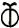
. Toutefois, la
présence dans
l'angle supérieur droit de la
[qui devrait être
comme le
signale Canseliet en son premier quartier] donne
à
l'ensemble l'apparence de l'aes
ustum. Sur le Speculum
veritatis, nous en trouvons l'allégorie
dans le
serpent cloué au chêne, c'est-à-dire
[sur l'arbre
envisagé
comme rotundum, voir Aurora
consurgens,
I]. C'est la galle de notre kermès :
« Prends le feu ou la chaux
vive dont les
philosophes disent qu'elle pousse sur les arbres...
Dieu lui a
accordé une force et une efficacité si grandes que la
divinité elle-même est mêlée à ce feu.
Et ce feu purifie tant au purgatoire que dans les
enfers.
» [Gloria Mundi
seu
Tabula Paradisi, Musaeum Hermeticum, 1678, pp.
203-305]
Sur le symbolisme de la galle, nous renvoyons à nos symboles. Il ne fait aucun
doute que,
pour les Adeptes, notre feu est celui du saint Esprit qui
unit au  en sorte d'en faire l'anima mundi
en sorte d'en faire l'anima mundi
 . De cette rouille
[ioV] du
chêne,
l'Artiste va tâcher de faire naître et prospérer le
gui [ixoV],
remède
universel. C'est là ce Lion Verd que signalent
tant d'auteurs comme Georg Ripley ou Basile Valentin. Les
druides le
cueillaient en hiver quand l'arbre est dépouillé, ce
qu'atteste ce nid dans lequel trône le coq [gallus] du Speculum veritatis.
Ce gui
représente le véritable élixir de l'alchimiste, en
ce qu'il est sa résine ou son humeur visqueuse [ixoV]
dans lesquelles on reconnaît le Mercure philosophique. Et
c'est
en droite ligne [ixiV] que
nous sommes
conduits au sulphur et à sa
réincrudation.
Mais c'est là un terme encore lointain et nébuleux, que
nous ne verrons se dévoiler qu'à la planche
15 : patience et humilité ! Poursuivons. SH décrit
ensuite les couleurs - qu'il faut comprendre par
l'entendement - des
deux roses que l'on aperçoit à l'extérieur du
mandala formé par les branches entre-croisées :
. De cette rouille
[ioV] du
chêne,
l'Artiste va tâcher de faire naître et prospérer le
gui [ixoV],
remède
universel. C'est là ce Lion Verd que signalent
tant d'auteurs comme Georg Ripley ou Basile Valentin. Les
druides le
cueillaient en hiver quand l'arbre est dépouillé, ce
qu'atteste ce nid dans lequel trône le coq [gallus] du Speculum veritatis.
Ce gui
représente le véritable élixir de l'alchimiste, en
ce qu'il est sa résine ou son humeur visqueuse [ixoV]
dans lesquelles on reconnaît le Mercure philosophique. Et
c'est
en droite ligne [ixiV] que
nous sommes
conduits au sulphur et à sa
réincrudation.
Mais c'est là un terme encore lointain et nébuleux, que
nous ne verrons se dévoiler qu'à la planche
15 : patience et humilité ! Poursuivons. SH décrit
ensuite les couleurs - qu'il faut comprendre par
l'entendement - des
deux roses que l'on aperçoit à l'extérieur du
mandala formé par les branches entre-croisées :
« On remarquera aussi les
deux fleurs qui
pendent en bas du la figure; la planche est en noir,
mais leurs
couleurs respectives ne font pas de doute pour
l’Hermétiste; celle qui correspond à la
polarité féminine est blanche, celle qui
correspond
à la polarité masculine est rouge. »
[Vingt-cinq
Commentaires sur le
Mutus Liber, op. cit.]
La fleur de gauche pointe vers la  ; celle de droite nous présente ses
pétales et étamines. Elle rappelle la rose de Robert
Fludd [Summum Bonum, 1629,
voir Aurora
consurgens, I] qui
est tournée vers l'air et le
; celle de droite nous présente ses
pétales et étamines. Elle rappelle la rose de Robert
Fludd [Summum Bonum, 1629,
voir Aurora
consurgens, I] qui
est tournée vers l'air et le  et dont la forme suit celle de .
La logique hermétique
veut que la fleur blanche soit liée à la et la fleur rouge, à .
La rose blanche est l'image du SEL
et dont la forme suit celle de .
La logique hermétique
veut que la fleur blanche soit liée à la et la fleur rouge, à .
La rose blanche est l'image du SEL  tandis que la rose
rouge est liée au sulphur
[voir Fontenay pour plus
d'explications].
Mais nous n'avons pas épuisé la symbolique du gui :
tandis que la rose
rouge est liée au sulphur
[voir Fontenay pour plus
d'explications].
Mais nous n'avons pas épuisé la symbolique du gui :
« Au
moment de la mort hivernale, les tiges verts [du gui]
se parent de
boules blanches brillantes; la vie, l'âme du chêne...
semble s'être réfugiée dans l'humble parasite qu'il
supporte. » [A.-L. Mercier, la flore populaire de
l'Île-de-France,
Paris, 1954-1963]
Ces boules brillantes sont identiques aux yeux de poissons
dont
l'aspect de nacre, selon les alchimistes, signalent que la
surface de
la matière est bien disposée [voir Ripley
Scrowle]. Certains Artistes y ont vu le :
«... C'est avec surprise
que j'ai
constaté que la partie de matière
récupérée se présentait bien comme une
masse noire mais constellée de petits cristaux formant
à
sa surface et dans sa masse de multiples points
étoilés.
La tradition me laisse penser qu'il s'agit là du
Mercure
prêt à sortir de son lit. » [Armand
Barbault,
L'Or du millième
matin, J'ai Lu, 1969,
Introduction aux préparations du second ordre,
p. 161]

arbre alchimique
et serpent
Ouroboros
Il n'est pas question ici de discuter du point de savoir
si cette massa
confusa dont parle Barbault est ou non la prima materia.
En revanche,
il est presque assuré que cet aspect cristallin évoque ce
que les Adeptes nomment le suc de la Lunaire dont
l'idéogramme
est  [aspect, rappelons-le, que
devrait avoir
selon Canseliet la Lune dans la planche
1].
Or, ce suc de la Lunaire selon la Tradition, est le SEL.
Quoi qu'il en soit, nous voilà au moment de l'horo aura
selon ce qu'en
dit l'antique formule celtique « Au
gui, l'an neuf ! » C'est là le Golden Bough
de Frazer ou
rameau d'or; voilà l'alexipharmacon des Gaulois [omnia sanitatem].
En breton, on
l'appelle encore deur
derhue
ou eau de chêne : il s'agit bien de
l'eau du chêne creux [cava
ilex] de Nicolas Flamel par laquelle on rejoint
la
légende du roi qui meurt de la main du hiérourgos. On
assiste là au phénomène de transfert et de
projection dont l'hiéroglyphe - sur la planche
1 du ML
-
est l'échelle de Jacob. Ce moyen de jonction entre et
nous est offert par l'arbre
philosophique de l'image précédente. Sans vouloir revenir
de manière approfondie sur l'arbor vitae
[voir Aurora consurgens, I],
il
semble important de faire voir que la liaison entre et
est obtenue via l'artifice de la
corruption ou putrefactio
[ioV].
C'est ce que la
graveur a voulu représenter par le mandala qui occupe le
milieu
de l'arbre, mandala formé par l'Ouroboros, dans lequel une
scène récurrente est inscrite : celle du pélican
s'offrant lui-même en pâture à sa couvée [voir Aurora
consurgens, II - figure
22].
De part et d'autre du mandala, le tronc et les racines,
qui
s'épuisent dans la terre et constituent le reflet
chthonien de
la psyché [le ÇA -
voir Jung, l'Arbre
philosophique
in Racines de la
conscience];
et aussi le faîte de l'arbre qui en forme la partie
spirituelle [le SOI].
Il est clair que le
processus de transformation [qui
tend vers l'individuation] est ce mandala où
nous devons
imaginer que réside le MOI. Les
transpositions
alchimiques sont les suivantes :
[aspect, rappelons-le, que
devrait avoir
selon Canseliet la Lune dans la planche
1].
Or, ce suc de la Lunaire selon la Tradition, est le SEL.
Quoi qu'il en soit, nous voilà au moment de l'horo aura
selon ce qu'en
dit l'antique formule celtique « Au
gui, l'an neuf ! » C'est là le Golden Bough
de Frazer ou
rameau d'or; voilà l'alexipharmacon des Gaulois [omnia sanitatem].
En breton, on
l'appelle encore deur
derhue
ou eau de chêne : il s'agit bien de
l'eau du chêne creux [cava
ilex] de Nicolas Flamel par laquelle on rejoint
la
légende du roi qui meurt de la main du hiérourgos. On
assiste là au phénomène de transfert et de
projection dont l'hiéroglyphe - sur la planche
1 du ML
-
est l'échelle de Jacob. Ce moyen de jonction entre et
nous est offert par l'arbre
philosophique de l'image précédente. Sans vouloir revenir
de manière approfondie sur l'arbor vitae
[voir Aurora consurgens, I],
il
semble important de faire voir que la liaison entre et
est obtenue via l'artifice de la
corruption ou putrefactio
[ioV].
C'est ce que la
graveur a voulu représenter par le mandala qui occupe le
milieu
de l'arbre, mandala formé par l'Ouroboros, dans lequel une
scène récurrente est inscrite : celle du pélican
s'offrant lui-même en pâture à sa couvée [voir Aurora
consurgens, II - figure
22].
De part et d'autre du mandala, le tronc et les racines,
qui
s'épuisent dans la terre et constituent le reflet
chthonien de
la psyché [le ÇA -
voir Jung, l'Arbre
philosophique
in Racines de la
conscience];
et aussi le faîte de l'arbre qui en forme la partie
spirituelle [le SOI].
Il est clair que le
processus de transformation [qui
tend vers l'individuation] est ce mandala où
nous devons
imaginer que réside le MOI. Les
transpositions
alchimiques sont les suivantes :
Ces réflexions permettent d'amplifier ce que nous avons
déjà posé en conjecture dans l'Aurora consurgens et
le Ripley Scrowle. Si
nous
reconsidérons, de ce point de vue, la planche
1 du ML,
nous pouvons y voir également un mandala où
l'idéogramme du muriate [issu du nitrum  ] sert
d'enveloppe spirituelle et d'image du SOI.
] sert
d'enveloppe spirituelle et d'image du SOI.
« L’une des clefs
opératoires
de l’alchimie est ainsi qualifiée : "ouvrir le rocher
avec la verge de
Moïse". Car, outre son sens initiatique, la
figure a un
sens très précis dans le domaine des manipulations de
laboratoire. » [SH, op. cit.]
SH reprend le commentaire de Pierre Dujols. La verge de
Moïse est
un symbole de l'airain puisqu'elle se transforme, par le
pouvoir
spirituel de son possesseur, en serpent. Elle passe donc
d'une forme
solide et droite - sulphur
- à une forme
visqueuse et curviligne - mercurius . Cet objet présente les caractères
décrits par Fulcanelli pour définir l'eau mercurielle,
alternativement étoilée ou métallique. Quant au
« sens initiatique », il nous paraît plus conforme
à la cabale d'y voir un sens hermétique : la manipulation
de laboratoire consiste à dissoudre dans le bain mercuriel
[la fontaine du Trévisan]
les natures métallique
et minérale . Elles sont
disposées de part et
d'autre de l'arbre et caractérisent les deux polarités
élémentaires de la psyché : animus et anima .
L'ouverture du rocher est une
figure de style puisque l'Artiste doit préparer ses
matières à l'état de poudre ou même
porphyrisées; l'idée demeure, toutefois, pour signaler
que l'effet du dissolvant agit jusqu'au tréfonds de la materia prima en sorte d'y
puiser la
matière sulfureuse. Dans l'Exode, Dieu révèle sa
puissance à Moïse et lui indique trois signes qui
témoignent de la manifestation des prodiges. Nous venons
d'évoquer le premier, la transformation du bâton en
serpent. Cette métamorphose ressortit de la nigredo . Le deuxième prodige
consiste en une
modification de la main de Moïse qui devient lépreuse et
couverte de neige. Quant au troisième prodige, il renoue
plus
directement avec le symbolisme alchimique :
« Alors, s'ils ne croient
pas plus à
ces deux signes et n'entendent pas ta voix, tu
prendras de l'eau du
Fleuve [du Nil] et la répandras à terre; l'eau que
tu auras prise au
Fleuve, sur la terre
deviendra du sang. »
[Ex, 4, 9]
Le Nil, on s'en souvient, est le symbole mercuriel qui a
trait aux
sublimations [voir
Diodore de
Sicile, Histoire
Universelle]
et les Aigles représentent les crues du fleuve. À ce
qu'en rapporte Philalèthe,
chaque
Aigle est une sublimation. L'allégorie hermétique exprime
l'effet de l'aqua permanens sur la vile ou materia prima : la préparation
du . Il reste à évoquer
les trompettes qui
représentent - par le son émis - l'un des
éléments dynamiques de cet ensemble. D'abord, leur
nombre. Elles sont deux comme les éléments que l'Artiste
doit traiter et ce n'est sans doute pas un hasard si le
graveur a fait
figurer l'un des anges au milieu de l'amande mystique [amugdaloV]
et l'autre dont les ailes apparaissent en dehors de ce
mandala. Nous
l'avons déjà dit, il s'agit là d'un rêve, ni
plus ni moins. Le rêve du moins - c'est un truisme - a sa
propre
logique et lorsque celle-ci est mise au service de
l'alchimie, tous les
espoirs sont possibles... Eh bien ! Nous devons croire
qu'en 1677,
l'auteur du ML
appliquait les préceptes de Gerhard Dorneus quand, en
1570, il
publiait son Lapis
metaphysicus
aut philosophicus [voir Jung, Synchronicité et Paracelsica].
Ceci pour rappeler que nous trouvons dans le ML - et sa première
planche
- l'un des derniers fleurons dans l'art symbolique
appliqué
à Hermès.
planche
2

Mutus Liber, Rupellae [La
Rochelles], 1677 - II
Cette
planche
se
compose de deux parties ; la partie supérieure où
le
soleil
brille en plein ; au-dessous sont deux anges qui tiennent
un matras
ventru
; dans le matras un personnage que nous identifions comme
Neptune,
flanqué de Diane et d'Apollon : une étoile
surmonte celui de gauche tandis qu'une fleur
surmonte celui de droite. Cette partie supérieure est une
évocation
allégorique, en gloire. La partie inférieure nous
montre
un athanor auprès duquel est agenouillé le couple
alchimique
dans une attitude de prière. On notera que la femme a la
main
droite
levée [indication
possible
pour
une identification à Minerve
ou à Junon]
; notez qu'elle semble tenir de la main gauche un objet
invisible : on
dirait d'une déesse à laquelle on aurait
ôté
ses attributs.
Cette
planche
a trait
à la préparation du Mercure. Les deux principes
en sont
figurés
par l'étoile et la fleur. L'attitude de prière et
de
louange
se rapporte à l'action d'honorer [percolo
= honorer, mais aussi filtrer, mettre en digestion].
Les deux anges sont identiques - dans leur symbolique - à
ceux
qu'évoque
N. Flamel dans ses Figures
Hiéroglyphiques
[voir
le commentaire que nous donnons de la figure VI, notes 151
à 156].
Ils sont semblables aux deux gnomes (1)
de la cheminée alchimique du château de
Fontenay-Le-Comte,
au chien de Corascène et à la chienne
d'Arménie d'Artephius,
au loup et au chien de Lambsprinck. Ce sont encore
Gabricius et Beia,
Artémis
et Apollon, les deux colombes de Diane. La femme a quelque
rapport avec
Minerve [associée
à
Junon
et à Jupiter] :
Minerve
tient le globe [analogue
en
cabale hermétique au cercle crucifère]
du monde de la main gauche et le bâton du pouvoir de la
main
droite
[le bourdon
du
pélerin].
L'athanor montre un oeuf dont le contenu est symbolisé par
la
partie
supérieure de la planche. Les anges qui tiennent l'oeuf
philosophal
expriment avec netteté la dissolution de la
matière
à
cette époque de l'oeuvre; nous les avons déjà vus
dans la planche I : le rêveur poursuit son songe. Les
Soufres
sont
sublimés dans
l'aqua permanens et ne sont pas encore réincrudés. La
réincrudation
est l'opération qui consiste en le retour à un
état
antérieur de substances, ici des sels à
l'état
d'oxydes,
conjoints. Cette opération, en cabale hermétique,
contracte
d'étroits rapports avec la chute de l'Ange [voir
section réincrudation].
Voici ce que pense Magophon de cette planche :
"La
seconde
planche n’est pas dans l’ordre des opérations. Elle
représente
l’œuf des philosophes, et pourtant rien, jusqu’ici,
n’a pu faire
connaître
les éléments qui doivent le composer. Pour en
donner une
idée, nous devons enjamber
délibérément un
certain nombre de symboles.
Tout
œuf comprend un germe - la
vésicule
de Purkinje qui est notre sel
; la jaune, qui est notre soufre,
et l’albumine, qui est notre mercure.
Le tout est
enfermé
dans un matras qui correspond à la coquille.
Les trois
produits
sont personnifiés ici par Apollon, Diane et Neptune,
le Dieu des eaux pontiques.
La
tradition veut que ce matras soit
-
contenu
dans un second, et celui-ci renfermé dans un
troisième
fait
du bois d’un vieux chêne. Flamel dit expressément:
" Note
ce chêne ", et Vico,
le chapelain des seigneurs de Grosparmy
et de Valois,
le recommande avec
non moins d’intérêt. Cette insistance est
significative,
et
nous rappellerons qu’à la première planche, sur
le
rocher
des Sages pousse le chêne
Kermès,
l’Hermès
des
Adeptes, car, dans la langue hébraïque K
et H
ne sont qu’une même lettre, prises alternativement
l’une pour
l’autre.
Mais qu’on y ait garde, le kermès minéral
mène au
piège tendu par Philalèthe. Artéphius,
Basile
Valentin et tant d’autres, et
l’on ne doit pas perdre
de vue que
les
philosophes se complaisent dans certaines collusions
verbales. ErmhV est
le mercure
artificiel qui amalgame le
compost.
La
grandeur de l’œuf
importe. Dans la
nature,
l’œuf varie de celui du roitelet à celui de
l’autruche ; mais,
dit
la Sagesse, in medio virtus. Il nous faut dire aussi quelque
chose du verre
philosophique. Les auteurs en parlent peu, et encore avec
réserve.
Mais nous savons, par expérience, que le meilleur est celui
de
Venise.
Il le faut de bonne épaisseur, limpide, sans bulles. On
employait
encore, autrefois, le gros verre de Lorraine fabriqué par
les
gentilshommes
souffleurs ; mais un bon praticien doit apprendre à faire
ses
matras
lui-même.
La
figure inférieure de
cette
seconde
planche représente un athanor entre un homme et une femme
à
genoux, comme s’ils étaient en oraison, ce qui a
porté
certains
esprits faibles à croire que la prière intervient
dans le
travail comme un élément pondérable.
C’est
ici un
facteur inopérant. Le principal, c’est d’employer
les
matériaux
expédients ; mais l’élan de la
créature vers
le
créateur
peut influer favorablement sur les directives, puisque la
lumière
vient de Dieu. Qu’on s’affranchisse néanmoins de ces
suggestions
peu efficaces dans la pratique. La prière de l’artiste,
c’est
plus
encore le travail, travail opiniâtre, souvent dur, dangereux
et
incompatible
avec les mains trop blanches. Comptez donc surtout sur
l’improbus
labor."
[Hypotypose,
Pierre Dujols]
Magophon
est
au moins
d'accord avec Fulcanelli sur un point : c'est que la
stibine commune ne
trouve point sa place dans l'oeuvre. C'est l'albâtre des
Sages
qui
doit être utilisé ici, ou le véritable
stibium de Tollius,
pareil à l'antimoine saturnin d'Artéphius.
Pour
tous les
alchimistes, à ce point du travail, le silence s'impose [« chut
» en latin se dit st,
premières lettres de
stibium
et stannum]. Mais
l'étain,
dans
l'oeuvre, n'est pas non plus ce métal lépreux qui
est
utilisé
dans les dissolutions auriques par la voie
humide.
Il s'apparente encore à l'Airain des sages,
c'est-à-dire
au Rebis. Voici ce qu'en dit A. Barbault :
"La
gravure suivante [planche
2] du Mutus Liber
représente
ce que l'Adepte va percevoir : l'oeuvre complète sur
la
terre
(en
bas) à l'image de son archétype
céleste (en haut).
C'est pourquoi il faudra se cultiver sur tous les
plans pour trouver la
véritable porte d'entrée car, une fois
engagé, on
est seul sur le sentier et la route est longue et
pénible."
[l'Or
du Millième matin, p.
58]
La planche
2 est bi partite comme sept autres de l'ensemble.
Cette bi
partition, Armand Barbault y voit comme l'oratoire et le
laboratoire,
ce que rappelle la Tabula
Smaragdina. On peut encore y
deviner la trace de la
dichotomie archétypale entre animus et anima . À ce titre,
il est
clair que
la partie inférieure de la planche 2 n'est pas exactement
une
représentation factuelle du laboratoire mais comme une
exhortation à l'oratoire, dont le fourneau alchimique, le
fameux
athanor, ne constitue que le medium, l'intercesseur.
L'athanor - que
l'on retrouve sur six autres planches - est bien plus qu'un
simple
fourneau : il s'agit tout à la fois du vase de nature, du
carburant et du comburant.
« On
remarquera, tout en bas de l’athanor, le foyer --
alimenté
non par du charbon ou du bois
mais par une lampe à huile, pourvue de mèches
d’amiante (en augmentant le nombre de celles-ci, en peut
faire
croître la chaleur à un rythme égal). À
l’intérieur se
trouve enclose la cornue de verre ou de cristal,
fermement
obturée (par le « sceau d’Hermes »), qui est
l’oeuf
philosophique;
nous sommes ici devant le procédé alchimique dit de la
"voie humide" pour l’accomplissement du Grand-oeuvre. (la "voie sèche", elle, se
réalisant au creuset). » [SH, op.
cit.]
Le fourneau
philosophique a été particulièrement bien
décrit par Batsdorff [pseudo]
dans le Filet
d'Ariadne. Sur la figure ci-dessus,
c'est l'athanor
des Sages que l'on voit en coupe. Le matras représente
l'oeuf
des alchimistes. On trouvera un traité entier sur ce matras
dans
le Donum
Dei. Observez que les éléments
signalés par les lettres A
- C
et D
sont disposés
autour du matras exactement comme les éléments suivants : FEU
- EAU et AIR. D'ailleurs, les
lettres C
et D
sont disposées en
croissant de Lune, ce qui lève toute équivoque sur leur
sens. Le vaisseau de bois représente les cendres,
c'est-à-dire l'alkali fixe.
Seule la partie inférieure du fourneau paraît plus
conventionnelle. L'intérieur du fourneau est organisé
exactement comme un mandala et l'oeuf en occupe le centre.
On se doute
qu'un pareil fourneau n'existe que dans l'esprit de
l'Artiste et c'est
en vain qu'on irait lui demander de cuire la matière des
alchimistes. Ceux-ci insistent, en général, sur
l'importance qu'il y a de suivre la Nature en tout : aussi
le feu du
fourneau doit-il être bien proportionné [d'où l'allusion,
fréquente, à la musique et aux tons, voir Atalanta fugiens, prolégomène et introduction], tel
qu'en la
minière on l'aura aperçu, à la trace qu'il aura
laissé sur la materia prima.
Neptune, enfermé dans ce que Magophon nomme « la
vésicule de Purkinje » a un signification
multiple [voir humide
radical métallique].
planche
3
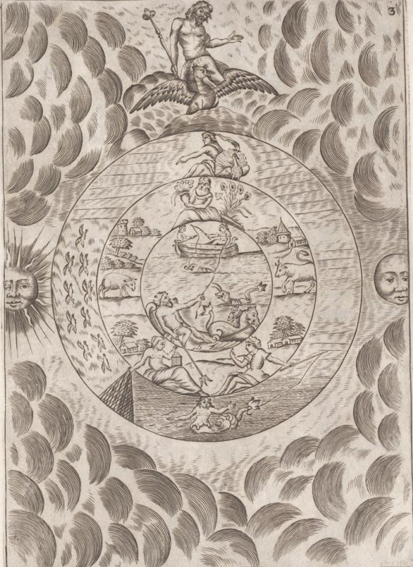
Mutus Liber, Rupellae [La
Rochelles], 1677 - III
C'est un
compendium
du 3ème
oeuvre. En arrière-plan, Jupiter tient
de la main droite un sceptre couronné ; à gauche
le
Soleil,
à droite la Lune. Au centre, trois cercles circonscrits ;
le
cercle
extérieur est lui-même
séparé en trois
parties
: une première partie, la plus importante, est
formée de
trois séries de lignes horizontales, multipliées
par
deux,
à chaque fois (2 - 4 - 6) ; un paon faisant la roue est en
sommité,
accompagnant une déesse. La partie inférieure
montre une
sirène ; la partie gauche dix oiseaux blancs qui sont
peut-être
des colombes. Le cercle moyen montre à sa partie
supérieure
des symboles du printemps et de la floraison ; la partie
moyenne semble
comme en arrière plan et représente le
Bélier et
le
Taureau que l'on voit sur la planche
4.
La partie inférieure nous montre le couple
alchimique,
avec à gauche la femme tenant une lanterne
et à droite, l'homme tenant une canne
à pêche
qui tombe dans le cercle
extérieur.
Le cercle intérieur représente des bateaux
évoluant
dans la mer ; au premier plan, Neptune dans son char armé
de
son
trident qui dépasse le cercle et se termine entre le
couple
alchimique
; plus loin, un bateau où l'on voit évoluer le
couple
alchimique.
Le paon
est une image de la vanité [cf. Donum
Dei]
; c'est l'oiseau
d'Héra
(Junon)
et de Jupiter : c'est un
symbole
solaire. N. Flamel cite le paon toujours au chapitre
consacré
à
la sixième figure (les
Anges) :
"En
cette Opération du Rubisiement, encore que tu imbibes,
tu
n'auras
guère de noir, mais bien du violet, bleu,
et de
la
couleur de la queue du Paon : car notre Pierre est si
triomphante en
siccité
qu'incontinent que ton Mercure la touche, la Nature,
s'éjouissant
de sa nature, se joint à elle et la boit avidement..."
[Fig.
Hier.]
ce qui
indique bien
que nous sommes au 3ème
oeuvre. La queue du paon
indique
évidemment les couleurs de l'arc-en-ciel ; cet arc-en-ciel
a
le
sens de voûte ou arc et renvoie à Mercure par le
truchement
d'Arcas.
Arcas
est le fils de Jupiter et de Callisto, qui a d'étroits
rapports
avec l'étoile pôlaire et l'ours. À ce sujet, E.
Canseliet
s'est exprimé dans ses Deux Logis
alchimiques,
au chapitre de l'Ourse et les deux
Singes
:
"Aussi
Messire du Plessis avait-il connaissance du rôle
considérable
joué par le magnétisme,
dans l'élaboration
philosophale, selon qu'en fait foi son blason qu'il
inscrivit sur la
dépouille
du bélier...Dans
le langage des poètes, qui est
aussi
celui des Dieux, l'ourse
désigne le pôle,
l'étoile
pôlaire, sur laquelle l'artiste doit régler sa
route..."
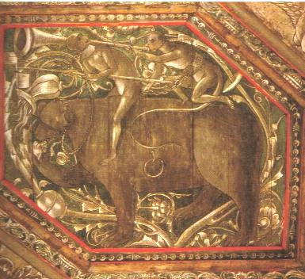
L'Ourse et
les deux
Singes, Deux Logis
Alchimiques,
Eugène Canseliet
La
référence
au magnétisme s'explique ainsi : autrefois, par
magnésie
étaient désignées des terres calcaires
comportant
du carbonate
de calcium
; par ailleurs l'étoile pôlaire renvoie
à celle qui
désigne l'antimoine, autrefois appelé albaster
[pour album
astrum,
c'est-à-dire
astre blanc], que
l'on peut - par
la
cabale phonétique - rapprocher d'alabaster [albâtre,
variété de carbonate de calcium].
Le soleil est la lune indiquent les deux principes mâle et
femelle,
ou le Soufre et le Mercure ou enfin le fixe et l'humide.
La
séparation
trinitaire s'explique d'elle-même par une
référence
implicite aux symboles sacrés
véhiculés par le
Christianisme
; on ne sait peut-être pas que les trois signes du
zodiaque,
qui
constituent donc le quart du zodiaque - voyez l'emblème de
Limojon
de
St-Didier -
sont désignés en latin par
tetartemorion, renvoyant par
assonance
à
la musique en quart de ton (tetartemoria),
au nombre 4 (tetartaeum)
ou même, à la limite, à la colombe
(teta)... La
sirène est le symbole de la coagulation du compost. De
même,
le dauphin
représente le principe humide et froid de l’œuvre,
c’est-à-dire
le Mercure
qui
se coagule au contact du Soufre.
Ce dernier est souvent symbolisé par une ancre marine.
Nous
avons
un commentaire précis de ce qui se produit dans cette
partie
de
l’œuvre, aux DM, II,
p.187 :
"La
longue opération qui permet de réaliser
l’empâtement
progressif et la fixation finale du Mercure, offre une
grande analogie
avec les traversées maritimes... Le dauphin
nage à
la surface des flots impétueux, et cette agitation
dure
jusqu’à
ce que le rémora... arrête
enfin, comme une ancre
puissante,
le navire allant à la dérive."
Fulcanelli
nous dépeint un processus de cristallisation progressif.
Le
Bélier
symbolise Mars, qui fait
référence
à Arès et par conséquent à
un vitriol ; la
préparation du dissolvant peut se faire de
différentes
façons,
en employant soit du vitriol vert [sulfate
de fer ou couperose],
soit du
vitriol
bleu [sulfate
de cuivre],
soit du vitriol blanc [sulfate
de zinc]. On peut
aussi utiliser
des
terres vitrioliques, c'est-à-dire des argiles ou encore
des
schistes
alumineux et pyriteux. Ces derniers peuvent être
décomposés
par l'eau qui fait passer la pyrite à l'état de
vitriol.
C'est sans doute le véritable dragon écailleux,
du moins
dans l'acception sous laquelle il faut l'entendre, quand
on
désigne
l'une des prima materia [dans
une autre acception, le dragon écailleux est le Mercure
commun
ou
1er
Mercure]. Quant au
Taureau,
c'est un symbole double qui peut aussi bien désigner
Vénus-Aphrodite
que, renversé, une terre siliceuse ou alumineuse qui
contient
le
Sel des Sages  . A l'endroit,
Vénus est
l'hiéroglyphe
consacré
à un sel contenant des cendres de
végétaux. On
peut
obtenir ce sel de bien des manières différentes
et c'est,
en partie, cela qui abuse les étudiants, trop
pressés de
résultat que de véritable
compréhension de l'Art
sacré.
A l'envers, Vénus symbolise la Terre : il peut s'agir de
terre
vitrifiable,
de terre argileuse [et
dans
ce cas, le kaolin se signale par sa pureté].
Ce peut être l'albâtre, enfin, qui
désigne la terre
de Jésus, semblable à la pointe de la
flèche du
Sagittaire.
Voyons le commentaire de Magophon :
. A l'endroit,
Vénus est
l'hiéroglyphe
consacré
à un sel contenant des cendres de
végétaux. On
peut
obtenir ce sel de bien des manières différentes
et c'est,
en partie, cela qui abuse les étudiants, trop
pressés de
résultat que de véritable
compréhension de l'Art
sacré.
A l'envers, Vénus symbolise la Terre : il peut s'agir de
terre
vitrifiable,
de terre argileuse [et
dans
ce cas, le kaolin se signale par sa pureté].
Ce peut être l'albâtre, enfin, qui
désigne la terre
de Jésus, semblable à la pointe de la
flèche du
Sagittaire.
Voyons le commentaire de Magophon :
"La
planche
trois n’est pas davantage à sa place. Elle nous conduit
dans
l’empire
de Neptune.
On voit
s’ébattre
dans ses ondes le dauphin cher à Apollon, et des
pêcheurs
sur une barque qui tendent leurs engins. Dans une autre nef,
un homme
est
allongé dans une pose nonchalante. Dans le second cercle, un
paysage,
avec, d’un côté, un bélier; de l’autre,
un taureau,
que nous retrouverons plus loin et étudierons en un moment
plus
opportun. Dans le bas, à gauche, une femme tenant un panier
qui
est le symbole de la lanterne grillagée des philosophes ;
à
droite, un homme jetant sa ligne dans la mer qui se trouve
dans le
troisième
cercle (celui qui renferme les deux autres). Le troisième
cercle
est animé par un vol d’oiseaux à gauche ; une
sirène
au bas, et Amphitrite dans le haut. En marge, le soleil et
la lune, et
planant sur cette scène nautique, Jupiter porté
par son
aigle.
Toute cette figuration a pour but de démontrer que
l’opérateur
doit déployer toutes ses facultés et mettre en
œuvre
toutes
les ressources de l’art pour capturer le poisson mystique,
dont
parle d’Espagnet.
L’auteur
aurait
dû nous
enseigner
d’abord
à tramer le filet nécessaire à cette
Pêche
miraculeuse.
Réparons son oubli : le guideau doit être
incombustible et
demeurer inaltérable. L’appareil bien disposé
dans
les
eaux
profondes, on se munira d’une lanterne dont l’éclat
attirera la
proie dans les rets. On peut, suivant d’autres symboles,
employer
la
ligne
; mais l’arcane est dans la préparation de la bourse, et
le mot
est de circonstance, car il ne s’agit rien moins que de
prendre
le
poisson
d’or.
On
trouvera le secret de cette
opération
dans un ouvrage classique intitulé le Filet
d’Ariadne, car nous ne pouvons
résumer le
procédé
en quelques lignes dans ce cadre restreint. Quant à la
manière
d’allumer la lanterne magique indiquée par le panier, elle
n’est
décrite qu’en des ouvrages très rares et de
manière
confuse. Il nous faut donc en dire quelques mots.
Certains
auteurs,
et non des
moindres,
ont
prétendu que le plus grand artifice opératoire
consiste
à
capter un rayon de soleil, et à l’emprisonner dans un
flacon
fermé
au sceau d’Hermès. Cette image grossière a fait
rejeter
l’opération
comme une chose ridicule et impossible. Et pourtant, elle
est vraie
à
la lettre, à tel point que l’image fait corps avec la
réalité.
II est plutôt incroyable qu’on ne s’en soit pas
encore
avisé.
Ce miracle, le photographe l’accomplit en quelque sorte en
se
servant
d’une
plaque sensible qu’on prépare de différentes
manières. [voir héliographie]
Dans
le Typus
Mundi,
édité au XVIIème
siècle par les
PP. de la Compagnie de Jésus, on voit un appareil,
décrit
encore par Tiphaine de Laroque, [sic.
Tiphaigne de La Roche dont les écrits sont visibles sur
le
serveur Gallica
de la bnf] au moyen duquel on peut
dérober le feu du Ciel et le fixer. Le
procédé est
on ne peut plus scientifique, et nous déclarons candidement
que
nous révélons ici sinon un grand
mystère, du moins
son application à la pratique philosophale.
Les
aigles
qui volent à
gauche,
dans
le grand cercle, désignent les sublimations du mercure. II
en
faut
de trois à sept pour la Lune, et de sept à dix
pour le
Soleil.
Elles sont indiquées par le vol d’oiseaux et
indispensables, car
elles préparent la robe nuptiale d’Apollon et de Diane,
sans
laquelle
leur union mystique serait impossible. C’est pourquoi
Jupiter, le
Dieu
qui gouverne l’aigle, préside à ces
opérations." [Hypotypose,
Pierre Dujols]
Ce
qu'exprime
Dujols,
c'est le moyen de capter le Soufre avant de l'infuser dans
le Corps de
la Pierre. C'est cela qui est « capter
un rayon de soleil, et à l’emprisonner dans un flacon
fermé
au sceau d’Hermès ».
Le rayon de soleil est le Soufre rouge qui doit d'abord
être
dissous
dans l'eau-vive prime de Limojon.
On
peut
en trouver la source dans un animal mythique : la licorne
dont le
symbolisme
exprime très bien l'opération. C'est par pure
analogie
qu'il
faut y voir un rapport avec la photographie mais l'image -
si l'on peut
dire - est semblable. Simplement dans le premier cas,
c'est une chaux
métallique
qui est capturée avant que d'être
injectée dans le
corps de la Pierre, alors que dans le second cas, ce sont
des photons
qui
viennent modifier des sels d'argent. A propos, s'est-on
jamais
avisé
que c'est le même Marc-Antoine Gaudin
[voir héliographie],
qui a
proposé
l'emploi de la gélatine pour préparer les
premières
émulsions au gélatino-bromure d'argent. La
lanterne
grillagée
voile l'une des substances du dissolvant, par la
combinaison de la
lumière
et du trémis qui signale à l'attention du
cabaliste la
structure
en X,
dont Fulcanelli nous dit qu'elle
est
celle qui apparaît à la surface du Mercure quand
il a
été
canoniquement préparé. Quant aux sublimations du
Mercure,
il s'agit de l'un des plus hauts secrets de l'oeuvre au
point que nous
doutons que des alchimistes aient osé
dévoilé
l'arcane,
tant il se révèle constituer le pivot de
l'Oeuvre. De
cette
planche, A. Barbault a donné ce lumineux commentaire :
"La planche
III du Mutus Liber
complète l'enseignement traditionnel
destiné
à fournir à l'Adepte la connaissance de tous les
éléments,
de toutes les forces, de tous les secrets de la nature
nécessaires
à l'accomplissement de son OEuvre et à
l'affirmation de
sa
puissance. Il est dit par ailleurs dans la Table
d'Emeraude :
« Tu
auras par ce moyen la gloire de tout le monde. Et pour
ce, toute
obscurité
s'enfuira d'avecques toy. Et cecy est la force de
toute force. Car elle
vaincra toute chose subtile et toute chose solide
pénétrera.»
Ainsi
l'Adepte rayonnera-t-il en puissance sur le monde
ainsi qu'il est
symbolisé
par le Père trônant au sommet de cette
troisième
planche
et tenant entre ses mains le sceptre de la puissance
et de la
connaissance.
Il dispose des deux polarités essentielles
représentées
par le soleil et par la lune situés de part et d'autre
de
cercles
concentriques dont l'intérieur évoque tous les
éléments
de la nature, la Matière première qui entre dans
la
confection
de l'oeuvre, l'irradiation d'en haut et d'en bas, les
deux signes du
Zodiaque
- Bélier et Taureau - caractérisant
l'époque
où
l'Adepte recueille la rosée, les perles
d'émeraude qui
entrent
dans toutes les préparations, etc.
Ce
qu'il faut retenir de ces indications symboliques qui
sont de toute
première
importance, c'est que l'Adepte doit se préparer
très
longtemps
à l'avance et qu'il serait insensé de croire
qu'il suffit
de jeter un coup d'oeil rapide sur les ouvrages
d'alchimie pour
aussitôt
passer à l'action et partir en quête de la
Matière
première. Celle-ci ne contient au départ aucune
des
particules
invisibles qui tôt ou tard devront s'y fixer pour que
se
produise
sa métamorphose. [...] La plupart des auteurs qui se
sont
intéressés
à l'alchimie ont totalement négligé
les trois
premières
planches du Mutus Liber pour aborder
directement
la quatrième
où l'on voit
l'Adepte
et sa compagne occupés à tordre des toiles
préalablement
exposées au-dessus de l'herbe verte des prairies afin
qu'elles
s'imbibent
peu à peu des perles de rosée ; ces
dernières, on
le sait, ne cessent de monter le long des tiges vertes
au moment
où
la nature se trouve en pleine exaltation, au
printemps, sous les signes
du Bélier et du Taureau symbolisés par les deux
animaux
figurant
sur cette quatrième planche. L'irradiation des forces
vives
est,
elle, symbolisée par les faisceaux qui rayonnent
du.sommet
de la
figure et qui contiennent les deux polarités solaire
et
lunaire
dessinées à leur tour dans les coins
supérieurs de
la figure. Les nombreuses toiles étendues sur la
prairie
évoquent
l'importance de l'opération ainsi que l'abondance de
la
rosée
matinale qu'il faudra recueillir " [l'Or
du Millième matin,
pp. 125-126]
planche
4

Mutus Liber, Rupellae [La
Rochelles], 1677 - IV
C'est
assurément
la planche la plus connue du ML.
Nous
y retrouvons le Bélier et le Taureau, le couple alchimique
tordant
une toile afin d'en extraire de la rosée de mai et des
toiles
étendues
plus loin ; au dernier plan se projettent un prisme
lumineux et les
deux
symboles du Soleil et de la Lune. Nous avons
évoqué
ailleurs
cette allégorie qui se rattache à l'acquisition
progressive
du sel de la rosée de mai qui fait partie du
Mercure préparé ou dissolvant universel [le
Lion vert de Ripley]
:
"Les
Métaux, comme affirmé
précédemment,
contiennent
un sel, duquel le feu et la sagacité de l'artiste
peuvent
extraire
une eau que les Sages nomment eau Mercurielle, lait de
la Vierge,
Lunaire,
rosée de Mai, le Lion Vert, le Dragon, le Feu des
Sages.
Cette
eau
Mercurielle, ils l'ont comparée à la corrosive
eau-forte,
car de même que ces eaux à base d'atrament,
d'alun, de
cuivre,
d'arménite, etc, corrodent les métaux et les
dissolvent,
ainsi cetesprit
Mercuriel, ou eau, dissout son
corps
et en sépare la Teinture."
[E.
Kelly, Théâtre
de
l'Astronomie
Terrestre,
chapitre IV : préparation
de la
Terre
Mercurielle]
La rosée
de mai est
un des composés particuliers du dissolvant universel ; ce
que
l'on sait moins, c'est que cette rosée est ni plus ni
moins -
par cabale - que de l'urine d'ange et que sa formation
implique qu'une
substance se trouvant dans l'atmosphère, monte d'abord de
la
terre jusque dans le ciel, avant de redescendre sous une
forme
légèrement différente : il s'agit donc d'une
tentative d'expliciter par l'image une opération relevant
de
l'oratoire [l'échelle
de
Jacob et les anges, voir planche
inaugurale] par une opération de
laboratoire [le
recueil d'un sel dans une large
bassine].
E. Canseliet revient sur cette rosée de
mai
au chapitre de l'Inscription
extérieure
de la villa
Palombara (Deux
Logis alchimiques,
p. 53) :
"Les
ondes sont ces eaux que Moïse, en son premier livre ou
la
Genèse,
qualifia de supérieures et qui
génèrent le
météore
infiniment précieux au-dessus de tous les autres,
dénommé
la rosée, elle-même véhiculant l'esprit
ou le sel
harmoniac
du ciel. Celui-ci est isomère du nitre ou isotope si
l'on
veut,
pour parler le langage qu'utilisent les spagyristes
actuels. La
série
des opérations se montre interminable autant que
laborieuse,
qui
fut dépeinte, en ses moindres détails, par
l'anonyme
Altus."
Les ondes
que
Canseliet évoque sont directement palpables dans le
faisceau
lumineux qui jaillit de la voûte du ciel. Imaginons
l'éther des Anciens, vibrant régulièrement
à l'instar d'une harpe céleste, sous l'influence du vent .
C'est ce vent, devenu visible par la magie de la gravure,
que donne
à voir Altus. Il l'a décomposé en un prisme
où deux ensembles sont disitngués : l'un est en rapport
avec les astres errants; il s'agit des sept bandes
claires. L'autre,
fait de douze bandes plus sombres, réunies en paires,
ressortit
des signes du zodiaque. Si l'on tient compte du fait que
chaque
planète, selon les Chaldéens, exerce une maîtrise
sur deux signes [maîtrise
diurne
et nocturne], il est possible d'avancer que les
bandes
claires externes correspondent aux planètes qui n'ont
qu'une
seule maîtrise : et
dont les idéogrammes sont disposés aux coins
supérieurs de la planche. Selon le schéma ci-dessous, on
peut donner un sens et un nom à chacun des rais de
l'arc-en-ciel
:
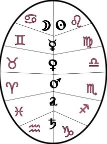
mandala
des
maîtrises planétaires
En effet,
l'éventail se déploie en « lisant » chaque
rai et sa correspondance dans le mandala, dans l'ordre des
aiguilles
d'une montre, à partir du .
La signifiance hermétique de ces arcanes est
étudiée dans notre zodiaque
alchimique et la section humide
radical analyse l'apport des planètes au grand
oeuvre. Les
planètes et les signes se complètent, l'une étant
le spiritus
rector
de l'autre. Il faut entendre par là que les planètes en
corps représentent les chaux des métaux, ouverts par le
dissolvant des alchimistes. L'ouverture du métal est
symbolisée par l'hiéroglyphe ,
la sublimation suivant cette ouverture ou « mort » du
métal. La psychanalyse nomme transfert ce processus de
sublimation : il consiste en l'abandon par l'animus des défroques, vieux
sequins, vieilles
cuirasses en vue de l'animation [passage
animus - anima] du spiritus qui passe par sa
dépuration.
Dans l'introduction, nous avons vu que la planche 4 devait
être
comparée à la fig. 9 du Ros. Phil.,
allégorie
de la mondification [purification].
Ce
terme de technique alchimique signifie nettoyer, blanchir
et
recouvre l'opération des laveures de Flamel. [on
notera que les termes net, propre (mundus) et le
monde, l'univers
(mundus) sont homonymes en latin. Ceci est un trait de
cabale qui
explique pourquoi les Adeptes assurent qu'il existe un
miroir
d'où l'on peut contempler le monde, cf. blasons alchimiques ; d'autres écrivent qu'il
faut
blanchir Latone, laver le laiton, i.e. l'airain]
L'allégorie est reprise dans l'épisode des écuries
d'Augias qui forme l'un des Douze travaux d'Hercule [voir Fontenay].
À ce sujet, il convient de citer Pernety :
Tous
les Philosophes parlent de la matière du grand œuvre ou de
la médecine dorée,
comme d’une matière extrêmement vile,
méprisée, & souvent mêlée avec le
fumier, ils disent même qu’elle se trouve sur le fumier,
parce quelle a
beaucoup d’ordures & de superfluités, dont il faut la
purger. Il n’est donc
pas surprenant que ce travail ait été imposé par
Eurysthée à Hercule, qui est
l’Artiste. Les témoignages des Philosophes le prouveront
mieux que le
raisonnement, Morien dit (Entretien
du Roi
Calid.) : « Les
Sages nos
prédécesseurs disent, que si vous trouvez dans le fumier
la matière que
vous cherchez, vous devez l’y prendre ; & que si vous
ne
l’y trouvez pas,
vous devez vous donner de garde de tirer de l’argent de
votre
poche pour
l’acheter, parce que toute matière qui
s’achète à grand prix, est fausse &
inutile dans notre œuvre. » Avicenne (De
Animâ, dict.
I. c. 2.) ;
« Nous
trouvons dans les Livres qu’Aristote a
écrits sur les pierres,
qu’on en trouve deux dans le fumier, l’une de bonne odeur,
l’autre de
mauvaise, toutes deux méprisées, & de peu de valeur
aux yeux des hommes ;
si l’on savait leurs vertus & leurs propriétés,
on en ferait un grand cas ;
mais parce qu’on les ignore, on les méprise, on les laisse
sur le fumier
& dans des lieux puants ; mais celui qui saurait en
faire
l’union,
trouverait le magistère. » Gratien, cité par Zachaire, dit comme
Morien :
« Si
vous la trouvez dans le fumier, & qu’elle
vous plaise,
prenez-la. » L’Auteur du Rosaire cite Merculinus,
qui
dit : « Il y a
une pierre cachée & ensevelie dans une fontaine. Elle
est
vile, méprisée,
jetée sur le fumier, & couverte
d’ordures. » Arnaud de Villeneuve
(Novum lumen, c. I.) « Elle se vend
à vil prix ; elle
ne coûte même
rien. » Bernard Trévisan (Philos. des
Métaux.) : « Cette
matière
est devant les yeux de tout le monde & le monde ne la
connaît
pas, parce
qu’elle est méprisée & foulée aux
pieds. » Morien (Cap. 9.) : « Avant
sa
confection & sa parfaite préparation, elle a une
odeur puante
& fétide ; mais après qu’elle est
préparée, elle en a une bonne....
Son odeur est mauvaise, & ressemble à celle des
sépulcres. » Calid
(Loc. cit.) : « Cette pierre est
vile, noire, puante,
& ne s’achète
point. » [Fables
Égyptiennes et Grecques, tome II, Livre V, chap.
8]
L'opinion
d'Avicenne [pseudo]
est
notable : il parle de deux pierres dont l'une est odorante
et l'autre
puante. Voyons cela. La pierre de bonne odeur rappelle le
baume de vie
évoqué supra [Balsanum
vitae] et la pierre fétide, le
sulphur en son premier
état, c'est-à-dire ce
spiritus abscondus que nous voyons à la fig. 8 du Ros. Phil.

fig.
8,
Ros. Phil.
Par
fumier,
il ne faut pas entendre le commun, celui que l'on
rencontre dans les
fermes - encore qu'il ait un intérêt certain [voir Alexandre
Sethon] - ,
mais bien plutôt la matière des Sages pour autant qu'elle
renferme la proportion adéquate d'escarboucle [obtenue par distillation
des urines
selon ce qu'en rapporte Alchild
Bechil],
c'est-à-dire de sang de Nessus [voir Atalanta
XXV], sorte de spath visqueux auquel on
adjoint du foie de
soufre et de l'air phlogistiqué [ = air
corrompu dont le nom vulgaire est homonyme d'un traité
que
Fulcanelli attribue à Senior, voir Libavius].
Les Amoureux de science auront reconnu le vase de nature
composé
d'engrais [Lac
virginis],
de l'humide radical des
métaux
et de la déjection de l'étoile polaire appellée sputum lunae.
Nous ne
saurions mieux dire. Dans le Rosaire, Senior ajoute :
«
L’eau que j’ai mentionnée est une chose qui descend
du ciel ; la terre avec son humidité la reçoit et
l’eau du ciel
est
retenue par l’eau de la terre, et l’eau de la terre la
retient grâce à sa soumission et à son sable et l’eau retiendra
l’eau et Albira sera blanchi par Astuna. »
[Ros. Phil.,
premier blanchissement
de la première pierre]
Jung
indique [Psychologie
du transfert, op. cit., p. 139, note 4]
que le texte du De
Chemia est
différent de celui du Ros.
Phil. Albira est remplacé par Alkia et
Astuna par
Astuam. Alkia serait mis pour al-kiyan, principe vital, où
l'on
peut voir le sulphur . Quoi
qu'il en soit, Albira et
Astuna forment les opposés dont l'Artiste doit faire son
airain.
Notons qu'Albira est mis pour Albaras ou arsenic [qui caractérise le Sel ou
corps
de la pierre]. Un autre extrait du Rosaire, de
Merculinus,
permet de mieux comprendre le processus de dépuration :
« La
conception transforme en sang ce qui était semblable
au lait. Si
la femme blanche est donnée en
mariage à l’époux rouge tous deux bientôt
s’embrassent et s’accouplent. Ils se dissolvent
eux-mêmes et
s’accomplissent aussi eux-mêmes afin qu’après
avoir été deux, ils deviennent en quelque sorte un seul corps.
» [Ros. Phil.,
La
conjonction ou le coït]
On pourra
revoir la gravure qui orne l'emblème
XLI de l'Atalanta fugiens,
sur la
transformation des roses blanches en roses rouges, en
liaison avec le
mythe d'Adonis. C'est de Prudence [c'est-à-dire
de Sagesse, voir Gobineau]
et de feu que
l'alchimiste doit être muni dans cette phase
d'albification.
De cette planche 4,
nous avons ainsi complété
l'interprétation :
Il est clair que l'on peut imaginer la scène suivante : le
couple
alchimique est en train de tordre un linge dans une
bassine ; certains
critiques ont cru qu'il s'agissait de la rosée
de mai ou rosée
céleste. En arrière plan, nous
voyons d'autres linges tendus : ils s'imprègnent peu à
peu du sel précieux [que
Dujols
appelle selage, cf. supra]
;
à gauche le
Bélier et
à
droite le Taureau : que l'on se rapporte à notre schéma
de préparation
du dissolvant. On y verra que le
Bélier
[Ariès]
voile Arès, qui est cet acide soi-disant
vitriolique [en
fait
il s'agit de l'acide carbonique, nous le savons de nos
jours]
; le Taureau voile le complexe Vénus-Aphrodite qui cache
le
composé K H dont
la
nature peut varier selon le mode de
préparation
: huile de tartre faite par défaillance [alkali
fixe desséché],
alkali
fixe,
nitre aérien, foie de soufre. Ces linges que l'on
aperçoit, nous
l'affirmons,
ont été enduits au
préalable d'alkali
fixe
et on les a laissés seulement
alors s'imprégner de
rosée, tout
simplement parce qu'il s'agit d'eau distillée. Le couple
alchimique
recueille donc le tartre
vitriolé dissous dans
une bassine avant de soumettre le
liquide
à l'évaporation a siccite. C'est le principal
composant
du Mercure
philosophique qui est ici
exposé au vu de tous. Veuillez
croire
que ce ne sont pas les oligo-éléments de la
rosée
de mai qui pourront contribuer à préparer le
Mercure des
Sages... Magophon sera-t-il d'accord avec nous ?
"La quatrième
planche montre comment s’opère la collection du flos
coeli.
Des draps sont tendus sur des piquets pour recevoir la rosée
céleste.
Au-dessous, un homme et une femme en opèrent la torsion pour
en
exprimer la divine liqueur, qui tombe dans un grand vase
disposé
à cette fin. A gauche, on voit le Bélier;
à
droite,
le Taureau.
Le
flos coeli a mis à la
torture
l’esprit
des mauvais souffleurs. Les uns y ont vu une sorte d’influx
magique,
car
pour ceux-là, la magie est une puissance surnaturelle
acquise
par
le concours des esprits, bons ou mauvais. Les autres, plus
réalistes
et plus rapprochés du vrai, y ont reconnu la rosée
matinale. Le flos coeli est appelé, en effet, l’eau des
deux
équinoxes,
d’où l’on a déduit qu’il
s’obtient au printemps et à
l’automne
et est un mélange des deux fluides. Certains, se croyant
plus
avisés,
allaient recueillir ce mystérieux produit dans une sorte
d’algue
ou de lichénoïde dont le nom vulgaire est le nostoc.
Dans les Sept Nuances de L’Œuvre philosophique, Etteilla,
qui
valait
peut-être mieux que sa réputation, semble avoir
obtenu
quelque
résultat satisfaisant d’une mousse analogue; mais il faut
lire
son
opuscule avec de bonnes lunettes. [Etteilla
alias Alliette (1750-1810), cf. Tarot
alchimique]
Les
Rose-Croix s’appelaient les
Frères
de la Rosée cuite, au témoignage de Thomas
Corneille, bon
hermétiste ainsi que son frère, le grand
tragique.
Néanmoins, Philalèthe
raille dédaigneusement les collecteurs de rosée
et
d’eaux
de pluie, dans lesquelles, nonobstant, l’abbé de Valmont
reconnaît
quelque vertu.
Au
disciple de se faire une opinion
d’après
son propre jugement. Mais il est hors de doute qu’un agent
tenu
secret,
dit " Manne Céleste
", joue un rôle important dans
le travail.
Nous
devons déclarer, de
bonne
foi,
que le Bélier
et le Taureau
de la planche, qu’on prend toujours pour les signes du
Zodiaque
sous
lesquels
on doit recueillir le flos coeli, n’ont aucun rapport avec
les
symboles
astrologiques. Le Bélier
est l’Hermès
Criophore,
qui est le même que Jupiter Ammon; et le Taureau,
dont
les
cornes dessinent le croissant, attribut de Diane et d’Isis,
qui
s’identifient
avec la vache l’amante de Jupiter, est la Lune
des philosophes.
Ces deux animaux personnifient les deux natures de la
Pierre. Leur
union
forme l’Azim des Egyptiens. L’Asimah de la Bible, monstre
hybride
désignant
l’orichalque, l’oryx de laiton ou d’airain, le
taureau de Phalaris ou
de
bronze, le veau d’or ou de chrysocale [Il n’est pas hors de
propos de
rappeler
ici que Helvetius a écrit un traité d’alchimie
sous
le
titre
de Vitulus aureus (le Veau d’Or).] qui diffère, certes, du
similor
de Mannheim et tient en quelque sorte du mechior. Enfin,
pour tout
dire,
c’est l’électrum
des poètes; mais il
faut bien
entendre
ce mot qui renferme l’arcane magique. Philalèthe enseigne
que
l’or
des hermétistes est, en certain point, semblable
à
l’or
vulgaire.
Nous ajouterons encore que, suivant la Mythologie, la pierre
dévorée
par Saturne s’appelait betulus, qui est, en somme, le même
mot
que
vitelus, nom latin du veau, et que vitellus, est le jaune de
l’œuf. La
pâte des azymes en était l’hiéroglyphe.
Les
prêtres
des bords du Nil ne touchaient jamais aux pains du sacrifice
avec un
instrument
tranchant d’acier ou de fer: Ils en faisaient un cas de
sacrilège.
De là cette ancienne coutume, encore en usage, de rompre
le
pain.
De même, dans le rite catholique, l’officiant sectionne
l’hostie
avec la patène de vermeil. Toute cette logomachie cache le
vermillon
des Sages ou l’amalgame philosophique du mercure, de l’or
et de
l’argent
de l’art, rendu indissoluble par le flos coeli.
On
apprendra, non sans surprise, que
les courses
de taureaux sont une figuration dramatique du Grand Œuvre.
Tous
les
jeux
ont une origine hermétique. La cocarde rouge que porte
l’animal,
et à laquelle est attachée une prime
accordée au
vainqueur,
est l’image de la Rose des philosophes. La grosse affaire,
c’est
d’être
un bon Matador. Aussi, d’après la tradition espagnole, "
pour
accéder
au Gouvernement, il faut triompher du taureau " - le taureau
mystique,
évidemment. Cette victoire conférait la "
chevalerie ",
la
vraie noblesse, celle de la Science, et par conséquent le
sceptre.
C’est pourquoi, sous Louis XIII, les chefs de la Kabbale
d’Etat
étaient
surnommés les " Matadors ". L’espèce n’est
pas
éteinte,
bien qu’effacée et inapparente." [Hypotypose,
Pierre Dujols]
Là
encore,
on remarque des analogies avec le texte du Myst.
: Etteilla est évoquée deux fois, p. 91 et p. 111
lorsque
Fulcanelli nous parle des couleurs de l'Oeuvre [À propos d'Alliette,
Le
Denier du Pauvre ou la Perfection des métaux,
Paris, c. 1785. Voir aussi le Psautier
d'Hermophile].
Que le Bélier et le Taureau ne soient pas là
comme signes
zodiacaux exotériques, nous le savons depuis longtemps. En
revanche,
ce que l'on sait moins, c'est que le Bélier cache un
vitriol
et
le Taureau, de la
cendre... Pour la « manne
céleste
»,
voici ce que Pernety nous en dit :
"Manna
Chymicorum ou Manna Mercurialis . C'est un
précipité
blanc
de mercure, qu'on fait ensuite passer par l'alambic
sous forme blanche
comme la neige. On lui donne aussi le nom d'Aquila
cœlestis .
Blancard
. Béguin dit, dans sa Chymie, que cette manne se fait
en
dissolvant
le mercure dans de l'eau forte, qu'il faut ensuite le
précipiter
avec l'eau de mer, ou salée, et puis distiller ce
précipité
d'abord à petit feu.
Manne.
Mercure des Philosophes. Ils l'ont aussi appelé Manne
divine
,
parce
qu'ils disent que le secret de l'extraire de sa
minière est
un
don
de Dieu, comme la matière même de ce mercure." [Dictionnaire]
L'électrum
des poètes est le Laiton « non
net qu'il faut blanchir »,
c'est-à-dire l'Airain qui est cette mystérieuse
matière
qui fait l'objet de la dissolution au début du 3ème
oeuvre. A. Barbault s'est beaucoup étendu sur ce travail
dans
les
champs :
"...Il
vaut mieux rechercher des petites plantes très saines
que
des
plantes
plus belles, plus grosses mais cependant trop riches
en
éléments
chimiques non assimilés. Il
faut attacher une importance particulière aux plantes
qui
restent
vertes longtemps, aux bourgeons de sapin, à certaines
fleurs
comme
celles des genêts qui restent verts toute leur vie
durant.
Parallèlement,
quand le temps était clair et serein, en l'absence de
vent,
nous
poursuivions la récolte de la rosée matinale. On
le
verra;
nous ne procédions pas tout à fait comme il est
indiqué
dans le Mutus Liber (planche
IV): nous
faisions
glisser une toile très fine mais très spongieuse
sur
l'herbe
verte et en même temps suffisamment rigide des champs
de
blés
; la toile s'imprégnait des gouttes de rosée
perlant
à
la pointe de l'herbe et, tous les vingt mètres
environ, nous
nous
arrêtions pour éponger la toile
que
nous tordions à cet effet au dessus d'un
récipient
où
nous recueillions à chaque fois quelques verres de
rosée
fraîche. La méthode indiquée par le
Mutus Liber
(des
toiles fixes tendues sur l'herbe) est certainement
préférable
car la rosée recueillie de cette façon est plus
pure et
constituée
par les gouttes les plus éthérisées.
Notre
méthode
a toutefois l'avantage de fournir une quantité plus
volumineuse.
Après avoir filtré et purifié cette
rosée
fraîche,
nous y faisions baigner les petites plantes et les
bourgeons que nous
avions
ramassés. Ceci dura du début du printemps
jusqu'à
la Saint-Jean d'été, c'est-à-dire du
21 mars au 24
juin, période la plus propice à leur
récolte.
Cette
récolte débutait parfois deux heures avant le
lever du
soleil,
mais devait au plus tard être terminée une heure
après.
Depuis, nous procédâmes de même chaque
année.
Mais ce travail est délicat. Certaines années,
durant
toute
une saison printanière, je n'ai pas trouvé plus
de 10
à
15 jours où le temps fût vraiment serein, sans
nuage et
sans
vent, et où la rosée fût abondante et
fortifiée
par un bon aspect de lune. Les plantes, pousses
vertes, bourgeons,
petites
fleurs et autres éléments
végétaux
dynamiques
et parfaits ainsi recueillis furent introduits dans
des vases de terre
préalablement remplis de rosée que nous
scellâmes
hermétiquement
et que nous conservâmes au frais. Nous avons
utilisé le
contenu
de ces vases, au fur et à mesure de nos besoins, de la
manière
suivante: le vase choisi était porté pendant quarante
jours à la
température de quarante degrés afin
que se préparent la fermentation ainsi que le
mélange de
sève et de rosée. Après
refroidissement, le
contenu
du vase était introduit dans la nacelle contenant la
Terre
sacrée
; puis cette dernière était placée
dans un alambic
afin que s'effectuent les premières digestions,
processus
ainsi
nommé parce que plantes, sève et rosée
servent
d'aliments
à la Matière." [l'Or
du
Millième matin, p.
69-70]
planche
5
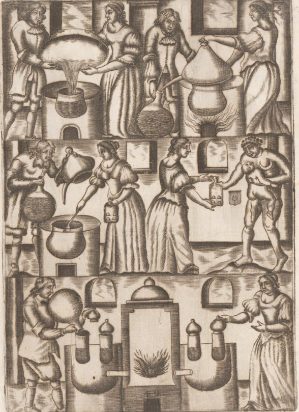
Mutus Liber, Rupellae [La
Rochelles], 1677 - V
Cette
planche
semble
faire suivre directement à l'opération
désignée
à la planche 4.
Nous
avons vu que cette opération consistait à
recueillir du
tartre
vitriolé ou de l'alkali fixe. Mais il peut s'agir aussi
d'une
allégorie
touchant à la captation de l'Esprit universel, et alors
l'opération
désignerait le salpêtre ou sel nitre. Dans la
planche 6,
les
cristaux sont mis à distiller avec le liquide [eau
distillée] dans une
bassine
[en haut à
gauche].
En haut à à droite, le feu va faire distiller le
phlegme,
que l'on recueille dans l'alambic puis dans le récipient.
L'opération
terminée, l'épouse recueille avec une cuiller le
résidu,
figuré par des cristaux en forme de triangle. A droite,
l'homme
nu, désigné par le croissant lunaire et tenant un
nourrisson
avec son bras gauche, montre que le produit désigne la
part
mercurielle.
Il faut manifestement remployer le « phlegme » qui
s'est
dégagé
dans le récipient et le mettre à chauffer dans un
bain de
sable, ce qui est désigné dans la partie
inférieure
de la planche. On peut sans peine imaginer quelle est la
matière
recueillie à la cuiller. Par contre, on ne sait trop
à
quoi
sert ce qui est contenu dans le récipient. S'agit-il de
phlegme
? S'agit-il d'acide nitrique ? Alors, ce serait la
préparation
de tartre vitriolé...
"La
cinquième
planche initie le disciple aux opérations de laboratoire.
On
y
assiste
à une suite de manipulations variées. Il est
visible
qu’il
s’agit de la coction de la liqueur récoltée dans
la
planche
précédente. Un homme et une femme la versent
ostensiblement
dans un pot mis sur le feu. Dans la figure au dessous,
l‘homme y
ajoute
un produit visqueux et tient, de l’autre main, une
substance
qu’il
n’est
pas difficile de découvrir, si l’on songe que
l’œuf
d’Hermogène
est analogue aux autres. Sur le même plan à
côté,
un personnage nu, décoré d’une demi-lune
et
accolé
à un enfant, reçoit un flacon où se
remarquent
quatre
petits triangles. Ils représentent les proportions des
éléments
mis en œuvre, à savoir un de soufre pour trois de mercure.
Le
corps
lunaire intervient dans cette opération ; il est
indiqué
par un écu
portant une lune d’argent sur champ de
gueules.
La
Lune
des philosophes n’est pas
toujours
l’argent, encore que ce métal convienne au travail
à un
certain
moment. Pour dérouter le profane, les Adeptes donnent ce
nom
au mercure
et à son sel,
dont la préparation présente
les plus grandes difficultés. Pour que le mercure soit
propre
aux
opérations, il est indispensable de l’animer.
Cette
animation
se fait au moyen du soufre
préparé à cet
effet.
On trouvera dans Philalèthe
des
indications
pratiques qui, néanmoins, ne doivent pas être
toujours
suivies
mot à mot. II est exact, cependant, qu’il faille purger le
mercure
de ses éléments
hétérogènes en
séparant
le pur de l’impur, le subtil de l’épais. On voit,
dans cette
planche,
la femme qui se dispose à écumer le compost.
C’est
une
présentation
changée du travail, mais exacte au fond. Dans
l’Œuvre, c’est
l’élément
féminin, en effet, qui opère la
sélection par ses
vertus constitutives; mais l’artiste doit y prêter la main
et
seconder
la nature avec prudence.
Les
autres figures
représentent
les
digestions et distillations. Nous n’apprendrons rien de
nouveau
au
lecteur
sensé en lui disant qu’un homme bourré de
formules
chimiques
et aptes à résoudre sur le papier tous les
problèmes
d’école n’a aucun titre à se dire chimiste.
II faut donc
que la pratique accompagne la théorie, l’une est la
conséquence
de l’autre. La pratique du laboratoire seule donne la
maîtrise,
car
qu’est-ce que la pratique, sinon le contrôle de la
théorie.
La rigueur de la première redresse les errements de la
seconde.
Le disciple devra donc s’efforcer de réaliser tous ses
concepts." [Hypotypose,
Pierre Dujols]
Nous ne
sommes pas
d'accord avec ce qu'écrit Dujols. Certes, la vignette
supérieure
de la planche semble montrer que c'est le flos coeli,
recueilli
à
la planche 4,
qui
fait l'objet
des opérations de laboratoire. Mais nous ne voyons pas que
l'Artiste
ajoute un produit visqueux sur la vignette centrale. Il
enlève
tout
simplement le chapiteau de sa main gauche tandis que sa
main droite
tient
le récipient qui contient, soit du phlegme, soit un acide.
La
femme
recueille le produit qui s'est accumulé à la base
de la
bassine
et qui correspond à un sel fixe et c'est ce même
produit
qui
est symbolisé par l'homme nu avec l'emblème de la
Lune.
Il
s'agit d'une matière qui a rapport avec le Mercure commun
ou
avec
le Sel, ce qui paraît plus douteux. Quant à la
vignette
inférieure,
il ne s'agit pas d'une distillation mais d'un chauffage au
bain de
sable,
alimenté par le fourneau et c'est une coupe du dispositif
que
nous
voyons. Le mystère réside dans le contenu du
récipient.
planche
6
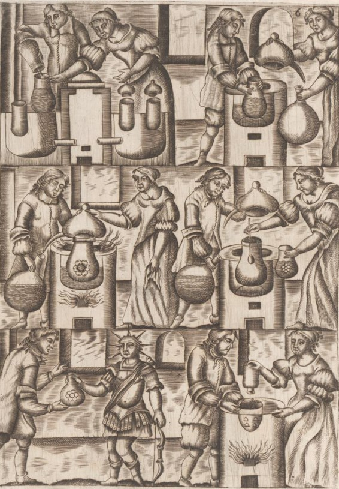
Mutus Liber, Rupellae [La
Rochelles], 1677 - VI
Nous
voyons
la suite
des travaux exposés sur la planche
5.
Nous étions restés sur le mystérieux
contenu du récipient, qu'on met dans des vases au bain de
sable.
Ici, la vignette supérieure montre l'Artiste en train de
recueillir
le contenu de ces vases dans un ballon [on
dirait presque un dessin animé car on voit les bouchons
de
ces
vases
en l'air, à droite, ce qui exprime l'idée qu'ils
ont
été
vidés]. Le ballon
est mis au
feu de réverbère et un chapiteau avec son
récipient
sont adaptés et lutés. L'opération va
consister
à
chauffer la substance, le résultat étant
figuré
par
une fleur. Le résidu obtenu après calcination est
recueilli
et figuré par une fleur de marguerite. Cette fois-ci,
c'est
un
personnage
ayant les attributs du Soleil, donc du Soufre, à qui est
donné
symboliquement le vase contenant la substance figurée par
cette
marguerite. On démarre ensuite une autre
opération,
figurée
par la partie droite de la vignette du bas, où l'on met au
four
à réverbère l'autre substance, tenant
du Mercure,
vue à la planche 5.
"La
planche
six est la continuation de la cinquième. On remarquera que
les
opérations
y sont toujours effectuées par un homme et par une femme
symbolisant
les deux natures. L’action extérieure de ces agents
indique le
travail
intérieur des corps réagissant l’un sur
l’autre. Dans la
première figure, l’agent féminin joue un
rôle
passif,
et l’agent masculin un rôle actif. Celui-ci est le soufre;
celle-là, la lune.
On
désirera savoir, sans
doute,
quel
est ce soufre mystérieux dont parlent toujours les
philosophes,
sans autrement le désigner. C’est le soufre
des métaux.
Le secret de l’art consiste à l’extraire des corps
mâles
pour
l’unir aux corps femelles, ce qui suppose leur
décomposition
préalable.
La science actuelle semble considérer ce fait comme une
impossibilité
absolue. De grands chimistes du XVIIIe
siècle ont
démontré,
dans des communications adressées aux corps
académiques,
que l’opération est réalisable et qu’ils
l’avaient
réalisée.
[Dujols fait
peut-être
référence à Geoffroy L'Ainé
qui
prétendait
préparer du fer à partir d'argile et de lin ;
Nicolas
Lemery
démontra que le fer obtenu par Geoffroy provenait bien
sûr
de l'argile ; Geoffroy se rendit aux arguments de
Lemery, cf. infra
et Fontenay]
Nous avons en mains un magnifique soufre d’argent obtenu
par un
moyen
analogue
et qui se rapproche beaucoup de la teinture des Sages.
Mais, pour
arriver
à ce résultat, il faut une certaine pratique et
une
connaissance
approfondie du règne minéral.
Défiez-vous
des
auteurs
qui
parlent
de broyages, de décantations, de séparations
obtenues par
ce qu’ils appellent des " tours de mains ". L’action
manuelle ne
concourt
aux résultats qu’à la façon d’une
cuisinière
préparant son pot-au-feu. Lorsque les ingrédients
sont
dans
la marmite, l’eau cuit le compost, portée à la
température
requise par le feu extérieur. La coction achevée,
il
n’y
a plus qu’à extraire les produits et à les
employer
suivant
la formule. Mais toute intervention intempestive est
préjudiciable
et nuit à l’Œuvre.
Nous
devons signaler tout
particulièrement
la figure représentant la rose
hermétique obtenue
par les sublimations précédentes. Il y aurait ici
beaucoup
de choses à dire. Tous les traités d’alchimie ne
sont que
des " Romans de la Rose
", au propre comme au figuré. Le
premier soin de l’artiste consiste à y faire la part du
vrai et
du faux. Celui-ci domine et constitue la littérature
hermétique.
Qu’est-ce
que
la Rosée ?
C’est
la fleur
de l’arbre philosophique qui présage le fruit. Or,
l’arbre des
philosophes
est le mercure végétal ; la Rose est donc l’efflorescence
de
la sève métallique
mise en mouvement par le feu
extérieur,
qui excite le feu interne des corps. Mais les Sages
parlent de deux
feux
différents dévolus à cette fonction.
Le disciple
doit
donc penser qu’il existe, en dehors du feu naturel, un
autre
agent
ainsi
dénommé, et ce
feu secret est le ferment des
métaux,
qui joue dans le travail un rôle analogue à celui
du
levain
dans la pâte du boulanger. Mais que l’adjonction de ce
nouvel
élément
ne trouble pas la pensée du fils de science. De
même que
le
levain est fait de farine et d’eau acidifiés, le ferment
des
métaux
est un produit du soufre et du mercure, amenés par l’art
à
l’état convenable. Les proportions sont analogues
à
celles
employées pour la panification. [cf.
Chevreul - Résumé
de
l'Histoire
de la Matière - sur
l'analogie du levain et de la
préparation
de l'or alchimique]
Notre
planche nous montre une seconde
rose
plus petite, et une troisième encore moindre. Y aurait-il
plusieurs
roses ? Oui et non. Il y a deux roses en principe, suivant
qu’on
opère
pour l’or ou l’argent; et, au fond, il n’y en a
qu’une. Cependant, le
Mutus
Liber en présente trois, bien
déterminées.
C’est
exact;
mais elles sont filles l’une de l’autre,
c’est-à-dire à
trois
puissances différentes. Dans le régime de la
coction,
Philalèthe
enseigne qu’on obtient d’abord la rose blanche,
qu’il nomme la
lune;
la rose jaune
ou safran; la rose rouge
ou parfaite.
Nous
n’employons pas la terminologie exacte de cet auteur; mais
nous
parlons
assez clairement pour nous bien faire entendre. [il
s'agit là des régimes de planètes : la
rose
blanche
correspond au régime de la Lune et au Soufre blanc ;
le
safran
est
la couleur de l'Aurora
consurgens
; la rose rouge correspond au
régime
de Mars, lié au Soufre rouge...]
L’obtention
des
roses est
subordonnée
à la putréfaction.
La putréfaction donne
lieu
à une succession de couleurs. La première est la
noire;
elle
est la clef des autres. Pas de noir, point de putréfaction
;
et
sans putréfaction, nulle transformation. Si semblable
accident
venait
à se produire, c’est que les matériaux mis en
contact
n’ont
pas les qualités voulues ou sont mal
préparés.
Voir Philalèthe
pour le reste et n’en prendre que la fin." [Hypotypose,
Pierre Dujols]
Le Soufre
des
métaux
les chimistes croyaient encore le tenir au XVIIIe
siècle,
ainsi qu'en témoignent des articles parus dans les Mémoires
de l'Académie royale des sciences. Nous avons sous les
yeux
deux
articles : Du
Souphre
Principe,
par M. Homberg [22
avril 1705] dans
lequel l'auteur
croit
que le Soufre n'est autre que la lumière et Sur
la production artificielle du Fer, et sur la
composition des autres
métaux,
par M. Geoffroy
[11
mai 1707] où
l'auteur croit
que le Soufre des métaux n'est autre que la partie qui
s'échappe
du métal quand on le calcine. Il semble que Geoffroy ait
confondu
la teinture des métaux avec un métal dans un
grand
état
de division. Mais jamais, on n'a pu obtenir le « Soufre
» des métaux, comme croit l'entendre Magophon.
Voici
l'article Soufre
que commente ainsi Pernety :
"Soufre.
Nom que l'on donne en général à toutes
les
matières
inflammables dont on se sert dans la Chymie, telles
que sont le soufre
commun, les bitumes, les huiles, etc. Quelquefois les
Chimistes donnent
ce même nom à des matières nullement
inflammables,
mais seulement colorées sans aucune autre raison,
particulièrement
dans les matières minérales, en sorte que l'on
voit le
mot
de soufre attribué à bien des matières
même
très opposées entre elles. On donne le nom de
soufre en
particulier
au soufre commun, qui paraît composé de quatre
différentes
matières ; savoir, de terre, de sel, d'une
matière
purement
grasse ou inflammable, et d'un peu de métal. Les trois
premières
matières y sont à peu près en portions
égales,
et font presque tout le corps du soufre commun, quand
on le suppose
épuré
par la sublimation de sa terre superflue; et c'est
alors de la fleur de
soufre. Mém. de
l'Acad. de 1703, p. 32.
Les
Chymistes admettent trois sortes de soufre, qui ne
sont que le
même,
modifié différemment; le soufre volatil ou
mercuriel, le
soufre moyen, et le soufre fixe. Voyez MATIERE , SEL .
SOUFRE
. (Sc. herm.} Lorsque les Philosophes parlent de leur
soufre, il ne
faut
pas s'imaginer qu'ils parlent du soufre commun dont on
fait la poudre
à
canon et les allumettes, ni aucun autre soufre
séparé et
distinct de leur mercure. Quoi qu'ils disent qu'il
faut
prendre un soufre, un sel et un mercure, ces trois
choses se trouvent
à
la vérité dans leur matière, mais
elles n'y sont
pas
sensiblement distinctes. Leur soufre est artificiel,
leur mercure l'est
aussi, et l'art manifeste leur sel. Mais tout cela ne
fait qu'une chose
qui les renferme toutes trois. Philalèthe.
Lorsqu'ils
disent en général notre soufre, on doit les
entendre de
leur
pierre au blanc ou au rouge ; dans ce cas ils les
distinguent par la
couleur.
Leur rouge est leur minière du feu céleste, dit d'Espagnet,
leur ferment, le principe actif de l'œuvre, dont le
mercure est
le
principe
passif. Ce n'est pas que le mercure n'agisse aussi,
puisqu'il a un feu
interne, et que partout où il y a feu, il y a action;
mais
on le
compare à la femelle, qui dans la
génération est
censée
passive.
Les
Philosophes ont donné à ce soufre une
infinité de
noms, qui conviennent tous à ce qui est mâle, ou
fait
l'office
de mâle dans la génération naturelle.
C'est leur
or,
qui n'est point actuellement or, mais qui l'est en
puissance.
SOUFRE
BLANC . Corps composé de la pure essence de
métaux, que
quelques-uns
appellent un argent-vif conduit de puissance en acte,
et extrait, par
les
opérations du magistère, de tous les principes de
la
Médecine
du premier ordre. Philalèthe.
SOUFRE
ROUGE . Plusieurs Chymistes ont travaillé sur le
soufre
naturel,
et de mine, appelé sulphur nativum par les Latins,
comme
étant
la vraie matière des Philosophes ; mais quand ceux-ci
lui
ont
donné
ce nom, c'est dans le temps qu'elle est parfaite au
rouge
ou au blanc. Elle est alors proprement le soufre
philosophique; car
Raymond Lulle
entre autres nous assure que le soufre des Sages n'est
point
distingué
sensiblement de leur mercure, et leur mercure ne se
fait point avec le
soufre commun, naturel ou factice.
SOUFRE
VIF . (Sc. herm.) C'est le même que soufre rouge.
Rullandus
donne
le nom de soufre rouge à l'arsenic.
SOUFRE
DE VITRIOL . C'est l'âme de ce minéral.
SOUFRE
NOIR . Antimoine. Planiscampi.
SOUFRE
ONCTUEUX . Soufre des Philosophes.
SOUFRE
NARCOTIQUE du vitriol. Extrait du vitriol dont on
trouve le
procédé
dans la Chymie
de Béguin. Paracelse
regardait
ce soufre comme un excellent anodin, et le
préférait
à
tous les autres.
SOUFRE
AMBROSIEN est un soufre naturel rouge, beaucoup
transparent, et
ressemblant
au grenat, mais formé en gros morceaux.
SOUFRE
VERT . Huile de cinabre. Dict. Herm.
SOUFRE
INCOMBUSTIBLE . C'est celui des Sages.
SOUFRE
VRAI DES PHILOSOPHES . C'est le grain fixe de la
matière, le
véritable
agent interne, qui agit, digère, cuit sa propre
matière
mercurielle,
dans lequel il se trouve renfermé.
SOUFRE
ZARNET . Soufre philosophique.
SOUFRE
OCCULTE . Le même que celui de l'article
précédent.
SOUFRE
DE NATURE . C'est encore le même. Quelques-uns
cependant
donnent
ce nom à la matière parvenue à la
couleur blanche.
L'Auteur du Dictionnaire Hermétique pourrait
s'être
trompé,
lorsqu'il dit que le soufre de nature est le menstrue
essentiel fait
avec
le mercure et l'esprit de vin sept fois rectifié, qui
dissout la
chaux du soleil et de la lune, ou du moins qui en tire
la teinture,
laquelle
par des opérations faciles et occultes, on redonne
à
l'or.
Le soufre universel est, selon le même Auteur, la
lumière
[Pernety cite l'article
de Homberg
évoqué
supra] de laquelle
procèdent
tous
les
soufres particuliers."
[Dictionnaire
mytho-hermétique]
planche
7
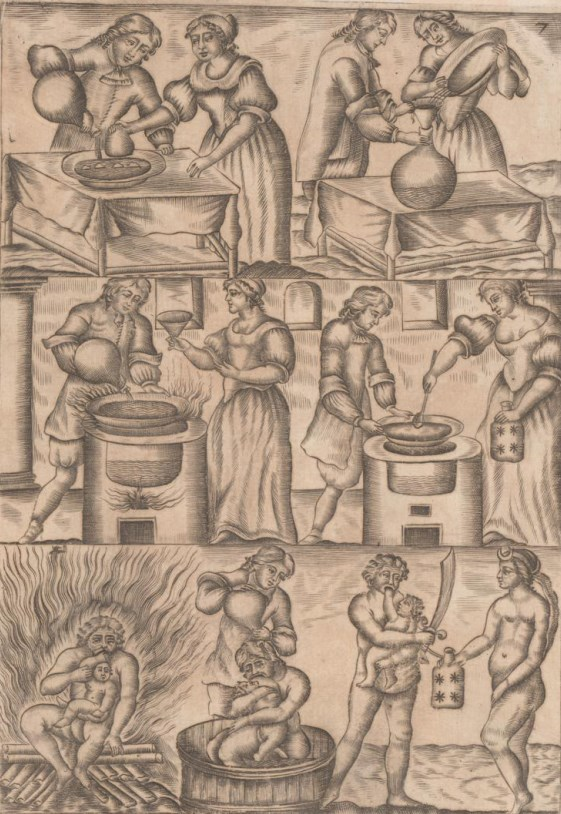
Mutus Liber, Rupellae [La
Rochelles], 1677 - VII
Cette
planche
semble
se rapporter à la fabrication de l'une des parties du Mercure
philosophique.
Les quatre tableaux du haut se
réfèrent
aux opérations « réelles »,
les trois
scènes
du bas représentent les allégories
correspondantes.
L'allégorie
nous montre à gauche un personnage que l'on pense
être
Saturne,
s'apprêtant à dévorer l'un de ses
enfants. La
scène
se fait sous un feu soutenu ou du moins une chaleur
certaine semble
émaner
du personnage - serait-ce une indication sur la chaux vive
? Au centre,
le bain de Saturne - s'agit-il du « blanchiment »
du laiton
? À droite, le produit obtenu ; notons que Saturne est à
présent
armé d'un glaive... En haut, dans les quatre tableaux,
nous
observons
d'abord que l'on remplit une bassine de liquide. Ce
liquide est ensuite
mis au feu et des cristaux paraissent être
récupérés
à la cuiller et mis dans un flacon contenant des *.
"La
septième planche est
très
importante, mais elle est difficile à comprendre. Nous
retrouvons
ici les quatre petits triangles qui indiquent les rapports
déjà
expliqués; mais nous arrivons à une
opération
délicate,
car c’est ici que Saturne
dévore son enfant.
On
connaît la fable de
Saturne et
de
Jupiter. Qu’est-ce que Saturne et qu’est-ce que Jupiter ?
La
nomenclature
chimique, qu’on trouve chez les auteurs, vous fera
connaître
à
quels métaux conviennent ces deux noms. Mais nous ferons
remarquer,
en toute conscience, que le Saturne et le Jupiter des
Sages ne sont pas
les mêmes que ceux des chimistes profanes. Qu’on y prenne
garde,
et que l’on n’aille pas faire de la soudure de plombier ou
de
ferblantier.
Nous ne travaillons pas sur des produits bruts, et encore
qu’ils
soient
tous empruntés à la famille des
métaux, ils ne
sont
propres à l’œuvre qu’après avoir subi
une
préparation
qui les rend " philosophiques
".
Si
l’on adopte la voie humide, on
procédera
selon l’art en mettant en contact nos deux
éléments, de
telle
sorte que l’un absorbe l’autre, ce qui donnera un produit
nouveau qui
tiendra
des deux, sans qu’il soit possible désormais d’en
faire
l’analyse
de manière chimique. La voie sèche suppose,
évidemment,
une combinaison obtenue par un procédé
adapté
à
la nature des corps. Mais qu’on ne mélange pas les deux
voies:
les
liquides s’unissent aux liquides, et les solides, aux
solides. [Fulcanelli
reconnaît pourtant à la voie sèche deux
phases : la
phase humide qui correspond à la dissolution et va
jusqu'à
la fermentation du Rebis ; la phase d'assation qui est
le
début
de la coagulation de l'eau mercurielle, cf. Myst.,
p. 160 :
« la
seconde période [...] commence alors, par un second tour
de
roue,
se parfait et s'achève lorsque le contenu de l'oeuf [...]
apparaît
granuleux ou pulvérulent, en forme de cristaux, de sablon
ou
de
cendre. »
Il
y aurait là
bien à
dire puisque Fulcanelli nomme à la fois le lien du
Mercure,
cite
la teinture et caractérise l'aspect de la Pierre]
Dans
cette opération, le
feu
joue un
certain rôle. Une des figures représente Saturne
croquant
son fils au milieu d’un brasier. II faut prêter ici la
plus
grande
attention aux discours des philosophes. Celui-ci assure
que le feu
élémentaire
est le destructeur des corps, et que leur fusion en
volatilise
l’âme;
celui-là déclare que les Sages brûlent
avec
l’eau,
mais prohibent en même temps les liqueurs corrosives,
telles
que
les acides.
Le
disciple se trouve donc
enfermé dans
un cercle vicieux, dont il lui est fort difficile de
sortir
à
son
avantage. Il faut prendre la moyenne des deux doctrines
pour les
accorder
ensemble. Il est une eau qui renferme le feu du Ciel;
c’est la
rosée
ou flos coeli,
que nous avons vu étreindre dans une
planche
précédente. On sait que la rosée
renferme un
principe
acide qui brûle à la lettre. Les objets soumis
à
son
action ne tardent pas à tomber en poussière. Nous
devons
faire observer, cependant, que la rosée philosophale
diffère,
en réalité, de la rosée commune. Elle
est,
néanmoins,
formée des véritables pleurs de l’Aurore unis
à
une substance
terrestre, qui est le sujet de
l’Œuvre. [on se
reportera ici
à Senior, De Chemia qui indique que : « Le
soleil est la clé de toute porte... »,
voit
Bibliotheca Chemica curiosa, II, pp. 216-235]
Lorsque
Saturne
a accompli son
horrible
festin,
on doit, dit Philalèthe, faire passer sur lui toutes les
eaux du
déluge, non pas de manière à le noyer,
mais
à
corriger les effets d’une digestion laborieuse en
éliminant les
toxines résultant de la fermentation. C’est ce qu’on
appelle " blanchir
le nègre ".
L’opération est rude, mais
efficace, si
l’on
y persévère, car il faut s’y reprendre
à
plusieurs
fois. Ce lavage à grande eau dépouille le corps
de ses
impuretés,
en corrige les humeurs et le rend dispos pour les
opérations
subséquentes.
On le distille alors hermétiquement afin de n’en rien
perdre; on
en précipite le sel qui se présente en petits
cristaux
très
hygrométriques, et qu’on doit soustraire aussitôt
aux
influences
de l’air. C’est pourquoi on l’enferme, comme le
montre une autre
figure,
dans un flacon bouché à l’émeri et
qu’on tiendra,
en réserve." [Hypotypose,
Pierre Dujols]
De ce
commentaire,
on
retiendra ces cristaux qu'il faut tenir à l'abri de l'air.
Voyez
ce qu'il faut en penser aux sections salpêtre
et tartre
vitriolé. Voyez
également
la section laboratoire
1 où l'on
discute
de la voie des carbonates. On ne sait au juste, ici ce
qu'il faut
entendre
par « blanchir le nègre », car il ne
peut s'agir,
dans
cette phase de l'oeuvre, du laiton, auquel cas nous
serions au 3ème
oeuvre. Pourtant nous sommes au 2ème
oeuvre, au stade
de la préparation du Mercure commun. Dans cette planche,
le
couple
alchimique utilise le sel de Mercure dans une large
bassine, qu'il faut
soumettre à la calcination. Le produit de ce sel,
représenté
par des étoiles, est ensuite donné symboliquement
à
une femme qui porte à son front l'empreinte du croissant
lunaire.
Il s'agit donc d'un sel servant à préparer le
Mercure.
Revenons
un instant sur le commentaire de Pierre Dujols et admirons
à
la
fois le ton d'humour combiné à celui de
l'érudition,
où l'auteur fait preuve de virtuosité
cabalistique.
Voyons,
par exemple, ce flacon bouché à
l'émeri, qu'il
faut
tenir en réserve. Cyliani, dans son Hermès
Dévoilé,
parle aussi d'un tel flacon,
formé
d'ailleurs du meilleur marbre de Carrare. E. Canseliet
écrit
qu'il
faut, à une certaine époque de l'oeuvre, se
servir du
bouton
de retour issu de la vitreuse provision. On est en droit
de se demander
si les Adeptes ne parlent pas, ici, de la même chose.
C'est-à-dire
d'une substance cachée [apoqetoV
: mis en réserve, mystérieux]
ou qui s'est déposée [apoqesiV
: action de déposer].
planche
8
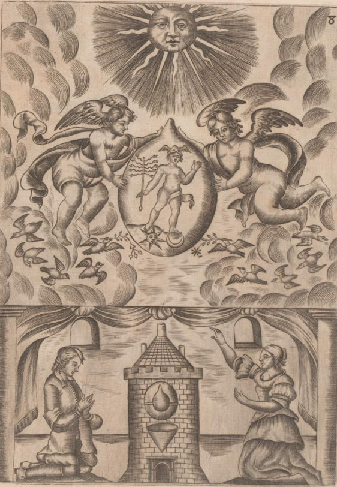
Mutus Liber, Rupellae [La
Rochelles], 1677 - VIII
Cette
planche
se
rapproche de la n°
2
mais nous sommes ici à un stade ultérieur. Dans
le
matras,
nous voyons le Mercure, désormais animé. Des colombes
volent aux pieds des anges ; le soleil et la lune sont aux
pieds de
Mercure.
Dans cette image est symbolisée la dissolution radicale
des
composés
que nous avons maintes fois envisagée (1, 2, 3, 4).
"La
huitième planche nous
fait
voir
le mercure des philosophes réalisé, tandis que la planche
deux n’en présentait
que les éléments
constitutifs.
Il est le produit du Soleil
et de la Lune
qui sont
à
ses pieds. Les aigles
volent autour de lui parce qu’on
lui fait
subir dans le matras les sublimations nécessaires, ce qui
est
indiqué
au bas de la planche par l’athanor ou l’on a mis
l’œuf à incuber.
Le
mercure des philosophes, animé
et sublimé selon les
règles, doit circuler longtemps
dans le vase avant de produire les heureux effets qu’on
attend de
lui.
Mais il y a plusieurs mercures dans l’œuvre, et
Philalèthe en
signale
un second, tout particulièrement, sous le nom de lait
de vierge. Celui-ci
diffère du premier en quelque chose,
bien
qu’ils soient tous les deux de même essence.
Philalèthe, Ripley
et d’autres vont jusqu’à dire qu’il
s’agit du mercure commun. Basile
Valentin, au contraire, le
bannit avec malédiction. Certains
ont cru que le lait de vierge pouvait être obtenu par une
combinaison
des deux. Nous connaissons un artiste qui a
réalisé ce
tour
de force pour le plaisir de vaincre la difficulté, sans
prétendre
en tirer d’autre conséquence. Nous sommes donc en mesure
de
certifier
l’opération comme réalisable, ce qui
n’implique pas que
nous
adhérions à son emploi dans la pratique. II faut
accueillir
avec la plus grande réserve tous les noms bizarres
imposés
par les philosophes à certains ingrédients. Ces
différentes
épithètes ne servent qu’à
déguiser la
suite
des opérations. De telle sorte que le même
produit,
suivant
qu’il est ou n’est pas exalté, porte tel nom ou tel
autre. Et il
est vrai, après tout, que l’alcool, bien qu’extrait
du vin, en
diffère
et par le nom, et par l’aspect, et par la puissance, et
par les
effets,
de même que le vin diffère du raisin, d’ou il est
tiré..." [Hypotypose,
Pierre Dujols]
Dujols
aborde
ici
un important point de science : les deux Mercure. Mais
sans donner
d'explications
outre mesure. Nous sommes en mesure de pouvoir afirmer que
le Mercure
commun
ou 1er
Mercure correspond à l'eau-vive prime de
Limojon
[1, 2, 3].
C'est le véritable Lion vert de Ripley, le Mercure non
encore
animé,
avant le stade du bain des astres. Ramon Lull l'appelle,
dans sa Clavicule
le Mercure vulgaire - ce qui égare le sentiment vers le
vif-argent
vulgaire -. L'autre Mercure est celui dont les alchimistes
ont le plus
parlé : le second Mercure, appelé aussi double
Mercure ou
enfin, le Mercure philosophique. Ils l'appellent aussi le
compost [mélange
Mercure
commun et Rebis], le
Rebis,
chose double, étant l'homme double igné de Basile
Valentin,
habituellement désigné par les alchimistes comme
une
substance
hermaphrodite [voilée
par quantités d'allégories : Apollon et Diane ;
les deux
chiens du Corascène et d'Arménie ; les gnomes de
la
cheminée
alchimique ; le patient et l'agent, Gabricius et Béia,
etc.]
planche
9
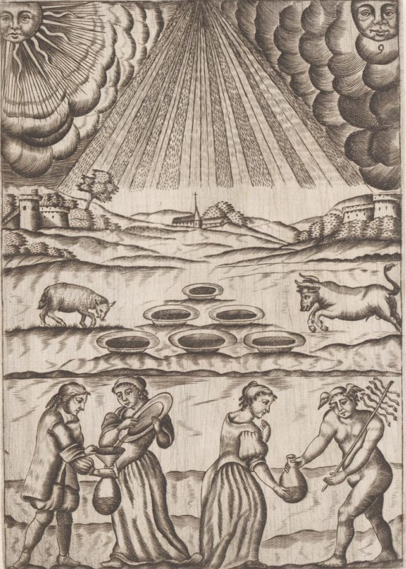
Mutus Liber, Rupellae [La
Rochelles], 1677 - IX
Variation
sur
le
thème de la rosée de mai ; on observera que des
bassines
se sont substituées aux toiles. La scène du bas
montre
à
gauche le couple alchimique recueillant la rosée de mai et
à
droite l'allégorie correspondante : Mercure. On voit dans
le
lointain
des champs labourés, indice que la terre est prête
à
acceuillir le Soufre.
"La
neuvième
planche nous ramène au flos
coeli. Pourquoi ce retour,
et
à quoi bon y recourir de nouveau, puisque nous nous en
étions
approvisionnés ? Ce n’est pas que l’auteur du Mutus
Liber veuille
nous renvoyer à la campagne pour en avoir d’autre ; mais
il
était
bien obligé d’en répéter le symbole,
du
moment que
cet agent céleste doit entrer dans une nouvelle
combinaison.
Nous
voyons, dans une des figures de
cette
planche, Mercure en train d’acheter un pot de cette eau
divine
à
une paysanne. C’est donc qu’il en a besoin pour quelque
usage. Philalèthe
prescrit, effectivement, de laver le mercure à plusieurs
reprises,
de façon à lui faire perdre une partie de sa
nature huileuse. [cette étrange
opération
est décrite par plusieurs auteurs : il s'agit de
guérir
le
Roi de son hydropisie. Michel Maier y consacre l'emblème
XLVIII de l'Atalanta
fugiens]
Il décrit soigneusement cette opération, qui
s’accomplit
avec l’eau céleste portée à une
certaine
température,
modérée néanmoins, car il faut un rien
de trop de
chaleur pour que la partie ignée du flos coeli reprenne le
chemin
des Astres. Philalèthe est un grand maître, sa
parole fait
autorité et il présente le travail avec une
ingénuité
si convaincante qu’aucun soupçon de fraude ne saurait vous
effleurer.
Mais nous devons éventer ici une ruse: cet auteur a
confondu
à
dessein, dans son ouvrage, la voie sèche et la voie
humide. [Dujols
souligne ici un point de cabale absolument
fondamental, car de nombreux
alchimistes ont joué sur les deux voies pour
égarer les
impétrants
; c'est la raison pour laquelle Fulcanelli
conseille
à
l'étudiant,
avant d'entrer dans le labyrinthe de Salomon, de
se munir d'un fil
d'Ariane,
qu'il appelle Arachnè] Ce
serait
donc un tort d’appliquer à une technique ce qui convient
à
l’autre. Mais, cette remarque faite, nous reconnaissons
que
l’esprit
astral
joue un rôle permanent dans les opérations.
Et
puisque nous employons la locution
de Cyliani,
arrêtons-nous aux interprétations
invraisemblables
auxquelles
ce terme assez récent a donné lieu. Des
écrivains
d’hier ont vu dans cet esprit astral une émanation
magnétique
de l’opérateur. D’après eux, il faudrait,
pendant une
période
déterminée, subir un entraînement
physique et
moral,
pour pratiquer avec succès cette sorte de fakirisme ou de
yoga. [sans
aller jusque là, reconnaissons que la vision que Jung
avait de
l'alchimie, par la projection de la psyché qu'il y voit,
à juste titre, abonde dans cette vue]
La force du produit doit être proportionnelle à la
puissance
du fluide, de telle sorte que la poudre de projection
obtenue multiplie
à 100, 1.000 ou 10.000, etc., suivant le potentiel de
l’artiste.
Ces fantaisistes prétendent ainsi imprégner la
matière
d’esprit astral comme on charge un accumulateur
d’électricité.
Voilà ou mène l’analogie mal entendue et
appliquée
à tort et à travers. Nous ne nommerons pas ces
théoriciens
singuliers dont la sincérité est respectable;
mais nous
devions
signaler le fait pour mettre en garde le disciple
studieux, et trop
confiant,
contre les lectures hasardeuses d’auteurs sans mandat et
sans
consécration,
qui n’ont jamais produit que des livres, mais passent dès
lors
pour
des Maîtres." [Hypotypose,
Pierre Dujols]
Nous
sommes
bien
d'accord avec Dujols pour admettre la fourberie de
Philalèthe.
Fulcanelli,
d'ailleurs, nous prévient sur l'outrance des
allégories
du
mystérieux Adepte. quant au flos coeli,
voyez l'article de Pernety :
"FLEUR
DU CIEL, Flos
Coeli. C’est
une
espèce
de manne, que l’on trouve ramassée sur l’herbe au
mois de mai
particulièrement
; elle diffère de la manne, en ce que celle-ci est
douce, et
se
recueille sur les feuilles des arbres en forme de
grains; le Flos
Cœli, au contraire se trouve sur
l’herbe et n’a
presque point de
saveur.
On tire par l’art chymique une liqueur du Flos Cœli,
dont
les
propriétés
sont admirables. Quelques Chymistes se sont imagines
que
c’était
la matière dont se servent les Philosophes
Hermétiques
pour
le grand œuvre, mais mal-à-propos." [Dictionnaire]
Quant aux
propriétés
magnétiques dont il faudrait que l'Artiste soit
imprégné,
elles nous font penser à la préparation
spéciale dont Armand
Barbault [l'Or
du
millième
matin, J'ai
Lu,
1969] préconise
l'usage sans
que l'on sache au juste s'il l'entend au sens propre du
terme ou par
cabale.
Mais il convient de se méfier de Magophon comme des
autres,
et
sous
des airs méfiants et entendus, il se pourrait qu'il dise
le vrai
pour le
faux... En
tout cas, ce qu'il faut observer ici, c'est la largeur des
bassines de
la planche 9. Or, des bassines
de cette
largeur ne sont
employées
que lorsqu'on a en vue de faire cristalliser un sel, et la
préparation
du nitre relève de cette technique. Un dernier mot : sur
cette
accumulation
d'électricité dont parle Dujols, on ferait bien
de jeter
un coup d'oeil sur la cage
de Faraday de la tour Rivalland
- cf. Fontenay
- et de son aspect étrangement cristallin afin de mesurer
de
quelle
nature peut être ce mystérieux ambre
utilisé par
les
Adeptes.
planche
10

Mutus Liber, Rupellae [La
Rochelles], 1677 - X
Cette
planche
capitale
nous montre sans doute la préparation du Rebis .
Considérons
les quatre tableaux du haut, la scène du bas
étant
l'allégorie
correspondante. En haut à gauche, préparation des
deux
matières
de base : la chaux
métallique à gauche est symbolisée par
l'étoile
; à droite, la fleur [flos
= sel très blanc]
symbolise
le soufre blanc, qui est absolument pur. On notera que ces
deux
substances
ont été mises sur les deux plateaux d'une balance
- symbole de Thémis
-
dont on aperçoit le fléau couché. Cela
constitue
une
indication sur la période de l'oeuvre où
l'Artiste essaye
ses matières et espère que dame Nature veillera
à
établir les poids de façon canonique. Ces
substances sont
mises dans un matras puis le matras est scellé au feu de
lampe ;
il s'agit du sceau vitreux d'Hermès qui est
apposé au
vase
de nature. Le matras est ensuite disposé dans l'athanor.
L'allégorie
du bas semble représenter l'alliance des deux principes ;
la
présence
de l'arc peut être une indication sur Diane chasseresse,
c'est-à-dire Artémis
[lune cornée].
On distingue d'ailleurs un croissant de lune dans la
partie
supérieure,
un peu à droite, du soleil.
"La
dixième
planche représente la conjonction.
La première
figure
expose, dans les plateaux d’une balance, d’un
côté, le sel
indiqué par l’étoile, de l’autre le soufre
désigné
par une fleur qui, avec le cœur, forme sept pétales. [on
peut se demander si Dujols n'est pas envieux : les
textes sont unanimes
à considérer que la part de soufre est beaucoup
plus
faible
que celle du sel; mais sept ressortit du nombre des
métaux
connus par les Anciens. Il y a là un rapport à l'arbre
solaire] Ce
sont les
proportions
du rapport. Un homme verse sur cette fleur un liquide
enfermé
dan
un flacon. C’est le mercure.
II tient, de l’autre
main, un
autre
récipient plein d’esprit astral pour l’utiliser
selon le cas. La
femme place tous ces produits dans un matras à long col;
mais
qu’on
se rappelle ici ce que nous avons dit du rôle de la femme
dans
l’Œuvre:
les deux agents personnifiés de la sorte sont les
matières
elles-mêmes, et les divers accessoires qui les
accompagnent
déclarent
leur état d’exaltation.
À
la seconde rangée,
l’artiste
scelle
le matras au sceau
d’Hermès. Il en présente
le
col
à la flamme d’une lampe, de manière à
ramener le
verre
à un état pâteux et ductile. Il doit
l’étirer
ensuite avec précaution de manière à
l’amenuiser
au
point voulu, tout en s’assurant qu’il ne se produit aucune
capillarité
par ou pourrait s’échapper l’esprit du compost. Les
choses en
étant
là, après avoir sectionné le verre, il
en renverse
sur elle-même la partie adhérente au matras pour
en former
un épais bourrelet. Aujourd’hui, cette opération
s’exécute
très facilement au gaz, à l’aide du chalumeau.
Quelques
praticiens,
d’une habileté consommée, emploient un
procédé
automatique d’une plus grande perfection. Enfin, quel que
soit le
moyen
adopté, l’on place ensuite l’œuf dans
l’athanor et la coction
commence. [c'est
la préparation du vase de nature, autrement nommé maison
de verre ou poulet d'Hermogène]
Nous
ne
dirons rien de l’athanor.
Le
Mutus
Liber en présente la forme et les dispositions
intérieures. Philalèthe
le décrit soigneusement. Nous n’ajouterons aux dits de cet
auteur
qu’une remarque importante: la construction du fourneau
est en
partie,
allégorique, et il a beaucoup à y apprendre au
point de
vue
de la conduite du feu et du régime de l’Œuvre.
En
dernier lieu, l’Ouvrage
secret de la Philosophie d’Hermès,
attribué
à
d’Espagnet et cité avantageusement, sera utile à
suivre,
car on y trouve le Zodiaque
des
Philosophes. [voir
cap. 116-120]
La
dernière figure de
cette
planche
démontre que la conjonction est
opérée: le Soleil
et la Lune sont unis. Le travail a donné les couleurs
requises.
Elles sont ici synthétisées dans un cercle
d’abord
noir,
puis blanc et enfin jaune et rouge. Le produit obtenu
multiplie par
dix,
comme l’énoncent les chiffres." [Hypotypose,
Pierre Dujols]
Nos
premiers
commentaires
n'étaient pas satisfaisants. D'un certain
côté, ils
n'étaient pas complètement absurdes. Voici
pourquoi : la
chaux, telle que nous en parlons, n'est pas la chaux
vulgaire mais une
chaux métallique dont l'hiéroglyphe est .
Mais plutôt que la
préparation du Nitre de la sapience, c'est de la
préparation du Rebis qu'il s'agit.
L'étoile
symbolise le Sel ou corps, c'est-à-dire une terre [de
la nature du kaolin ou une terre vitrifiable].
Le Soufre rouge est indiqué de façon indirecte
par la
fleur
à sept pétales : le rapport est en effet de sept
parts de
Sel
pour une
de Soufre.
Dans un temps ultérieur, le Mercure
s'anime [on
voit l'Artiste verser le Mercure commun dans un matras à
long
col
qui contient les natures métalliques].
La voie empruntée semble ici la voie humide, sans que l'on
sache
bien ce qui pourra résulter de cette Coction, à
cause des
conditions de température, et surtout de pression, qui
règnent
dans le matras. Voyez ici le Filet
d'Ariadne
de Batsdorff... Il
est ici clairement évident qu'Apollon et Diane symbolisent
les
natures
métalliques en réincrudation.
Il faut donc voir, d'un côté de la balance, le sel
en
forme
d'étoile, obtenu à la planche
9
et de l'autre côté, la fleur, symbolisant le
Soufre, obtenu à la planche
6.
Les deux substances mises en présence sont donc une chaux
métallique
et le salpêtre des philosophes. C'est alors que
débute la
Grande coction, mais par voie humide, après que le matras
ait
été
scellé au feu de lampe.
planche
11
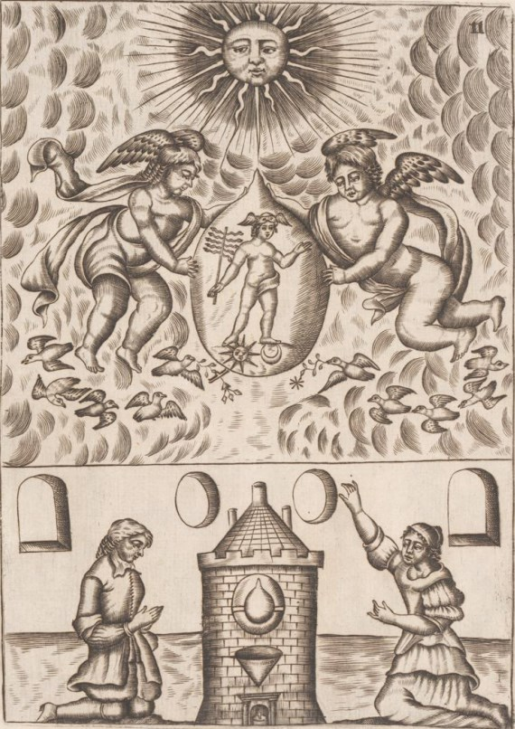
Mutus Liber, Rupellae [La
Rochelles], 1677 - XI
Cette
planche
n'est
qu'un reflet de la 8.
"La
planche
onze proclame que l’opérateur est entré dans le
régime
du Soleil
c’est-à-dire qu’il a obtenu
l’or des
philosophes,
qui n’est pas l’or vulgaire. Nous avons déjà
parlé
de cet or mystérieux. Bien que Jupiter
joue un
rôle
nominal dans le processus opératoire, il ne s’agit point
du
bisulfure
d’étain, mais du véritable " or
mussif " ou
secret.
[cf. les expériences
alchimiques d'August Strindberg
et les relations
épistolaires
entre Strindberg et Jollivet-Castelot]
Nous confesserons cependant, en toute vérité, que
ce
n’est
pas un produit de la nature, mais de l’art. Des chimistes
contemporains
qui se sont indûment pris pour compétents, ont cru
le
rencontrer
dans le vitriol commun, qu’ils se flattaient de rendre
philosophique.
Ils
ont mal entendu Basile
Valentin. Le stroma de
la
dissolution de ce sel, considéré par eux comme un
" or
naissant
", n’est qu’un mirage fugace et ne laisse, à
l’analyse, que
déception. [trait de cabale
résultant d'un jeu de mot entre jenax et joinix, le
phénix
de l'oeuvre, c'est-à-dire le sulphur en voie de
réincrudation ; par jainw, on
peut y deviner
l'aurore de l'oeuvre puisque
annonce , exactement comme
dans la fable de Latone où Diane paraît avant Apollon]
Un
auteur,
célèbre
à d’autres
titres et qui a joui, dans certains milieux, de quelque
prestige - il
nous
faut nommer Strindberg [cf.
supra.
Ajoutons qu'avant d'entreprendre ce travail, nous
ignorions que
Dujols connaissait les
expériences
de Strindberg]
pour
prévenir
contre ses égarements - s’est échoué
dans
une
technique
puérile et ridicule. Son Livre d’Or est une aberration
qu’appelait
un charitable silence. Philalèthe
et
d’autres conseillent, à qui ignore l’or artificiel,
de le
chercher
dans l’or vulgaire, en signalant toutefois ce travail
comme long
et
ardu.
Il faut, dans ce cas, lui faire subir des manipulations
difficiles et
dangereuses,
car on peut transformer ce métal en fulminate [cf. voie
humide]
et les
Mémoires
du XVIIIe
siècle rapportent plusieurs accidentes
mortels
consécutifs à cette préparation. Mais,
si le
disciple
est instruit à la bonne école, il
évitera cette
embûche
sophistique et opérera hermétiquement; il
écartera
ainsi ce péril redoutable. Les maîtres savent
atteindre le
but suivant par d’autres voies, qu’ils se gardent bien
d’indiquer, mais
qui ne sont pas introuvables, si l’on raisonne avec sa
raison
plutôt
qu’avec les livres trompeurs des Sages. " Il faut de l’or
pour faire de
l’or ", dit l’axiome classique; c’est juste, encore
qu’il y ait deux Or
différents pour mener l’Œuvre à bonne fin.
Cette planche
fait voir qu’on recommence ici toutes les opérations
précédentes.
Il faut élever le mercure à un plus haut
degré de sublimation
au moyen des aigles,
le redistiller pour lui donner une
animation
plus grande." [Hypotypose,
Pierre Dujols]
Nous
renvoyons le
lecteur à la section sur la voie
humide
où est abordée la question des fulminates d'or et
de la
préparation
des dissolutions auriques.
planche
12
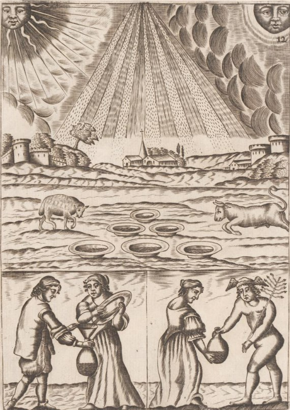
Mutus Liber, Rupellae [La
Rochelles], 1677 - XII
Là
encore,
cette planche est analogue à la 9.
"La
planche douze nous enseigne
comment
on
peut porter ce mercure à une échelle
supérieure.
Il
faut, à cette fin, recommencer
les imbibitions de flos
coeli jusqu’à ce que
le mercure, qui en est avide, en
soit
imprégné
à saturation." [Hypotypose,
Pierre Dujols]
Et comme
on
le voit,
elle n'a pas inspiré Magophon outre mesure. Pour lui, il
faut
voir
dans ces redites des réitérations d'une
même
technique,
afin de concentrer davantage le produit. Mais il est
possible que ces
images
identiques aient résulté de la confusion entre
des
éditions
différentes du ML.
ainsi,
comme
nous le dit J. van Lennep :
"La
comparaison entre les planches reproduites par Laplace
[Jean
Laplace, avec des planches en couleurs d'un soi-disant
manuscrit du
Mutus,
découvert à la bibliothèque du
Congrès,
à
Washington in Altus, Mutus
Liber (intr. et commentaires par
J.
Laplace,
Archè, Milan, 1979] et
celles de
l'édition
princeps ou de Manget, révèle des
différences
notables
au niveau de tous les détails. La couleur a
été
appliquée
grossièrement sur des planches vierges dont les
sixième
et
septième sont identiques à celles qui furent
découvertes
par Elie Charles Flamand et qui furent attribuées par
Canseliet
à l'édition de 1725. Comme il le fut
signalé pour
celle-ci, cet exemplaire de Washington comporte des
textes
ajoutés
à la série des planches : descriptions d'athanors
et
procédés
de transmutation. ils sont en outre accompagnés par
deux
gravures." [in Alchimie,
p. 233]
planche
13
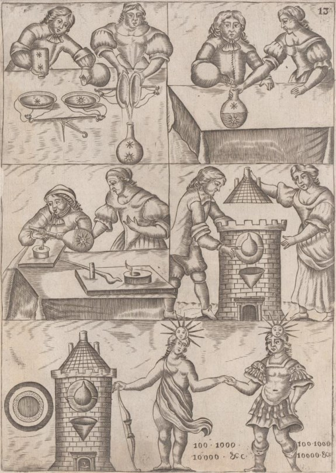
Mutus Liber, Rupellae [La
Rochelles], 1677 - XIII
Comme on
le
voit,
la différence entre la planche
10
et la planche 13,
tient aux nombres indiqués en bas, entre Apollon et Diane,
qui
témoignent
de la multiplication accordée lors des
réitérations
de la technique de concentration.
"La
treizième
planche est une répétition de la dixième,
car
dans l’œuvre, toutes les opérations se suivent et se
ressemblent;
mais cette nouvelle conjonction,
qui s’opère avec
des
matières
sublimées à l’extrême, n’est autre que
le
commencement
des multiplications. Le travail est le même que celui de
la
planche
dix et, dans la coction, on verra reparaître des couleurs.
La
durée
de celle-ci décroît à mesure que la
puissance
multiplicative
augmente, de telle manière qu’il ne faut, à la
fin,
qu’un
jour pour obtenir le résultat qui, au début,
demandait
des
moins. Les chiffres
de cette planche donnent les puissances
des transmutations obtenues par les coctions
subséquentes." [Hypotypose,
Pierre Dujols]
Ces
conjonctions
successives ont été décrites dans les planches du Rosaire des Philosophes
[à ne
pas
confondre
avec
le Rosarius minor parfois attribué à Arnaud de
Villeneuve, voir Alchemia de
1541, p. 309 ; Theatrum
Chemicum,
1659, ii, p. 466 et aussi Verae
Alchimiae
de Gratarole, 1561, i, p. 222 ].
Voyez d'abord les Douze
Portes
de Ripley pour une vue générale sur la Conjonction.
Ce n'est pas moins de quatre conjonctions dont parle le Rosaire,
chacune étant illustrée par une gravure. Jung a
consacré un ouvrage entier au Ros. Phil. :
la Pyschologie du
Transfert [trad. Albin Michel, 1980]. Il
n'entre pas dans nos vues de décrire ici par le menu les
planches du Ros.
Phil.
ni de disséquer l'ouvrage de Jung. Toutefois, il nous a
paru
intéressant de donner un aperçu des quatre stades de la
conjonction des principes.

fig.
3 du Ros. Phil.
Voici le
couple
alchimique,
le roi et la reine surmontant chacun leur symbole. Une
colombe
crée
le lien d'union entre eux, surmontée d'une
étoile. Voici
ce que pense Pernety de la colombe :
"Colombe.
D’Espagnet
et Philalethe
ont employé l’allégorie de la Colombe, pour
désigner
la partie volatile de la matiere de l’œuvre des Sages.
Le
premier a
emprunté
de Virgile (Eneid. Liv 6.) ce qu’il dit de celle de Vénus,
pour le temps de la génération du fils du Soleil
ou regne
de Vénus philosophique. Le second a dit que les
colombes de
Diane
sont les seules qui soient capables d’adoucir la
férocité
du dragon ; c’est pour le temps de la volatilisation,
où
les
parties
de la matiere sont dans un grand mouvement, qui cesse
à
mesure
que
la couleur blanche, ou la Diane Hermétique se
perfectionne.
Les
Souffleurs doivent bien faire attention à cela, s’ils
ne
veulent
pas perdre leur argent à faire des mélanges fous
d’argent
vulgaire avec d’autres matieres pour parvenir au
magistere des
Philosophes."
[Dictionnaire]
Dans cette
première
conjonction, les époux royaux conservent leurs
vêtements,
signe que les éléments sont seulement mis en
présence,
avant la dissolution. Ils tiennent en leur main des tiges
végétales,
qui expriment le phénomène d'une croissance
minérale
qui ne peut être le fait que de cristaux. Cette phase peut
être
illustrée par le texte suivant :
"Et
si vous connaissiez mon secret, vous sauriez que je
suis le grain
semé
dans la terre pure qui, en naissant, croît et se
multiplie et
apporte
du fruit au semeur." [Parabole
du soleil par le Philosophe Belin, in Ros.
Philoosphorum]
Lors de la
2ème
phase de la conjonction, les époux royaux sont mis
à nu.
On voit trois phylactères [qui
ont eux-mêmes par l'étymologie une
portée
hermétique,
voir en recherche]
sur lesquels on lit :
"Ô
Lune, donne-moi de devenir ton époux. Ô Soleil, il
est
juste
que te sois obéissante. C'est l'esprit qui vivifie."
[Ros. Phil., Francfort, 1550]
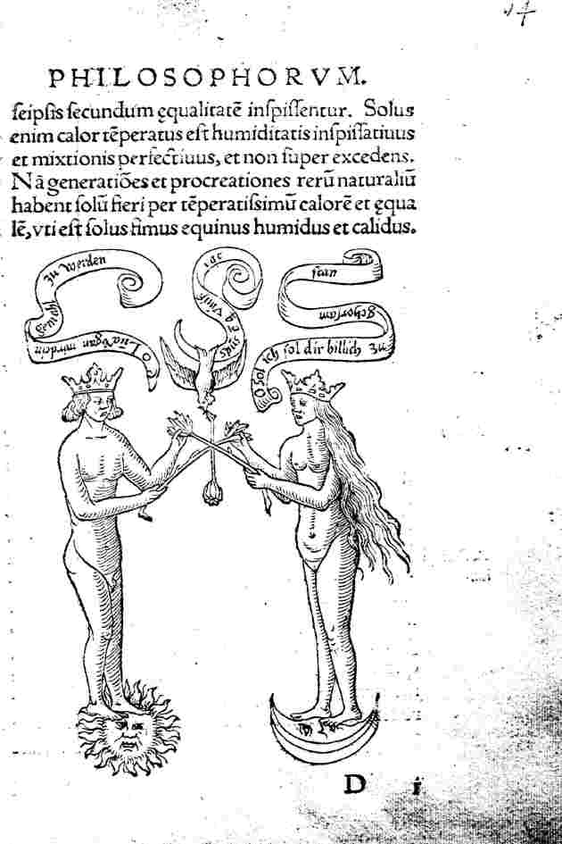
fig.
4
du Ros. Phil.
C'est
alors
la phase
de
dissolution et on peut compléter la figure de ce
commentaire
:
"C'est
pourquoi Geber dit : Ce sont des fumées subtiles, et
elles
ont
besoin
d'une cuisson tempérée pour être
épaissies
en
elles-mêmes d'une façon égale. Seule,
en effet, la
chaleur tempérée peut épaissir
l'humidité
et
parfaire le mélange, mais elle ne doit pas
dépasser la
mesure.
Car les générations et les
procréations des choses
naturelles ne se font qu'au moyen d'une chaleur
très
tempérée
et égale, comme est le fumier de cheval humide et
chaud." [Ros.
phil., Francfort, 1550]
Vient
alors
la 3ème
phase de Conjonction qui correspond au bain des astres. La
colombe sert
toujours de médiateur entre les deux Principes et on
remarque
que
les tiges végétales s'entrecroisent à
la
façon
d'un X,
sans doute pour donner raison
à
Fulcanelli, qui voit dans cet X
la
surface
du dissolvant quand il a été canoniquement
préparé.
La gravure est complétée de ce comentaire :

fig.
5
du Ros. Phil.
"Hermès
: là s'effectue la conjonction des deux corps, et elle
est
indispensable
dans notre magistère. Et si l'un des deux corps
seulement
manquait
à notre pierre, elle ne fournirait de teinture en
aucune
manière.
C'est pourquoi un philosophe dit : le vent l'a porté
danss
on
ventre.
Il est donc clair que le vent est l'air, et l'air est
la vie, et la vie
est l'âme, c'est-à-dire l'huile et l'eau."
[Ros.
phil., Francfort, 1550]
Par cette
phrase
sybilline, le pseudo-Hermès exprime simplement
l'idée de
la sublimation du soufre rouge dans le Mercure commun, par
laquelle il
devient le Mercure animé ou Mercure philosophique.
L'âme
est
ici le symbole du soufre sublimé. Vient alors la 4ème
phase de conjonction qui est le coït proprement dit : il
correspond
à l'accrétion du soufre rouge à la
toyson d'or ou
résine de l'or. Une légende commente ainsi cette
scène
:
"Ô
lune, mon étreinte et mon suave amour - Te rendent,
comme
moi,
forte
et belle à ton tour. - Ô soleil, lumineux
par-dessus tous
les êtres. - Je te manque pourtant, comme la poule au
coq son
maître."

fig.
6
du Ros. Phil.
que l'on
peut
compléter
de ce dernier commentaire :
"Arislée
dans la vision. Unis donc ton fils Gabricus, qui t'est
plus cher que
tous
tes autres fils, avec sa soeur Beya qui est une enfant
radieuse, douce
et tendre. Gabricus est mâle et Beya est femme, et
elle lui
donne
tout ce qui vient d'elle [...] Car l'union de Gabricus
avec Beya a
provoqué
la mort sur le champ. Beya monta en effet sur
Gabricus, l'enferma dans
son ventre, si bien que l'on ne put rien voir de lui.
Et elle
étreignit
Gabricus avec un amour si grand qu'elle le conçut tout
entier
dans
sa nature et le divisa en parties indivisibles. [...]
C'est pourquoi Marie,
soeur de Moïse, dit : Unis la gomme
à
la gomme en un vrai mariage, et transforme-les en une
sorte d'eau
brûlante."
[Ros.
phil., Francfort, 1550]
On remarquera que les
textes de la Turba et
du Ros. Phil.
sont
congénères.
planche
14

Mutus Liber, Rupellae [La
Rochelles], 1677 - XIV
Quatre
tableaux sont
représentés ; le tableau supérieur
montre trois
tours
qui peuvent symboliser les trois oeuvres traditionnelles [noir,
blanc et rouge] ou
la même
réitération
d'une technique particulière. Il est tout à fait possible
aussi que les tours symbolisent les signes du zodiaque qui
sont
expressément nommés au panneau inférieur [tornus, faire le tour, la
circonférence] en forme de trinité  . Le second tableau
montre le
travail
d'une fileuse ; nous connaissons l'importance du
symbolisme de la
fileuse
ou de la pelote ; au milieu du tableau, un tamis. Les
chiffres VI - II
- X sont énigmatiques. Si nous établisssons une
correspondance
avec les signes du zodiaque, [cf. zodiaque
alchimique]
nous avons : Vierge
- Taureau - Capricorne
; avec les mois : Cancer
- Poissons - Scorpion
; avec les mois correspondant au
début
traditionnel de l'oeuvre (mars-avril) : Lion -
Bélier
- Sagittaire
: nous obtenons les équivalents
alchimiques
suivants : le Lion est le lieu de la dissolution
correspondant au Lion
Vert de Ripley mais c'est sans doute le Lion rouge qu'il
faut
considérer.
Le Bélier est le lieu d'exaltation du Soleil, celui
où se
tient le bélier Chrysomelle ou encore de la Toyson
d'or
ou Christophore, qui porte en son ventre
l'Acier
magique. Enfin, le Sagittaire est le lieu de la
réincrudation.
Ces
trois signes nous indiquent que tout ici doit être fait,
en
sorte
que l'or simplement enté, c'est-à-dire l'or
mussif
hermétique,
devienne si l'on nous suit bien, le véritable or
alchimique,
celui
qui correspond aux belles pousses de blé, que l'on peut
moissoner
aux époques propices. [le
triangle de Feu se retrouve dans une aquarelle du Codex Vossianus,
annexé
à une version de l'Aurora consurgens]. Il s'agit
donc, comme on voit, du triangle de
zodiacal.
. Le second tableau
montre le
travail
d'une fileuse ; nous connaissons l'importance du
symbolisme de la
fileuse
ou de la pelote ; au milieu du tableau, un tamis. Les
chiffres VI - II
- X sont énigmatiques. Si nous établisssons une
correspondance
avec les signes du zodiaque, [cf. zodiaque
alchimique]
nous avons : Vierge
- Taureau - Capricorne
; avec les mois : Cancer
- Poissons - Scorpion
; avec les mois correspondant au
début
traditionnel de l'oeuvre (mars-avril) : Lion -
Bélier
- Sagittaire
: nous obtenons les équivalents
alchimiques
suivants : le Lion est le lieu de la dissolution
correspondant au Lion
Vert de Ripley mais c'est sans doute le Lion rouge qu'il
faut
considérer.
Le Bélier est le lieu d'exaltation du Soleil, celui
où se
tient le bélier Chrysomelle ou encore de la Toyson
d'or
ou Christophore, qui porte en son ventre
l'Acier
magique. Enfin, le Sagittaire est le lieu de la
réincrudation.
Ces
trois signes nous indiquent que tout ici doit être fait,
en
sorte
que l'or simplement enté, c'est-à-dire l'or
mussif
hermétique,
devienne si l'on nous suit bien, le véritable or
alchimique,
celui
qui correspond aux belles pousses de blé, que l'on peut
moissoner
aux époques propices. [le
triangle de Feu se retrouve dans une aquarelle du Codex Vossianus,
annexé
à une version de l'Aurora consurgens]. Il s'agit
donc, comme on voit, du triangle de
zodiacal.
Le
troisième
tableau nous donne à voir, à gauche, le principe
volatil,
correspondant à la Lune [Mercure],
au centre, la balance, symbole de Thémis et du poids de
nature,
un mortier, un pilon et une spatule ou une cuiller de fer
;
à
droite,
le principe fixe, correspondant au Soleil [Soufre].
Le quatrième tableau nous montre un récipient
plus grand
pour contenir le Mercure que pour contenir le Soufre, ce
qui est
conforme
aux données que nous avons.
"La
quatorzième
planche est principalement consacrée à
l’instrumentation.
On y voit le matras scellé hermétiquement avec
son
bourrelet,
tel que nous l’avons décrit; le mortier et le pilon pour
les
broyages;
la cuillère à écrémer; les
balances pour
déterminer
les justes poids; le fourneau des premières
opérations
avant
l’emploi de l’athanor.
Nous
rappelons
qu’il faut
entendre les
broyages,
la décantation, l´écrémage
et tout le reste
d’une manière philosophique, encore qu’une
trituration, un
décantage
et écrémage soient positivement
nécessaires pour
rendre
les matériaux propres au travail ; mais, par suite, ces
opérations
se font d’elles-mêmes et, pour ainsi dire, automatiquement
par la
réaction des corps les uns sur les autres. Le disciple
devra
méditer
profondément sur la femme à la quenouille,
et la
suivre
avec sagacité dans ses manipulations; elles ne sont pas
indifférentes
et tout y parle au vrai fils de science. Nous ne pouvons
ici
transgresser
les volontés de l’auteur, qui témoigne de son
dessein
bien
arrêté de laisser le symbole exprimer seul toute
sa
pensée.
Si ces lignes tombent sous les yeux d’un Adepte, il
approuvera
notre
réserve,
qui frise pourtant l’indiscrétion. Mais, pour le surplus,
qui
potest
capere capiat." [Hypotypose,
Pierre Dujols]
Dujols ne
nous parle
pas du symbolisme des chiffres romains : VI
- II - X. Ils
correspondent
tout simplement au triangle de feu du zodiaque des
astrologues. Voyez la
section prima
materia.
Le Lion correspond au Lion vert... qu'il faut comprendre
là
dans
le sens de son évolution, celle qui le conduit à
l'état
de Lion rouge ; le Bélier à Ariès,
toyson d'or [et
non
pas Arès, le sens du symbolisme ici est
différent]
et désigne le Sel que l'on a vu conjoint avec le Soufre,
à
la planche 10.
Quant au
Sagittaire, il est l'exact homonyme spirituel de la
licorne [cf.
Fontenay
sur un examen hermétique complet sur la licorne]
et symbolise la pénétration du Soufre rouge dans
le Sel.
Ces opérations doivent se réaliser au fourneau,
à
haute température. Le Mercure doit être
à
l'état
filant, ce qui peut expliquer le travail de la quenouille.
Ce n'est pas tout : la
cabale
autorise à deviner dans la quenouille [hlakath]
le fuseau qui sert à la préparation de la salaison du Rebis.
Le
sel des Sages, nul ne l'ignore, est le Mercurius dont Fulcanelli assure
qu'il constitue le fou de
l'oeuvre [hlainw] :
c'est un vagabond,
un charlatan et un imposteur ; c'est le fameux larron dont
parle
Philalèthe [Introïtus, VI]. Il erre ça et
là, sombre [alaomai], tel
une
nuée obscure. Aussi le compare-t-on à un mauvais
génie [alastoV] et
les souffleurs
ont-ils toute raison de craindre les foudres de ce vengeur,
comme
l'enseignent les Adeptes. C'est assurément une fable qui ne
manque pas de sel [alaV]...
planche
15
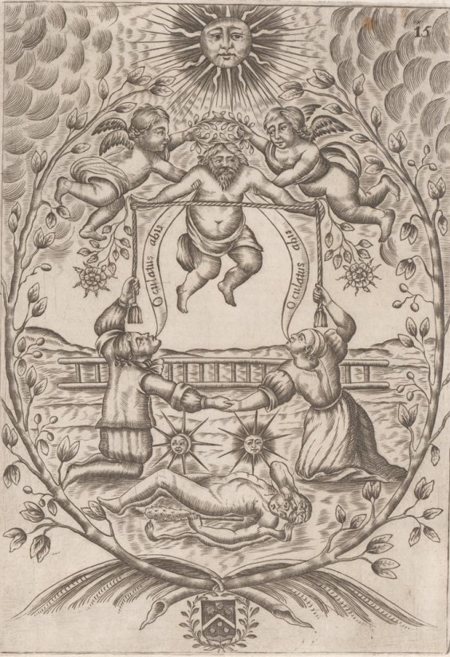
Mutus Liber, Rupellae [La
Rochelles], 1677 - XV
C'est une
apothéose.
Les travaux d'Hercule sont passés, l'échelle est
mise
littéralement
au rancard. Les conjoints tiennent les bouts d'un cordon
présenté
par Hercule, en gloire, que Jupiter enlève dans le ciel.
Ce
cordon et les bras du couple forment un
carré.
Le
soleil et la lune ont été conquis. En bas de la
gravure,
se voit un blason de sable au chevron abaissé,
accompagné
en chef de trois coquilles et de trois besants, qui serait
celui de
Jacob
Sulat, alias Saulat des
Marez,
à qui est attribué le ML.
"La
quinzième et
dernière
planche
représente l’apothéose de Saturne,
victorieux de
son
fils Jupiter
qui l’avait détrôné, et
gît,
inerte, sur le sol. C’est la solarisation du plus vil des
métaux,
sa résurrection et sa glorification dans la
lumière. Les
deux branches d’églantier du frontispice
sont
chargées de
baies rouges
et de baies blanches
remplies de semences
actives
dont chacune a le pouvoir de muer en or ou en argent tous
les
métaux
impurs. De soi-disant mystiques - qui nient la possibilité
de
l’œuvre
métallique et n’ont trouvé dans les
allégories des
philosophes qu’un traité d’ascèse dont ils
seraient fort
embarrassés d’expliquer chaque symbole - ces
pseudo-mystiques
voient
dans cette planche une image de la résurrection de l’homme
et de
son retour dans la patrie céleste, et ils s’extasient
béatement
sur cette découverte qu’ils ne sont pas loin de
considérer
comme géniale." [Hypotypose,
Pierre Dujols]
Cette
interprétation
ne nous convainc pas. Pourquoi Saturne serait-il vainqueur
de de combat
hermétique, alors qu'en toute logique, c'est Jupiter qui
doit
l'emporter
? Si nous considérons les régimes
planétaires, il
est hors de doute que le 1er régime
est celui de
Mercure,
ce qui est conforme aux données de la tradition. S'ensuit
Saturne,
puis Jupiter et la Lune. J. van Lennep, quant à lui, voit
dans
l'homme
couché, non pas Saturne, mais Hercule, image de l'Artiste
épuisé
par les Douze
travaux
qu'il a dû accomplir. Le cordon et les bras du couple
forment
un
carré où l'on peut voir soit les Quatre
Eléments,
soit la Terre. Nous ajouterons qu'Hercule terrassé
symbolise le vaincu et
sublimé : la pierre
herculéenne était, en effet, une représentation du
mercure chez les Anciens. La planche 15 montre Hercule
portant la
tunique de Nessus. Nous rappellerons la légende du
centaure Nessus en empruntant le
texte suivant à
Pernety :
Hercule ayant
vaincu
Achéloüs, n’eut plus de compétiteurs. Il
emmenait Déjanire avec lui, lorsqu’il fut
arrêté dans son chemin par les eaux
débordées & impétueuses, d’un fleuve. Ne
sachant comment le traverser, il eut recours au Centaure
Nessus, qui
savait les gués, & le pria de passer Déjanire de
l’autre côté. Nessus y consentit, prit
Déjanire sur son dos, & la porta à l’autre rive
; mais en traversant la rivière, la beauté de
Déjanire fit impression sur Nessus, au point de l’engager
à vouloir lui faire violence, dès qu’il eut
abordé le rivage. Déjanire se mit à crier, Hercule
l’entendit, & se doutant du dessein de Nessus, il lui
décocha une flèche empoisonnée du venin de
l’hydre de Lerne, & le tua. Nessus en mourant donna sa
robe,
teinte de son sang, à Déjanire, qui en fit l’usage
que nous verrons dans la suite.
Nous avons déjà parlé de ce Centaure, à
l’occasion de Junon changée en nuée, il naquit
d’Ixion & de cette nuée. Son nom indique ce
qu’il était, c’est-à-dire, le mercure au
rouge pourpré, puisque NesoV,
veut dire une robe bordée de pourpre ce qui marque le
temps
où la couleur rouge commence à se manifester sur la
matière, temps auquel Hercule lui décoche une
flèche, après qu’il a passé le fleuve,
c’est-à-dire, après que l’eau mercurielle ne
peut plus se volatiliser, & l’emporter par
l’impétuosité de ces flots. Hercule, dit-on, le
tua, parce que la matière est alors fixe. Il donna sa
robe,
teinte de son sang, à Déjanire ; c’est la
matière au blanc, signifiée par Déjanire, qui
reçoit la couleur rouge, par l’action du mercure
philosophique. Elle la fit porter à Hercule par Lichas,
pour
ravoir son amour, car elle le soupçonnait de l’avoir
abandonnée, pour aimer Iolé, fille d’Euryte.
Hercule la vêtit à mais au lieu d’amour, elle lui
imprima de la fureur : il tua Lichas, & fit ce que
nous dirons,
lorsque nous parlerons de sa mort. Lichas domestique,
porteur de la
robe de Nessus, est le mercure philosophique. Les
Philosophes,
Trévisan entre autres (Philosoph.
des
Métaux.), lui donnent le nom de serviteur rouge,
& Basile Valentin, avec
plusieurs autres, le
nomment loup, à cause de sa voracité & de sa
propriété résolutive, ce qui convient très
bien à Lychas, qui vient de luw
dissoudre, & de cew fondre, se
répandre. On dit que Déjanire devint jalouse
d’Iolé, parce que cette Iolé signifie la couleur de
rouille qui prend la place de la blanche, d’IoV, rouille
des
métaux, & de lawV,
jouir ; c’est pour cela qu’on a suppose qu’elle avait
supplanté Déjanire. On dit Iolé, fille
d’Euryte, parce qu’il vient d’EuroV,
nourriture,
corruption, & que la rouille vient de la corruption.
Déjanire se tua avec la massue de son amant ;
c’est-à-dire, que la matière volatile,
représentée par Déjanire, fut alors fixée
par la partie fixe : Lychas fut changé en rocher par la
même raison.
Fables Égyptiennes et
Grecques,
tome 2, livre IV, chap. XIX, pp. 451-453
Des points de cette fable s'accordent
avec celle d'Atalante et d'Hippoménès, pour ce qui
concerne la lutte du fixe et du volatil
.
Nessus, dans cette affaire, joue le rôle de transporteur à
l'instar du saint Christophe ou Offerus [voir tarot
alchimique]. Il
est en outre marqué du signe de la corruption ioV ou .
Cette corruption, il la porte jusque dans sa robe, tachée de
son
sang, c'est-à-dire du , qu'il
donne à
Déjanire au moment de mourir. Dans son explication de
cabale,
Pernety semble un peu confus : ce n'est qu'une partie de
l'aqua
permanens qui ne se volatilise pas, qui est fixée. Cette
partie
ressortit bien évidemment du
par accrétion au Sel ,
l'ensemble formant le lapis naissant - qui est aussi
le Rebis. La différence essentielle réside dans la forme
de la matière : le Rebis dont on connaît plusieurs
variétés [airain,
laiton, cuivre, etc.] se présente sous un aspect
visqueux [où nous
trouvons
l'équivalent de Lychas] tandis que la naissance du
lapis
est marquée d'un événement majeur dans le cours du
grand oeuvre : la sursaturation de la solution, précipitant
au
sens propre du terme la coagulation de l'aqua permanens;
Jung, par
analogie, nomme ce phénomène individuation. Lychas [LicaV]
se rapporte par ailleurs au système mésotonique si l'on
veut bien voir que licanoV
indique la note située au-dessus de la mèse [mesh];
c'est aussi la corde de la lyre donnant cette note et que
l'on touche
avec l'index: c'est avec cette note clef, s'il en est,
qu'Orphée
instaure le charme dans la nature et dompte les animaux
sauvages. En
d'autres termes, c'est la clef du sel harmoniac des Sages.
Nous savons
- les alchimistes même envieux ne peuvent taire cela - que
le forme le milieu [mesoV] de l'oeuvre et que
son symbole, de fait, pourrait tout aussi bien être ^
que
l'idéogramme habituel. L'accent circonflexe - circumflexus
pour «
fléchi autour » - résume à merveille l'a et
l'w
du Mercure, comme
nous l'avons montré dans l'Aurora
consurgens, II.

Notons que
dans cette fable, Déjanire ne joue pas tant le rôle de
matière volatile que, plutôt, celui de Sel; nous avons
déjà largement insisté dans nos sections sur
l'ambiguité existant entre le Sel et le Mercure.
Sur la massue d'Hercule, voir Atalanta XXV.
Il s'agit
de l'arc d'argent d'Apollon qui symbolise la conjonction
radicale du
sulphur et du principe salin ou toyson d'or. En somme, si
l'on revient
à l'interprétation que donne P. Dujols de la planche 15,
si l'on considère les règles de la cabale
hermétique, on peut admettre que c'est bien de la
glorification
d'un Saturne rénové qu'il s'agit. Il suffit d'ailleurs de
se rappeler du titre d'un des classiques de l'Art sacré : Huginus a
Barma ou
le Règne de Saturne transformé en siècle d'or.
Eh bien ! Ne voit-on pas, de la planche de frontispice à la
planche finale, ce processus dynamique de transformation
spirituelle,
en quoi consiste l'individuation ? La transformation de la materia prima consiste, dans
la
tête de l'Artiste, à y consommer la projection
d'éléments en partie inconscients de sa psyché. En
l'occurrence, la fable d'Hercule et de Déjanire offre un
exemple
dramatique où la sublimation se termine en un feu
dévorant qui n'a rien à voir avec celui, mesuré et
prolongé, de la Grande coction. SH ajoute :
« On
aura noté que la lune est figurée à droite de
l’homme, le soleil à gauche de la femme : cette
apparente
discordance symbolique nous rappelle en fait que
l’accomplissement des noces chimiques, du mariage des
deux
natures hermétiques opposées suppose toujours une phase
où les deux polarités s’inversent,
l’époux devient passif et sa compagne active
»
Comme le montre Jung, il n'y a
là nulle discordance: l'animus de
la femme trouve sa contre partie
dans
l'anima de l'homme . Cette inversion de
polarité survient, dans le processus alchimique, à
l'époque de la dissolution : les Soufres sont dissous et
seul le
Soufre blanc, c'est-à-dire la salamandre ou Sel, résiste
au pouvoir dissolvant du .
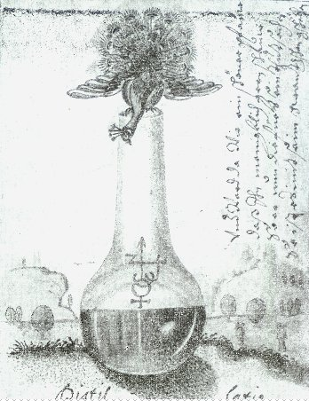
paon sortant d'une
cornue -
Ms. XVIIIe - Dr. C. Rusch,
Nous pouvons tenter de rendre compte
de cette
apparente antinomie par l'image. Ainsi, de ce paon
qui figure dans le Psychologie et Alchimie [Jung, trad. Buchet
Chastel, 1970].
Le paon, rappelons-le, apparaît à la planche
3 du ML.
Son symbolisme est lié à la manifestation de
l'albedo,
lorsque les alchimistes affirment que leur matière
ressemble aux
yeux de poissons [voir Aurora
consurgens, II]. Ainsi, la
cornue est une
représentation du vase de nature dans lequel le
processus
évolue; en témoignent l'entrelacs des idéogrammes
où l'on reconnaît le , , et . Notez le signe z
disposé à
gauche de la flèche d'Ares qui signale l'animation
du Mercure.
« La corde
triple désigne tout
d'abord le lien intime unissant la sapientia et
son adepte... elle
désigne aussi les trois parties du processus qui
unit le corps,
l'âme et l'esprit... de la substance de
transformation en un
accord impérissable... Ce composé est le
résultat
de l'opus, le filius philosophorum ou lapis,
comparable eun sens au
corpus mysticum de l'Eglise. » [Jung,
Psychologie et
alchimie, § 478]
La
sapientia, il faut le rappeler expressément, désigne
l'arcane secret du Mercurius .
Nous l'avons dit, la corde
triple dessine un quadratum  qui est l'image du lapis.
Quant au filius philosophorum, allégorisé dans les traits
de l'Hercule porté en gloire, on le retrouve - selon Jung
[voir
Psychologie du Transfert, chap. 10, la
Nouvelle naissance] - dans la
figure 11 du Ros. Phil. Chose étrange ! La fig. 11
choisie
par Jung ne correspond pas à la nouvelle naissance,
c'est-à-dire au
lapis, mais à celle du Rebis. Il est tout à fait notable
que Jung ait
choisi non pas tant la figure de la renaissance [voir
Psychologie du Transfert, p. 178] comme
symbole de
l'individuation que celle de la transformation. On trouve
dans l'Âme et le
Soi, Renaissance et individuation
[trad. Albin Michel,
1990]
le chapitre À
propos
de la renaissance [extrait
du T. XI 1, pp. 125-162, Gesammelte Werke, 1976]
avec un exposé sur les formes possibles de la « renaissance ». Jung
distingue cinq formes possibles : la métempsychose, la
réincarnation,
la résurrection, la renaissance (renovatio) et la
transformation.
Il nous paraît assez
évident que les deux premiers types de renaissance
renvoient au
transfert [métempsychose]
et à la projection [réincarnation]
dans un sens d'ailleurs assez superposable à celui que
leur
donnent les alchimistes. Le transfert [voir Aurora
consurgens, II]
est lié - selon notre lecture des textes - à ;
la métempsychose est indissociable d'un concept que les
Occidentaux ont
des difficultés - en bons cartésiens qu'ils sont souvent
- : le karma.
Il n'entre nullement dans nos vues de nous livrer ici à
une
exégèse du
samsara. Néanmoins, l'étymologie nous indique que ce
terme sanscrit [dérivé
de
Sam-S R : couler avec] est lié à l'image
occidentale du Mercurius et au
flux de ce que l'on appelle
la « roue du karma », là où les alchimistes
évoquent la cohobation [Fulcanelli
l'associe à un bas-relief
du portail central de Notre-Dame, représentant
l'Orgueil, voir Gobineau].
Une autre
représentation vient d'instinct à l'esprit : celle de la
roue où Ixion est enchaîné. La symbolique est superposable car elle
véhicule des mythologèmes saturniens en rapport avec le
temps [voir Mynsicht, Aureum Seculum
redivivum et
aussi 1, 2, 3, 4, 5, 6, 7, 8, 9, 10,]. Ixion est tenu en
résidence
aux Enfers où le vent fait tourner sa roue pour
l'éternité. On rattache l'ensemble de son mythe au ;
sa carrière fait voir des opérations conflictuelles : il
assassine son beau-père puis, libéré par Zeus,
tente de séduire Héra [pseudo Héra d'ailleurs puisque
Néphélé en avait pris la forme].
qui est l'image du lapis.
Quant au filius philosophorum, allégorisé dans les traits
de l'Hercule porté en gloire, on le retrouve - selon Jung
[voir
Psychologie du Transfert, chap. 10, la
Nouvelle naissance] - dans la
figure 11 du Ros. Phil. Chose étrange ! La fig. 11
choisie
par Jung ne correspond pas à la nouvelle naissance,
c'est-à-dire au
lapis, mais à celle du Rebis. Il est tout à fait notable
que Jung ait
choisi non pas tant la figure de la renaissance [voir
Psychologie du Transfert, p. 178] comme
symbole de
l'individuation que celle de la transformation. On trouve
dans l'Âme et le
Soi, Renaissance et individuation
[trad. Albin Michel,
1990]
le chapitre À
propos
de la renaissance [extrait
du T. XI 1, pp. 125-162, Gesammelte Werke, 1976]
avec un exposé sur les formes possibles de la « renaissance ». Jung
distingue cinq formes possibles : la métempsychose, la
réincarnation,
la résurrection, la renaissance (renovatio) et la
transformation.
Il nous paraît assez
évident que les deux premiers types de renaissance
renvoient au
transfert [métempsychose]
et à la projection [réincarnation]
dans un sens d'ailleurs assez superposable à celui que
leur
donnent les alchimistes. Le transfert [voir Aurora
consurgens, II]
est lié - selon notre lecture des textes - à ;
la métempsychose est indissociable d'un concept que les
Occidentaux ont
des difficultés - en bons cartésiens qu'ils sont souvent
- : le karma.
Il n'entre nullement dans nos vues de nous livrer ici à
une
exégèse du
samsara. Néanmoins, l'étymologie nous indique que ce
terme sanscrit [dérivé
de
Sam-S R : couler avec] est lié à l'image
occidentale du Mercurius et au
flux de ce que l'on appelle
la « roue du karma », là où les alchimistes
évoquent la cohobation [Fulcanelli
l'associe à un bas-relief
du portail central de Notre-Dame, représentant
l'Orgueil, voir Gobineau].
Une autre
représentation vient d'instinct à l'esprit : celle de la
roue où Ixion est enchaîné. La symbolique est superposable car elle
véhicule des mythologèmes saturniens en rapport avec le
temps [voir Mynsicht, Aureum Seculum
redivivum et
aussi 1, 2, 3, 4, 5, 6, 7, 8, 9, 10,]. Ixion est tenu en
résidence
aux Enfers où le vent fait tourner sa roue pour
l'éternité. On rattache l'ensemble de son mythe au ;
sa carrière fait voir des opérations conflictuelles : il
assassine son beau-père puis, libéré par Zeus,
tente de séduire Héra [pseudo Héra d'ailleurs puisque
Néphélé en avait pris la forme].
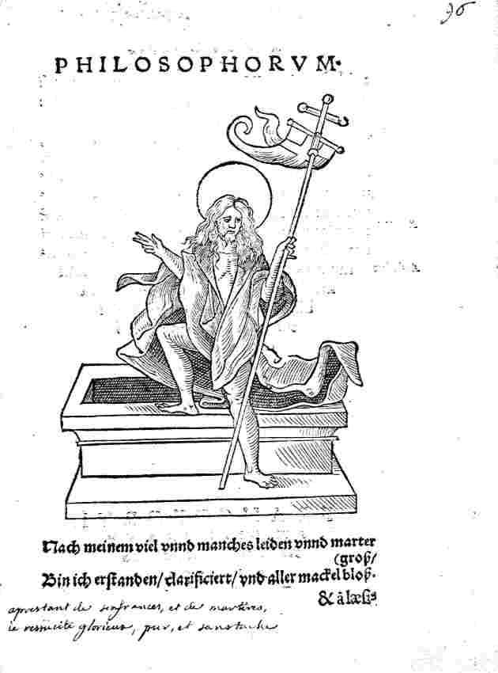
fig.
21
du Ros. Phil.
Il
semble qu'Ixion soit le symbole de
l'entité psychique se perdant dans le dédale de l'espace
intercepté entre la circonférence et le point solaire; entité dont le
sulphur représente
l'hiéroglyphe probable. C'est
un spiritus qui finit mal, qui n'a pas trouvé le chemin du
ciel
firmamental de Philalèthe [l'eau étoilée
et
métallique est la quinta
essentia au sens d'eau germinative, voir
Mylius, Philosophia Reformata].
Ajoutons
que c'est Hermès qui reçut mission d'appliquer à
l'ingrat Ixion le châtiment : il le lia au moyen de
serpents
à la roue qui tourne sans relâche au fond du Tartare.
Voyons à présent la deuxième forem possible de
renaissance : la réincarnation. Elle correspond
manifestement
à une projection [en
effet, la métempsychose ou transmigration, correspond à
une conception cyclique où nous voyons l'action
saturnienne]
où se trouve engagé [voir là encore Aurora consurgens,
II].
On voit que ces deux premières formes de renaissance sont
liées et que leur formulation est primitive - au sens
d'élémentaire. Mais il faut noter le progrès
réalisé entre les deux, dans la mesure où la
réincarnation envisage un temps davantage linéaire : il y
a une schizogénie réalisée par l'incarnation de
l'âme dans le corps mais elle ne constitue pas un
événement singulier [il
y
a transfert de conscience où un être, parfaitement
éveillé, peut revenir sur Terre en échappant au
cycle du Samsara ou se fondre dans le Nirvana].
Il y manque un
facteur qui n'apparaît qu'avec la troisième forme de
renaissance : la résurrection.
« Ici vient s'ajouter une
autre nuance :
celle de transformation, de la transmutation de
l'être...
À un niveau supérieur, ce processus est une
élévation du corpus
glorificationis, du subtle body, à l'état
d'incorruptibilité. » [Jung, l'Âme et le Soi, À propos de la renaissance,
§203, op. cit.]
On
pourrait penser que la différence est mince entre
réincarnation et résurrection; tel n'est pas le cas
puisqu'ici, on envisage que la réincarnation s'effectue in proprio corpore.
La
césure est donc nette d'avec la structure cyclique
correspondant
à la dialectique métempsychose - réincarnation. La
flèche temporelle est sensée mais l'état de corps
glorieux échappe totalement au principe de raison. En
alchimie,
cet état correspond au sulphur
dépuré, prêt à être
réincrudé dans un corps rénové [voir Mundificatio in Ros. Phil.]
Le
quatrième type est la renaissance (renovatio) qui
correspond
à un renouvellement - dans le sens d'un enrichissement -
de la
psyché où participent des facteurs de renforcement,
d'amélioration ou de guérison; ici, le mot de
transmutation peut être prononcé dans le sens de
projection radicale. Nous n'en sommes plus, là, au stade
du
lapis, mais de la projection de poudre philosophale,
assurant la
guérison des corps et l'évolution des métaux en
argent (argyropée) ou en or (chrysopée). Il faut
toutefois comprendre que cette renovatio
- stricto sensu - met en branle un processus de projection
extérieure [la
projection
dont nous avons parlé jusqu'alors étant localisée
dans le vase de nature de l'alchimiste; nous avons
d'ailleurs
attiré à plusieurs reprises l'attention sur la
méprise des auteurs quant au sens du mot élixir, a
fortiori de celui de projection]. Or, la
projection
extérieure a nom : mythes, oeuvres artistiques, etc., bref
de
tout ce qui ressortit de la part imaginaire de la psyché,
c'est-à-dire de notre ombre [voir
un essai sur le chef d'orchestre Sergiu
Celibidache là-dessus]. La
renaissance
paraît indissociable de la cure, du traitement et l'on ne
saurait
en trouver meilleur équivalent alchimique que le
rajeunissement
subi par le roi dans la fons
mercurialis. Là encore, la renovatio
procède de
la réincrudation et constitue une forme plus
évoluée de résurrection au sens où elle
peut être étudiée par les psychologues et les
psychiatres [voir tout particulièrement
Jung, la Vie
symbolique et les Essais sur la
symbolique de
l'Esprit, 1er et 3ème
volets d'une
trilogie sur les rapports entre la psychologie
analytique et le
Christianisme; l'Âme
et le Soi - 2ème volet -
constituent une sorte
de point d'orgue dans cette trilogie].
Le
cinquième élément de la renaissance est
constitué par la transformation rituelle telle qu'elle
s'opère dans la messe [mystère
de la transsubstantiation] ou les mystères
d'Eleusis [illusion
de l'immortalité]
comme Jung le rapporte :
« En
vérité, c'est un beau mystère que les dieux
bienheureux proclament ! Pour les mortels, la mort n'est
pas une
malédiction, mais une bénédiction !
» [l'Âme et le Soi,
note 2, À propos de
la
renaissance, épitaphe d'Eleusis]
C'est
à peu près en ces termes que s'exprimait Cyliani :
« J'aperçus un effroyable
dragon qui
avait un énorme dard à trois pointes qui cherchait
à me lancer son haleine mortelle. Je m'élançai sur
lui en criant: "Lorsqu'on a tout perdu, que l'on a
plus d'espoir - La
vie est un opprobre et la mort un devoir".
» [Hermès
Dévoilé, ca. 1831]

fig.
11
du Ros. Phil.
En
bref, il apparaît logique qu'en lieu et place de la fig. 21 du Ros.
Phil., Jung ait proposé la fig. 11 en
ce qu'elle
illustre parfaitement bien la 4ème forme de la
renaissance, qui est la rénovation ou transformation
intérieure, dont le but est l'individuation.
planche
finale
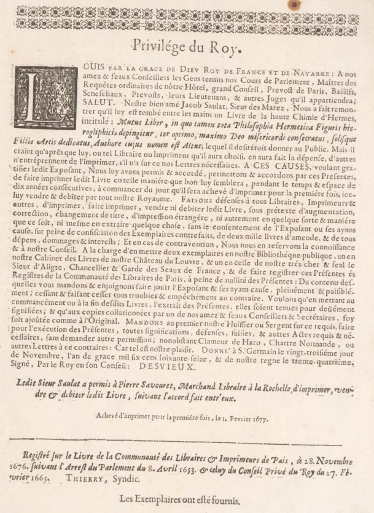
"Mais si nous redevenons pur esprit,
c’est donc que notre corps
en renfermait l’essence
sous sa
forme
grossière et, dans ces conditions on ne saurait refuser
aux
métaux
les mêmes propriétés. L’esprit ou le
feu est
partout
si froid en apparence, dans les métaux qu’on transforme en
fulminates
inflammables et détonants
au moindre choc. Or, la
transmutation
est un phénomène qui fait passer
l’espèce,
du plan
inférieur au plan supérieur, au moyen d’un agent
spirituel,
véritable semence nommée poudre de projection. Ce
produit
merveilleux s’obtient par la mort et la putréfaction
réelle
d’une substance métallique, laquelle,
transfigurée,
à
la propriété de modifier à son tour
les
êtres
de sa nature. Ceux-ci, sous son action, subissent de même
une
mort
et une résurrection promptes, qui les
élèvent
à
leur plus haut degré de dignité. Les
Hermétistes
comparent
cette transformation à celle du blé.
[voir
Chevreul
et l'alchimie : 1, 2, 3, 4] Le grain
se
corrompt
dans la terre, assimile les éléments grossiers du
sol et,
par le travail d’une longue digestion,
les mue en pur
romet
dans
le rapport de cent pour un. Cette digestion est plus ou
moins
activée
par l’ambiance. Dans certains climats, la moisson a lieu
trois
mois
après
les semailles, et sous le tropique, la végétation
a
quelque
chose de presque instantanée. Il est donc tout à
fait
rationnel
qu’un ferment doué d’une grande puissance et
projeté dans
les corps soumis à une température
élevée,
puisse les faire évoluer avec une rapidité qui
tient du
prodige.
L’évolution
est
la loi de
la vie
: le
minéral devient végétal et le
végétal
animal, par voie d’intrussusception; mais ce transit est
subordonné
à la médiation [terme
repris de la Table
d'Emeraude
bien
traduite. Rappelons que de nombreux textes font
circuler la Tabula
Smaragdina
avec le mot « méditation » au lieu du
mot «
médiation
», ce qui fausse le sens. Hortulain a
rédigé son Commentaire
sur la mauvaise traduction, de même qu'Eugène Chevreul.
En revanche, Fulcanelli et Ferdinand Hoefer
donnent la bonne traduction; notons que les versions
traduites outre
Manche donnent aussi une version exacte] d’un
agent
extérieur, plante ou bétail. Si donc les
métaux
sont
admis de la sorte à passer d’un règne dans
l’autre, avec
l’aide d’un élément approprié, il est
plus logique
encore qu’un certain or parfait et quintessencié,
ramené
à son état radical et spermatique, ait la vertu
d’exalter
et de convertir en lui-même ses homogènes.
N’est-ce
pas
ainsi
que le germe humain, en gestation, assume et transforme la
substance
des
être d’une origine moins noble ? La nutrition est une
métamorphose
continue. De même que, dans les trois règnes, tout
converge
vers l’homme, dans les minéraux, tous aboutissent
à
l’or.
Mais il n’en faut point déduire que la nature, à
la
longue,
fasse de l’or avec du plomb. Elle a besoin, pour cet
effet, du
secours
de l’art, c’est-à-dire du ferment magique qui en
opère la
transmutation.
L’or
est appelé le soleil,
car
en grec,
aur est la lumière [aurion :
demain, vers le
matin, c'est-à-dire du côté de l'Orient] ;
il est le ciel des métaux,
la
spiritualisation
de l’espèce [aura : souffle d'air].
Les
métaux deviennent donc or comme,
à
certains égard, notre corps devient esprit par le travail
de
la
fermentation posthume.[les métaux
sont transformés en chaux ] La
putréfaction,
nauséabonde et
hideuse,
est pourtant la prestigieuse fée qui opère tous
les
miracles
du monde. C’est une grossière erreur de croire que, chez
l’homme,
l’âme abandonne le corps avec le dernier souffle. Elle est
elle-même
entièrement chair, car la matière est une
modalité
de l’esprit à différents états sous la
dépendance
d’une étincelle majeure et plus subtile, qui est le Dieu
de
chaque
organisme et si la Science nie la réalité de
l’esprit
parce
qu’elle n’en a jamais trouvé trace, elle
déshonore son
nom. [Jung n'a
pas dit autre chose, en substance]
Un cadavre, rigide et glacé, n’est nullement mort au sens
absolu.
Une vie intense, mais inconsciente heureusement et sans
réflexes
sensibles, continue dans la tombe, et c’est de cet
horrible et
plus ou
moins long combat - qui est le Purgatoire des Religions -
que la
matière,
distillée, sublimée, transmuée et
vaporisée
par l’action du Soleil, s’élance dans le plan
amorphe, qui a ses
degrés depuis l’air jusqu’à la lumière
élémentaire
et de celle-ci au feu principe où tout finit par se
résoudre
et d’où tout émane à nouveau.
Nous
croyons avoir accompli notre
tâche
avec toute la probité requise, et fait luire quelques
clartés
nouvelles dans un domaine obscur. Au disciple, maintenant,
de
parachever
l’Œuvre. Quant à ceux qui prétendent
acquérir la
Sagesse
sans mérite et seulement de quelque obole vile et
méprisable,
nous leur disons, comme le saint Jérôme de la
légende
au riche et désœuvré Cratus: " La Philosophie ne
vous est
pas idoine ".
Pour
vous,
fils de science,
souvenez-vous du
signe éloquent que vous adressent les figures terminales
de
la quatorzième
planche, et de la glose qui clôt le Mutus Liber: Si vous
avez
compris,
travaillez dans le silence et fermez quelque temps encore
la bouche sur
le Mystère."
[Hypotypose,
Pierre Dujols]
La fin de
l'Hypotypose
de Pierre Dujols ne reprend pas, bien sûr, la
dernière
planche
de texte du ML,
mais
représente
une Récapitulation de l'oeuvre. Nous ne commenterons pas
ces
lignes
qui s'apparentent davantage à la pure cabale qu'à
son
application
à l'alchimie « opératique ».
IV. Epilogue
On l'a vu, l'auteur du ML
s'est caché derrière le pseudonyme d'Altus qui ne
serait que
l'anagramme de Saulat
ou
mieux de Soulat.
Et le nom de guerre de notre Altus serait donc Soulat des Maretz.
Voilà qui ne nous avance guère. Si nous reprenons la Lettre
d'un Philosophe de Limojon de saint
Didier, ainsi
que notre analyse spécifique de la planche 4 du ML, nous
sommes parvenus
à ce passage où nous discutons du sel,
évoqué ostensiblement par Altus :
Dans
cette optique, nous sommes en droit si l'on rapporte la
rosée au
sens particulier que lui ont attribué les alchimistes, de
reconnaître à notre menstrue des qualités que ne
lui ont jamais connues ou reconnues les universités. Quel
est
l'usage réservé que l'Artiste fait de la rosée ?
Nous l'avons dit, elle le sert comme dissolvant des métaux
et
des minéraux. On doit recueillir - voir la planche
4 du ML
-
ce fruit non encore mûr alors que le
- comprenez la dont
n'est pour ainsi dire que le miroir - tient le milieu
entre
et . Il s'agit donc d'un sel
et il faut se garder de
prendre cette matière saline pour le SEL
des
Sages dont l'hiéroglyphe, rappelons-le, est . Ce sel Nitre,
curieusement, est apparu à La
Rochelle, presque en même temps qu'était
édité le ML
: E. Canseliet l'appelle sel isotope de l'arcanum
duplicatum : il a été découvert par Seignette,
apothicaire, vers 1672 [l'édition
originale du ML date de 1677].
Né à La
Rochelle, le 4 décembre 1660, Pierre Seignette est mort dans
la
même ville le 11 mars 1719. Il était pharmacien dans sa
ville natale, mais en 1686 il se convertit au catholicisme
et, pour
prit de son abjuration, fut admis au Collège des médecins
de La Rochelle. II n'est connu que par la découverte du
tartrate
de potasse et de soude, découverte tout accidentelle, qu'il
fit
vers 1672. Il exploita longtemps, sous le nom de sel
polychreste, ce
composé dont il tint la préparation secrète;
depuis lors le tartrate de potasse et de soudee est connu en
chimie et
en médecine sous le nom de sel de Seignette. On a de
Seignette
plusieurs brochures, où il exalte les propriétés
merveilleuses de son arcane :
I. Ies principales
utilités et l'usage le plus familier du véritable sel
polychreste. La Rochelle, 16..., in-4". — II. La nature, les
effets et les usages du sel alcali nitreux de Seignette...,
in-4°.
— III. Le faux sel polychreste, les utilités de la poudre
polychreste, etc. La Rochelle, 1675, in-8°
[L. Hv. Extrait du Dictionnaire encyclopédique
des
sciences médicales. Troisième série. Tome
huitième, Scl-Sep, M. A. Dechambre, Paris, G. Masson, P.
Asselin, 1880]
Le tartrate double de
potasse
et de soude est un sel congénère du tartre
vitriolé. Un rapport de Boulduc, datant de 1731, qui
examinait
la nature de ce sel dont l'analyse s'était jusqu'alors
dérobée aux regards des chymistes, permet de
préparer cette susbtance. Nous avions alors ajouté :
Peut-on,
en vérité, penser qu'il y ait quelque liaison entre
Pierre Seignette et l'édition du ML ? Rien
ne le fait
supposer ni dans la littérature spécialisée, ni
dans les supputations des historiens de l'Art sacré.
Toutefois,
il est impossible de ne pas remarquer que trois planches,
au moins, du ML,
se rapportent
expressément à la préparation d'un sel : il s'agit
des planches 5, 6
et 7. Nous en avons discuté dans
l'introduction à l'étude du ML et prions
donc le lecteur
de s'y reporter.
Et à présent
? Eh bien ! Pierre
Seignette
peut avoir quelque rapport avec Soulat
des Maretz. Voici pourquoi. Seignette a
pour origine sagne,
seigne
et saigne
: le mot sagne
est
encore utilisé comme nom commun pour désigner une zone
marécageuse ou humide où ne poussent que des herbes de
marais que l'on utilisait autrefois pour faire de la
litière, [du gaulois
sagna, terre
marécageuse]. Il s'agit là de toponymes
jurassiens [voir http://home.worldcom.ch/pdelacre/toponymie_jurassienne.html].
Voyons
à présent Soulat.
On peut y voir le latin Sol
ou soleil ou le latin solus,
seul [en grec ion
proche de ioV,
rouille]. Quant au mot Maretz,
il vient en droite
ligne de Maret
ou marais.
Ainsi, par cabale, peut-on voir en Soulat des Maretz
l'anagramme spirituel du Soleil
du marais, de la fange ou de la boue. Ce
qui nous
renvoie à la figure d'Adamas sortant de la boue dans la planche VIII du Splendor
Solis [voir Ripley Scrowle
pour une
étude sur l'Adam primordial et l'Adam kadmon]. Ce
n'est
pas tout : en grec, marais se dit eloV tandis
que
s'épelle hlioV.
On mesure le poids de cabale qu'Altus a insufflé à son
pseudo patronyme. Il y a plus : en latin, marais se dit stagnum, qui
n'est point
éloigné de stannum
[plomb argentifère ou
] que l'on peut
rapprocher de stagwn
[liquide coulant
goutte à goutte
ou eau de mer]. Voilà qui nous ramène à la planche I où l'on a
déjà parlé de cette mer étale,
encalminée qui contient en son sein le natron dont l'Artiste
a
besoin pour son . Il existe une
autre piste sur
l'origine d'Altus : Ferguson [Bibliotheca
Chemica, II] écrit que :
« L'auteur
anonyme,
dit Arcere dans son Histoire
de la ville de la Rochelle,
1757, in-4, t. 2, p. 384, pourrait être Jacob SAULAT,
sieur DES
MAREZ, lequel demanda un privilége pour ce manuscrit. Je
crois
que le vrai auteur est TOLLÉ médecin de la Rochelle,
grand chimiste ; le nom emprunté Altus le désigne assez.
Quérard (Les
Supercheries Littéraires Dévoilées, 1869, i. 282d) enters this
book under
Altus and agrees with Barbier in ascribing it to Tollé.
Brunet
(i. 203) also enters it under Altus, but prefers
ascribing it to
Saulat. May Altus not be meant for a kind or anagram of
Saulat ?
»
Tollé, « grand
médecin de La Rochelle. » Ce nom rappelle
aux Amoureux de science celui de Jacques Toll [voir le Chemin
du Ciel Chymique]
ou Jacobus Tollius mais il s'agit là d'une fausse piste
puisque
Tollius, s'il voyagea beaucoup, ne s'arrêta pas à La
Rochelle. En revanche, on a peine à croire que Tollé ne
connaissait pas Pierre Seignette... Récemment, on a
pourtant risqué l'hypothèse suivante :
Mutus Liber
Das „stumme Buch“ ist ein alchemistisches Werk, das von
einem gewissen Altus verfasst wurde und mit dem Holländer
Jacobus
Tollius oder dem Franzosen Joseph du Chesne (Duchêne)
identifiziert wird. Die Estausgabe erschien im Jahre 1677
unter dem
Titel Mutus liber in quo tamen tota Philosophia hermetica
figuris
hieroglyphicis depingitur ... solisque filiis artis
dedicatus, authore
cuius nomen et Altus. Das Werk besteht ausschließlich aus
Darstellungen, die die Herstellung des Steines der Weisen
angeben.
http://www.ringbote.de/rollenspiele/spielhilfen/vermischtes/alchemie/alchemie_schriften.html
mais il semble bien
s'agir
là d'une confusion entre le médecin rochelais
Tollé et Tollius. Quant à Joseph du Chesne, alias Quercetanus, il n'a
jamais, à
notre connaissance été pressenti comme l'auteur
supposé - le commanditaire - du ML.
Bibliographie
sommaire
1. Mutus
Liber,
La Rochelle, 1677, (Ferguson
I,
29-30)
2. L'alchimie
et son livre muet,
Paris, 1967
3. Bibliotheca
chemica curiosa,
Genève, 1702
4. Histoire
de la ville de La Rochelle et du pays d'Aulnis,
La
Rochelle,
1757
5. Commentaires
sur le Mutus Liber,
S. Hutin, Maizières-lez-Metz,
1966


 ou digamma qui est
l'image même du lapis. Cette
lecture permet de comprendre qu'une transformation radicale
s'opère dans la psyché de Jacob et qu'à la
tripartition AER - TERRA - COELUM vient
s'ajouter le
transfert psychique dont le rêve forme la précipitation.
Ainsi, d'un état corrompu et amorphe, Jacob passe-t-il d'un
état dépuré à un état pour ainsi
dire limpide, clair comme du cristal de roche. Désormais, il
sera en paix avec sa conscience. Nous l'avons dit, c'est la
rosée qui forme la trame ou le
ou digamma qui est
l'image même du lapis. Cette
lecture permet de comprendre qu'une transformation radicale
s'opère dans la psyché de Jacob et qu'à la
tripartition AER - TERRA - COELUM vient
s'ajouter le
transfert psychique dont le rêve forme la précipitation.
Ainsi, d'un état corrompu et amorphe, Jacob passe-t-il d'un
état dépuré à un état pour ainsi
dire limpide, clair comme du cristal de roche. Désormais, il
sera en paix avec sa conscience. Nous l'avons dit, c'est la
rosée qui forme la trame ou le  tranquille, mer étale
renfermant les sels dont
l'Artiste a besoin, concentrés dans les
tranquille, mer étale
renfermant les sels dont
l'Artiste a besoin, concentrés dans les  [il
ne s'agit
pas de la stibine
[il
ne s'agit
pas de la stibine